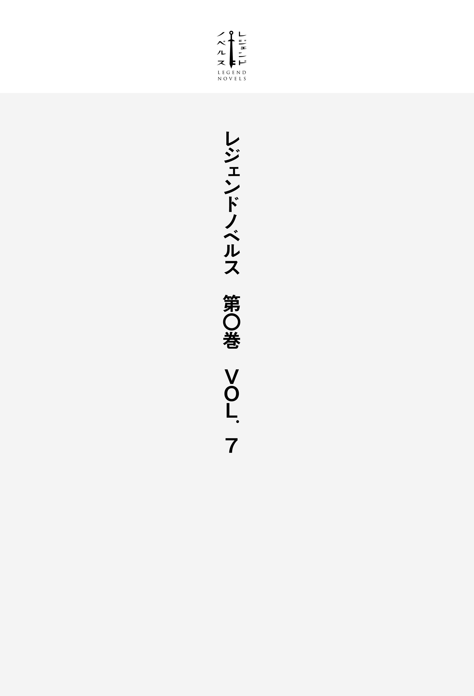

| レジェンドノベルス第０巻 ＶＯＬ．７ ２０１９年４月版 | |
| 津田夕也 & 北乃ゆうひ & のらふくろう & 浦賀やまみち | |
| 講談社 (2019) | |
本作品は、縦書き表示での閲覧を推奨いたします。横書き表示にした際には、表示が一部くずれる恐れがあります。
ご利用になるブラウザまたはビューワにより、表示が異なることがあります。

『死人新書』 二〇一五年 善 継 光
「これは、死者が攻めてきた際、初めてわかったことである。
彼らの動きは遅く、感覚が鈍く、個体によってはまともに歩くこともままならず、およそ知性的な存在ではない。
だが我々人類は、彼らに対して恐れおののくのみであった。連中はぼんやりとした足取りで、しかし気がつけば背後にまで忍び寄ってきていて、一度連中の間合いに入ればバッタのように飛びかかり、そして摑 まれてしまえば恐るべき力で生者を摑んで放さないのである。
一度嚙 みつかれてしまったものは、もし生き残ったとしてもその場で死なせてやるのが賢明だ。連中に嚙みつかれてしまったものはまず助からない。いずれ連中と同じ者に成り果てるのを待つばかりである。
連中に対する有効な対策は、特にない。」
『侍刀如神』 二〇一六年 夏ごろ 著者不明
「銃は頭部に当たれば倒せるが周りの死人どもを集めてしまうし、槍 のようなものを作るとしても、正確に頭部に当てなければならないので難しい。どちらにせよ狭い場所では扱いづらく、刃はすぐに使い物にならなくなってしまうだろう。
唯一例外とされるのは、ジャパンのサムライが使っていたという〝刀〟である。
〝刀〟といっても、本物の職人が鍛え上げた真の〝刀〟でなければならぬ。
元来、サムライが使っていた〝刀〟は、数人斬りつければもう使い物にならなくなる武器だとされていたが、それは大きな間違いだ。
我々は〝刀〟に対する認識を改めなくてはならない。私は、たった一振りの日本刀で何百匹もの歩く死人を相手にしていた女子高生のタツジンをこの目にしている。
本当に、日本人は恐るべき殺 戮 者 である。この国は各家庭に必ず一本以上の〝刀〟が用意されており、子供の頃から剣術を覚えさせられ、壮年に至る頃にはもはや誰にも手に負えなくなるのだ。」
『難民キャンプにおける手記』 二〇一六年十二月二日 枩 村 白 茂
「さいきん、東京から流れてきた者の間で、日本の剣術に関して多くの誤解が生まれているらしい。
俺もただの噂 かと思っていたんだが、とあるスマホで撮影された動画を目の当たりにした。
アレは人間じゃない。たぶん鬼の末 裔 かなんかだ。」
『終末語録』 二〇一七年春ごろ 姓は瘧 師 名は未記入のため不明
「あの少女は、本当に熟達した刀の使い手である。
たった一振りで相手の四肢を切り捨ててしまうのだ。（とある武術の師範代より）」
「はーっ、はーっ、はーっ」
日 比 谷 康 介 は、息を切らしながら走っている。
もうダメだ、と、思った。死ぬしかないのだ、とも。
彼に迫る者たちの数は、四人......いや、四匹、というべきか。
あれはもう、人間ではない。人間であろうはずがない。
内臓を引きずりながら、心臓に穴を開けながら、顎を砕かれながら、腕をもがれながら......それでも平気で歩きまわるような存在を、人間とは呼ばない。
奴 らは、死なないのだ。
四匹の群れは、決して足が速いわけではなかった。
全力で走れば、逃げ切れない相手ではなかった。
だが、彼らには、
──〝決して疲れない〟
──〝決して諦めない〟
──〝決して容赦しない〟
という、恐るべき特性があった。
走っても、走っても。
逃げても逃げても、いくら逃げても。
いずれは奴らに追いつかれるだろう。
それは、子供のころに見た悪い夢に似ていた。
世界は終わってしまうのだと思った。
＊
世界が壊れたのは、今から三日前のこと。
渋谷の交差点にて。
誰もが最初に現れた〝それ〟を、酔っぱらいか何かだと思ったらしい。
とことこ歩いて、近くにいたおじさんをガブリ。
二人を引き離そうとした勇気ある若者もガブリ。
アウトブレイクの始まりだ。
それから世界中、あちこちの都市で感染者が現れた。
単純に〝ゾンビ病〟と呼ばれているその病は、いつ、どこで、どのように生まれたのか、詳しいことは誰も知らない。
神が人類を滅ぼすために作った、なんて言う人もいる。終末のラッパが吹かれたのだと。
仏教徒であるところの康介はまったく信じていないが、ラッパを吹いたのが誰にせよ、世界が〝終末〟へ向かっているのだという実感はあった。
そして、世界の〝終末〟より一足お先に、自分の命の終 焉 が一メートルほど背後に迫っている。
右足首をくじいていた。
まさしく、致命的な不覚である。
自分の後ろ髪を、〝奴ら〟の指が掠 めたことに気づく。
「......ひっ！」
彼らに殺 られている人を、数多く見てきた。
生きたまま喰 われる、ということ。
その、本能的な恐怖。
ゾンビ映画は好きではない。前に一度、テレビでやっているのをワンシーンだけ流し見して、すぐにチャンネルを変えた覚えがある。
〝ゾンビ〟に囲まれた人が、ピストルで自分の頭をズドン。自殺するシーンだった。
何を馬鹿な、と思った記憶がある。
銃があるのだ。最後まで、生きるための努力をすべきだ。抵抗すべきだ。
そう思った。
今なら、それが大きな間違いだとわかる。
他の生物に生きたまま喰われるくらいなら、痛みを認識する前に、人生のリセットボタンを押したほうが、よほど気楽だ。
手元に拳銃さえあれば、自分も大喜びで引き金を引いたことだろう。
残念ながら、銃社会でない日本において、拳銃など手に入るわけもない。
康介は、涙と鼻水で顔面をぐしゃぐしゃにしながら、運動場の地面に派手にすっころんだ。
じわりと、股間に温かいものが広がっていく。
失禁していた。
「せめて、楽に殺してくれ」
そう願った、次の瞬間。
「ほいしょっと」
と、気楽な口調で呟 きながら、一人の少女が現れた。
赤のジャージ姿。三年生。
その胸には、我が『雅 ヶ 丘 高校』の校章が見える。
彼女の戦う姿は。
なんかこう、「駆除業者が来ました」という感じで。
ほとんど機械的な動きで、彼女は〝ゾンビ〟の頭部に日本刀の切っ先を差し込んでいった。
たったそれだけだった。
それだけで〝ゾンビ〟たちは、虫けらのように息絶えていく。
「......へ、あ？」
口から漏れるのは、間の抜けた声。
こちらに向けて、真 っ直 ぐに手が差し出される。
少女は微 笑 んで、
「危なかったですねぇー。あなた、大丈夫ですか？」
それが伝説の始まりだった。
──あなたは〝ある理由〟により、生き残らなければなりません。
──あなたの存在が必要とされなくなるその日まで、あなたを導きましょう。
「──みゃッ？」
悲鳴と共に目を覚ましたのは、ある冬の日のことでした。
こたつに足を突っ込んで、スマホを握ったまま寝オチしていたようです。
そのまま、十秒。
......幻聴かな？
そう判断した私は、心地よい二度寝の世界へ......。
と、そのときです。
どん、どん！ どんどん！
耳にうるさいノックの音が。
宅配便かしらと思いながら起き上がり、もっさりした動作で眼鏡をかけると、昨晩寝る直前まで遊んでいたソシャゲがつけっぱになっていることに気がつきました。
そこに表示されているのは、
【ＹＯＵ ＤＥＡＤ ※魔法石を消費してリトライしますか？】
という不穏なメッセージ。
おお、やだやだ。朝から不吉だこと。
とりあえずスマホの電源をオフにして。
寝起きの顔に「不機嫌」の文字を貼り付けた私は、飽きもせずどんどんどどんどどんどんどんとやってる誰かさんを迎え入れようと、１ＬＤＫを横切ります。
たぶんですけど、宅配便かなんかでしょう。
乙女の恥じらいをかなぐり捨てて、寝ぼけ眼で扉をガチャリ。
すると、
『──おぉぉぉぉ。......おぉおおおおおおおおおおお......』
〝ゾンビ〟の仮装をした人が、目の前にいました。
「......あらまあ」
そっと扉を閉めます。
見間違えかしらと思って、覗き穴 で外を確認。
『おおおおおおおおおおおおおおおおおおッ！』
そこには、さっきよりちょっとだけテンションが上がった〝ゾンビ〟の姿が。
今日ってハロウィンだったかしら、とか。
これだけハッチャケた仮装をしでかすご近所さんなんていたかしら、とか。
そんなことを、ぼんやり考えます。
......フウム。
お隣の田 中 さんならありえますね。
念のため扉のチェーンをかけた私は、早朝の仮装パーティには参加せず、アクビまじりにリビングへと戻ります。
ドアのノックはさらにうるさくなったけど、ごめんなさい私、トリックもトリートメントも間に合ってるんですよ。
さよならどこかの誰かさん。他あたってください。
そしてもう一度、我が愛 しのこたつに潜り込み、ぬくぬくしようとすると......。
──武器を手にとってください。
またもや幻聴。
おう、おおおう。
私の頭はどうしちまったのでしょうか。
しかしどうでしょう。考えようによっては、幻聴というのも悪くないかも。
一人ぼっちの人生も、いつも誰かが話しかけてくれるのなら、それもそれで楽しいような。
「じゃ、二度寝しまーす♪」
誰に聴かせるわけでもなく、私は気軽に言いました。
──武器を手にとってください。
まあ、しつこい。
無視してこたつに潜り込みます。
そして違和感。
いつの間にやら、こたつの電源が切れていやがるじゃありませんか。
足を突っ込んでも、感じるのは空虚な寒々しさだけです。
愛おしくない。こんなこたつ、これっぽっちも愛おしくない。
確認すると、ちょうどブレーカーが落ちたとこのようです。
もっとも、焦りはしませんでした。
よくあることなんです。うちみたいなボロマンションでは。
手慣れた調子でブレーカーを操作......するのですが。
「あれれ？」
カチカチとスイッチを上げ下げしますが、変化なし。
「なんでやねん」
慣れぬ関西弁も飛び出そうものです。
どうやら、停電しているのはこの部屋だけではなさそう。
復旧には時間がかかりそうです。
......ふうむ。
と、なると。
どうしましょう？
──武器を手にとってください。
いやいや、幻聴はもういいんですって。と、脳内にツッコミを入れつつ。
そんじゃま、暇な間でさささっと洗濯でも済ませますかと、数日ぶりに遮光カーテンを引き、ベランダに足を踏み入れます。
「ありゃまあ」
目を疑いました。
無理もありません。
どうやら、私がのんびり連休を満喫している間。
世界が終わっていたらしいのです。
うちのマンションはボロいけど、そこそこ見晴らしはよくてですね。
数キロほど向こうで、黒い煙がもうもうと立ち込めているのが見えていて、すぐ目の前の公園が一望できるのですが......。
その辺りをフラフラっとうろついてる人たちが、......なんというか。
......。............うーん。
これって、言っちゃっていいのかな。
笑わないでくださいよ？
...............〝ゾンビ〟、的な？
そのもの、というか？
ムシャムシャやっとるわけです。（グロ注意！）なシロモノを。
へえ？ アンタら、わりと共食いとかしちゃうタイプ？
ハロウィンって、そこまで十八禁仕様になっちゃってました？
とまあ、最初の感想はそんな感じで。
あっ、そうそう。
ちなみに私が見たのって、〝ゾンビ〟だけじゃなくてですね。
......。............うーん。
これ、言ったら絶対笑われると思うんですけど。
笑わないでくださいよ？
〝ドラゴン〟......的な？
なんか、そんな感じの、......ファンタジックな生き物？ が、ですね。
数十匹ほど大空を羽ばたきながら、ウンギャーウンギャー喚 いてるのが見えるんです。
破天荒すぎますよね。
すわ、映画の宣伝もここまできたか、と。
現実逃避すること、数十秒。とりあえず思い切り眉間を揉 みます。
ええ、わかってます。
いくら私が脳天気だといっても、映画の宣伝と現実の見分けがつかないわけがありません。
......それにしても。
この手の危機って、どっちか片方なモンじゃないんですか？
だってそうじゃないとホラ......困るじゃないですか。
人類が。
〝モンスター映画〟と〝ゾンビ映画〟。
どっちか片方だけでも、軽く人類絶滅しそうなモンだってのに。
両方て。
少なくとも〝ドラゴン〟のほうはずいぶん遠くに見えるので、当面の危機はなさそうなのが救いというか。
「うふ、............うふふふふ............」
よくわからないんですが、ちょっとだけ笑みがこぼれました。
大丈夫。イカレませんよ？ たぶん、まだ。
いったん深呼吸。
ずいぶん寝た後なので、それを夢だと思い込むことはできませんでした。
ゲームの世界にでも迷い込んだかな？
とも思いましたが、振り向くと見慣れた我が家がそこに。
サテ、ドウシタモノカ。
思考を巡らせていると、ごとごとと、近くで大きな物音が聞こえます。
隣を見ると、マンションの隔て板越しに、お調子者の隣人、田中さんの姿が見えました。
田中さんは御年五十になる単身赴任のサラリーマンで、少し頭がハゲ散らかしてはいるものの、とても紳士的で素敵なおじさまでした。
何度か田中さん主催で、バーベキュー大会を開いていただいたこともあります。
そんな中年紳士の首元には、......ああ、なんということでしょう。
がっつりと歯型の残る嚙み傷が。
〝ゾンビ〟は、相手に嚙みつくことで増える、と。
聞いたことがあります。有名ですよね。
へーえ。なるほどー。
そこまで映画どおりとは。
そういえば、私が昨夜寝る直前まで遊んでたゲームにも、そんな感じの描写がありましたね。
目の前にいる中年紳士の口元には、べったりとダレカサンの血がこびりついています。
小太り気味だけど、食事のときはいつも節度を保っていた田中さん。
そんな彼は今や、虚 ろな視線をこちらに向けて、女子高生（私）の柔肌にむしゃぶりつこうと必死に両手を差し出しているではありませんか。
『かぁあああああああああああごあああああああああああああああッ！』
生前、決して声を荒げることのなかった田中さんが、今では獰 猛 な唸 り声を上げています。
一緒になろうよ、楽しいよ、と。
そう言っている気がしました。
さて。
そんなこんなで、少々困ったことが起こっています。
ご存知の方もおられるかもしれませんが、マンションの隔て板というのは、「非常の際はココを破って隣へ避難してくださいネ☆」という注意書きが書かれています。
要するにこれ、根性あれば軽く破れる強度なのですよ。
そして見たところ、今の田中さんったら根性だけは人一倍、といった感じで。
──武器を手にとってください。
そこでまた幻聴。やれやれ、と、思います。
「厄介な事件に巻き込まれたモンだぜ」
そう、口に出してみたり。
ここに女版やれやれ系テンプレ主人公が爆誕しました。
これからの私は、隠された力を持つ一見平凡な男子高生として、ツンデレ系天然ヒロインをはべらせたりと、モテモテの人生を送る予定です。
私は田中さんを尻目に、とりあえず室内に戻って、大きくため息をつきました。
──武器を手にとってください。
「あー、ハイハイ。わかりましたよっと」
なんとなく幻聴に応えながら、祖父の形見の日本刀（ちゃんと都の登録証付きのやつですよ？）を拾い上げます。
すると、
──付近の〝敵性生命体〟を駆除してください。
幻聴さんの言っていることが変わりました。
そのころには私も、これはただの幻聴ではなく、いわば幻聴（仮）的な存在で、なんらかの意志のもとでしゃべってるんじゃないかという推理をしていましたが、
ずどんっ！ ばきっ！
という背後からの物騒な音で、のんびり考察している暇がないことに気づきます。
振り返ると、田中さん（死）が青白くて物騒な顔をこちらに向けていました。
それまで隔て板に遮られて気づきませんでしたが、その腹部に内蔵されているはずの内臓（鉄板爆笑ギャグ）がごっそりなくなっています。
これで歩いてるんだから。
こりゃ、あれですね。
これまで良好だったはずの二人の関係は、未来永 劫 に修復不可、というか。
閉め切ったベランダのガラスを叩 く田中さん。
その力は想像以上に強く、ベランダのガラスはいともたやすく破られてしまいました。
散乱したガラスのベッドに倒れ込むように、田中さんは我が家に侵入してきます。
「これが何かの悪い冗談なら、即刻中止を願います」
すらりと日本刀を抜き、私は警告しました。
「少しでも近づいたら、あなたを殺します」
再度の警告。
割れたガラスで傷つくのも厭 わずに、田中さんったら這 いずりゾンビ。痛みという感覚は、遠いどこかに置いてきてしまったようで。
「これが最後の警告です」
私は呟きました。念のため。
そこで田中さんとの想 い出 がふとよぎり、──彼の死を、なるべく厳かに受け入れます。
「では、さよなら」
何よりも妻子を愛していると豪語していた田中さん。
私、休日の夜中にこっそりボンデージの女性を連れ込んでたの、気づいてました。
愛と性欲は別腹なのでしょうか。
いつか、本人から直接聞きたかったのだけれど。
ずぶりと切っ先を田中さんの額に突き刺します。
肉と骨を断つ感触が手のひらに伝わって。
田中さんは、永遠に動かなくなりました。
「彼の魂に、──」
安らぎのあらんことを的決めゼリフを口にしようとした、次の瞬間です。
ぱんぱかぱーん、と、ラッパの音が頭に鳴り響いて、
──おめでとうございます！ あなたのレベルが上がりました！
と、幻聴。
......あ、このゲーム、レベル制なんだ。
くらくらする頭で、私はそんなふうに考えていました。
＊
レベルが上がった、と。確かにそう聞こえました。
続いて、
──取得するスキルを選んでください。
──１、《剣技（初級）》
──２、《格闘技術（初級）》
──３、《飢餓耐性（弱）》
──４、《自然治癒（弱）》
私は、恐らく同じ状況に置かれた人が言うであろう、最も単純なセリフを口にします。
「......は？」
──取得するスキルを選んでください。
──１、《剣技（初級）》
──２、《格闘技......
「いやいやいやいや！ それはわかりましたけども！ なんなんですか急に！」
幻聴（？）は、まるで電話の自動受付に出てくる機械女みたいに平 坦 な口調で続けます。
──《剣技（初級）》は、平均的な日本の剣道場で三年ほど鍛錬した程度の技術が即座に身につくスキルです。
私は、こめかみをとんとんとんと叩いて、なんとか冷静さを取り戻そうとしました。
「ええっと。......《格闘技術（初級）》は？」
──《格闘技術（初級）》は、平均的な日本の空手道場で五年ほど鍛錬した程度の技術が即座に身につくスキルです。
「《飢餓耐性（弱）》」
──《飢餓耐性（弱）》を取得すると、一週間以上飲まず食わずでも行動可能になります。
「最後のやつ」
──《自然治癒（弱）》を取得すると、軽傷であれば一日以内に全快できるようになります。
「へー」
まあ、そんなとこでしょう。
血 塗 れの切っ先をカーテンで拭うと、私はあっさりと事態を受け入れました。
これが乙女の許容力というヤツです。たぶん。
なんとなーく、ですが。
自分はこう、選ばれたのだな、と思いました。
なんかよくわからん、超常的な存在に。
あるいは、私がゲーム三昧で引きこもっている間、すっかり世界が変わってしまって、この世界の人間全員に似たような現象が起こっているのかもしれませんが。
まあ、起こった事態をどう捉えようと、私の勝手でしょう。
こんな世の中です。どうせなら自分を物語の主人公だと思いたいじゃありませんか。
──では、取得するスキルを......。
「そんじゃまー、《剣技（初級）》でお願いします」
せっかく祖父から日本刀をもらったわけですからね。
邪悪な親戚一同（失礼）に取り上げられて、それ以外の遺産はびた一文ももらえませんでしたが、想い出の品です。売ったらちょっとしたお金にもなるそうです。
まあ、使っちゃった（意味深）ので、もう売れないでしょうけど。
祖父の形見で怪物を斬り伏せる女剣士。
どうです？ 憧れませんか？
──では、スキル効果を反映します。
同時に。
私の身体 の内から、瞬間的に「変わった」という実感がわき上がりました。
「ふぅヒュー......ッ！」
慣れない口笛も漏れ出ます。
別段、腕の見た目は変わりません。典型的なゲーマーの細腕です。
それがもう、なんというかもう......すごい。
半端ない感じのアレです。
ちょーすごーい（唐突な語彙力の消失）。
試しに刀を振るってみると、自分のものとは思えない俊敏さで、刃が空 を切り裂きました。
これが「三年分」の技術というやつでしょうか。
先ほどまでの、へっぴり腰で刀を構えていた少女はどこにもいません。
......で。
そこまで考えて、私はいったん冷静さを取り戻しました。
それで私は、どうしたらいいのでしょう？
不思議な力を与えられたからには、何かの目的があるはず。
少なくとも私には、そう思えました。
「ねえ幻聴さん。次、どうしたらいいですか？」
ってわけで、空に向かって問いかけます。端から見れば危ない娘に見えたかもしれません。
一瞬の、間。そんな都合よく返事はもらえないのかな、あるいは幻聴呼ばわりしたのがまずかったかなと思っていたら、
──自由行動。人助けをしたり、敵を倒すことでレベル上げを行うことを推奨。
答えになってるのかよくわからない返答。
要するに、テレビゲームと同じだと思うと、あっさりと得心がいきました。
ロールプレイングゲームなんかでよくあるやつです。
魔物をやっつけたり、クエストをこなすことでレベル上げを行う、と。
うーん。
どっかに引きこもって、ゲームばかりやって暮らしたいのに。
しかし恐らく、この騒動が収まるまで、どこに行っても電力不足に悩まされるであろうことは間違いありません。だいたい、このままじゃあ新作のゲームが発売されない可能性もあります。そのような事態だけは避けなければなりません。
「そんじゃーまー、試しに、救ってみましょうか。......世界を」
というわけで、部屋を漁 って準備完了。装備確認。
ぶき ：かたみのカタナ（こうげきりょく ＋２５５）
ぼうぐ：がっこうしていのジャージ（ぼうぎょりょく ＋62 ）
うんどうグツ（すばやさ ＋57 ）
そのた：くろぶちメガネ（めいちゅうりつ ＋１００）
かみどめゴム（すばやさ ＋９ めいちゅうりつ ＋５）
まあ、（ ）内のパラメータはテキトーなんですけどね。気分です。
ちなみに、リュックの中身は、
どうぐ：おいしいみず（のむとＨＰがかいふく）
カロリーメイト（ウマすぎる）
ばんのうぼうちょう（よびのぶき）
かいちゅうでんとう（おばけなんてこわくないぞ）
よびのパンツ（うらがえせばふつかぶん）
こんな感じでした。
準備万端、いざ出かけようとドアノブを握った後、一瞬だけ我が家を見返します。
故・田中さんのお陰で早くも死臭が蔓 延 してきている我が家を。
うーん、未練なし。
ではでは、外へれっつごー。
扉をガチャリと開けると、まだそこいらでたむろしていた〝ゾンビ〟（最初に見かけたやつです）と眼 が合いました。
『うがっ』
彼が何ごとか言い終える前に、
「よいしょ」
私は、最小限の力で〝ゾンビ〟の眉間に切っ先を突き刺しました。
がくーんとスイッチが切れたみたいに足元から力を失う〝ゾンビ〟。あっさり無力化成功です。
ふっふっふ。〝ゾンビ〟というのも、思ったより大したことありませんな。
......などと余裕ぶっている暇もなく。
最初の〝ゾンビ〟の背後から、眼鏡の中年女性〝ゾンビ〟が飛び出します。
「こらしょ」
今度は少し力を入れて、女性の眼鏡ごと脳を破壊しました。
さらにもう一匹。
廊下の奥のほうから、よたよたとした足取りでこちらに歩いてくるのが見えます。
そこで、ちょっとした実験を思いつきました。
こいつらどれくらい痛めつけたら死ぬのかな、と。
......あっ、一応言い訳させていただきますとこれ、隠れた残酷趣味の発露とか、そういうんじゃないですよ。
今後、〝ゾンビ〟どもと一進一退の攻防を繰り広げる（予定）にあたって、今のうちに彼らの生態を研究しておくのは非常に重要かつ合理的だと思ったわけです。
ピンチになって初めて〝ゾンビ〟の生態を知る......みたいな展開は避けたいんですよ。
こういうことをするのも、余裕のある今のうちだけです。
「そんなわけで、ごめんなさいね」
『こおおぉおおおおおおおお、おおおおおお......』
ご本人の確認もとれたことですし、さっそく始めましょう。
例えば、映画なんかでよく聞く〝ゾンビ〟の生態としてある「頭部の破壊によってのみ死ぬ」というパターン。
私は数メートル先をゆらゆら歩く〝ゾンビ〟の心臓目掛けて、日本刀を突き刺しました。
肉を裂く厭な感触がします。ぴっと頰に赤黒い血液が跳ねますが、気にしません。田中さんを刺したときにあった嫌な気持ちは、すでに消失しています。私、順応性高い系女子なので。
「えいやっ」
刀を突き刺したまま手首をひねると、〝ゾンビ〟の胸にじわりと血が広がりました。
ですが、
『うヴォォオオオオオオオオオオオオオオオオオオオオオオオオオオオオオ』
残念、彼ったらぜんぜん元気そう。
ではでは、と、私は剣を引き抜きます。
そして、こちらに向けて伸ばされた両腕を一刀のもとに斬り捨てました。
ぽーんと両腕が宙を舞い、ぽてりと床に落ちます。
「もいっちょ」
呟きながら、私は目の前の彼の両足をばっさりとやりました。
ヒザ下を失った彼は、べしゃっと汚い赤色をあたりにぶちまけながら、血の海に横たわります。
「ふうむ......」
そのまま、ぼんやり待つこと数分。
『う.........ウボ.........が......』
元気は、なくなっているように思います。
ですが、やはり頭部を破壊しないと死ぬことはないらしく。
放っておくのも可 哀 想 な気がしたので、私は彼の頭に刀を突き刺しました。
すると、芋虫のように蠢 く〝ゾンビ〟はあっさりと動きを止めます。
実験のご協力、感謝でした。名も知らぬ〝ゾンビ〟さん。
あと気になるところといえば、変異の条件とかかな。
さすがにわざと嚙まれる実験はやりたくないですし、たぶん嚙まれたらアウトのタイプでしょう。田中さんも一嚙みで変異しちゃったみたいですし。
問題は、空気感染とかしちゃうタイプ。
もしそのパターンだった場合、ちょっとどうしようもないですね。防ぎようがないです。
私がまさしく〝神に選ばれた〟的存在なら、生まれつき抗体を持ってるとかそういう感じの設定が後々登場したりしてへっちゃらなんでしょうが。
ただまあ、こればっかりは、くよくよ考えても仕方ない。
この件については深く考えないようにしましょうそうしましょう。
完全なる安心を得るためにも、人が集まる場所に顔を出して、いろいろと情報共有したほうがよさそうではありますが。
フウム。そうなると、次に行くべき場所が絞れてきましたよ。
そんなこんなで、私は足早にボロマンションを後にするのでありました。
さらば我が家よ。気が向いたら戻ってくるぞよ。
掃除とかしに、ね。
＊
最初に目指したのは、普段私が通っている学校でした。
理由は単純、近くて安全そうだから。
両親を交通事故でさくっと失った私は、親戚一同から敬遠された結果、晴れて自由気ままな一人暮らし生活を満喫していたわけですが、我が家となるマンションを決めるにあたって何よりも優先したのは、「学校から近い」という、その一点にありました。
通学に時間割くくらいなら、一分一秒でも長く寝ていたいタイプなんですよ、私。
そんなこんなで、歩いて五分もしないところに、私の通う〝雅ヶ丘高校〟はあります。
幸い、道中の〝ゾンビ〟のほとんどは、たった今ムシャってる新鮮な生肉に夢中で、私のほうには見向きもしません。それでも、こちらに歩み寄ってきたのが、二匹。
襲ってきた〝ゾンビ〟を仕留め終えると、また頭の中に例のファンファーレが鳴り響きました。
──おめでとうございます！ あなたのレベルが上がりました！
レベルが上がったようです。
さっきまでが「レベル２」なら、今度は「レベル３」といったところでしょうか。
順調順調。
しかし、やはりというか、レベルは上がるごとに倒さなければならない敵の数は増えていくようで。その辺やっぱ、ゲームの感覚と近いんですねー。
──では、取得するスキルを選んでください。
──１、《剣技（中級）》
──２、《オートメンテナンス》
──３、《格闘技術（初級）》
──４、《飢餓耐性（弱）》
──５、《自然治癒（弱）》
ふむ？
〝ゾンビ〟だらけの道ながら、少し考え込みます。
「《剣技（中級）》はなんとなくわかりますが、《オートメンテナンス》というのは？」
──《オートメンテナンス》は、取得することで装備品の劣化を時間経過により60 パーセントまで回復します。
私はもう一度首を傾 げました。
「装備品というのは、この日本刀のこと？ それとも食料の賞味期限を延ばす、とか？」
訊 ねますが、幻聴さん（愛称）は、
──では、取得するスキルを選んでください。
──１、《剣技......
最初のセリフを繰り返します。
なるほど、わりと融通は利かないご様子。
ただまあ、ゲーマーとしての勘が囁 いています。たぶんこの「装備品」というのは、私が今手に持っている日本刀のことだろう、と。
要するにこれ、ＲＰＧとかでよくある、スキルツリーってやつでしょう？
一つのスキルを強化すれば、そこから色んなスキルに派生していって、その系統のスキルがどんどん強化されていくってやつ。
私は最初に、《剣技（初級）》っていうスキルを取得しました。
だから、剣を使った戦いに特化するためのスキルとして、二つの選択肢が生まれたわけだ。
と、なると、まだ取得していないスキルも、ある程度系統が分けられるのかもしれません。
想像してみるに、
《格闘技術（初級）》→戦闘系？ 素手による戦闘に特化する場合のスキル。
《飢餓耐性（弱）》→サバイバル系？ 特殊なスキル？ 謎。
《自然治癒（弱）》→生命力を高める系統のスキル？
こんな感じかな。
フームと唸ります。周り敵だらけですけど。
私、こういうの上手に決められないタイプなんですよ。
んで、後で攻略サイトとか見て「うわ、こっちのほうが絶対よかった」ってすっごく後悔するんです。こんちくしょう。
もう、「どーれーにーしーよーうーかーなー♪」で決めちゃいましょうかね。
少し悩んだ結果、私は、
「じゃ、《オートメンテナンス》ってので」
と、応えました。
せっかくの祖父の形見ですからね。長く使いたいんです。
──では、スキル効果を反映します。
するとどうでしょう。
なんと！ 驚いたことに！
......今度は、劇的な変化は現れませんでした。
ありゃ、ハズレ引いちゃったかな？
とも思いましたが、きっとこれは後々効いてくるスキルなんでしょう......たぶん。
......今になってよくよく考えてみたら、なんか60 パーセントって微妙......微妙じゃない？
まあいいけど。
ぐすん。
くよくよしながら校門の前にたどり着くと、
「わお」
目の前にあったのは、元気よく運動場をうろつく複数の〝ゾンビ〟たち。
校門は半ば閉じられている状態のようです。どうやら、開きっぱになってる門を閉じることで〝ゾンビ〟の侵入を防ごうとしたようですが、失敗したようでした。
見ると、二人ほどの見覚えのない我が校の生徒が、校門の手前で〝ゾンビ〟たちの昼食と成り果てています。
気の毒に。
同じ高校の生徒ということで、さすがにちょっとだけ思うところがあります。
というわけで仇 をとってあげることに決定。
〝ゾンビ〟の後頭部に手早く刀を振り下ろし、奴らを始末します。
幸い〝ゾンビ〟どもは目の前にナマニクがあると夢中にならざるをえない性質らしく、反撃を受けることはありませんでした。
あとは、......そうですね。
いま、食べられちゃった生徒たち。彼らの介 錯 もしてあげましょう。
私は、もう動かなくなっていた彼らが再び起き上がってくることのないよう、その額に刀の切っ先を突き刺します。
生とか。
死とか。
命の尊厳とか。
あんまりややこしいことは考えないようにして、と。
作業自体は、数十秒もかからずにミッションコンプリート。
そうなると長居は無用です。私は正門をガラガラっと閉じ、外部とのアクセスを遮断しました。
錠前をカチリと閉めて、これで一安心......するには、学校敷 地 内の〝ゾンビ〟を完全に一掃する必要がありますけども。
そこで、きゅるるるるるっ、と、お腹 の音が鳴りました。
あっ。あー......っ。
そーいや、お昼ごはんまだだったな。
さっさと済ませてしまいましょう。
そんでまー。
「どもー、〝ゾンビ〟駆除業者がきましたー」とばかりにさくさくっと奴らを始末して、怪物のおやつになりかけていた彼に手を差し伸べます。
「危なかったですねぇー。あなた、大丈夫ですか？」
「あ......ああ。大丈夫っす」
正直言って、あんまり大丈夫そうには見えませんが。
顔は涙と鼻水でぐしゃぐしゃだし。よく見るとおしっこ漏らしちゃってるし。
内心、手を差し伸べたことを後悔していると、
「一人で立てるっす......」
空気を読んでくれたのか、彼は自力で立ち上がりました。
びしょ濡 れの股間にはなるべく目を向けないように、周囲を見回します。
敵影、なし。
「そーいやこの学校って、入り口いくつありましたっけ」
三年も通っておいて言うセリフじゃありませんが。知らないものはしょうがありません。
「......裏手に門が二つ」
「鍵は？」
「片方は......休みだったから、施錠されてたみたいっす。もう片方は、開いたまま」
「じゃ、そっちも閉めてきますね」
言うと、少年は驚いた様子でこちらを見て、
「待って。一人じゃ危険すぎますよ」
「ふむ」
もっともです。
今〝ゾンビ〟たちを楽に無双できたのも、奴らが目の前の獲物、オシッコ漏らし太郎くん（仮）に夢中だったからでした。
一対一ならあまり負ける心配はありませんが、一対多の状況になってしまった場合は危険です。今の私の腕では、さすがに捌 き切れないでしょう。
そうなると、尻尾を巻いて逃げる必要が出てきます。
ただ、もし誰かが〝ゾンビ〟の注意を引きつけてくれていれば、話は別。
連中は同時に二つの目標に気を配ることができないようなので、安全に〝ゾンビ〟を始末することができるでしょう。
「でもその足、痛むんでしょう？」
視線を彼の右足に向けると、
「......ええ。俺じゃ、ついてくのは無理そうっす」
彼はあっさりと認めました。
「でも、他の人に頼めば......」
「他の人？」
首を傾げて、彼の指差した先に顔を向けると......あらまあ。
確かにいました、他の人。
学校の二階、二年生の教室がある場所から、少なくない人々の視線が向けられています。
ひょっとして、今の活劇......見られてた？
ちょっと照れますね。
老若男女入りまじった、少なくとも二、三十人ほどの人々。
みな、不安げな表情でこちらを見ています。ちょっとだけ檻 の中のゴリラの気分。
「正門前にいたのは？」
「ああ。洋 次 郎 と高 田 くんっす......」
名を呼んだ瞬間、彼らはもうこの世の人ではないことを思い出したのか、オシッコ漏らし太郎くん（仮）の眼にうっすらと涙が浮かびました。
「俺ら、正門閉めようとして。......でも、連中に囲まれて......。助かったのは俺だけっす」
「ふむ」
彼の言葉を要約すると。
避難民の中から勇気ある三人の生徒が名乗りでて、開きっぱなしの正門を閉じようとした、と。
それに失敗した結果、さっきの二人は〝ゾンビ〟の餌食になったようです。
彼らの魂に安らぎあれ。
「行きましょう。こっちへ」
向かったのは、下 駄 箱 が並んでいる玄関口でした。
ぴったりと施錠されているガラス張りの扉。その向こうに人影。
背の低い、どことなくハムスターっぽい印象の女の子です。
「コウちゃん......っ」
少女が、か細い声を上げました。
オシッコ漏らし太郎くん改めコウちゃんくんは、ほとんど倒れ込むようにして現れた少女の肩を借ります。
「助けようとしたの......ッ、助けようとしたの......ッ、でも、父さんが......」
「いいんだ。最初からそういうつもりだったんだから」
その次の瞬間でした。
私の存在など路傍の石だとばかりに、二人が熱烈なキッスを交わしたのは。
ワオ。リアルが充実している人だ。
みんなーっ、にげろーっ。ばくはつするぞーっ。
なんだか気まずくなった私は、周囲を警戒するふりをしながら、それとなーく目をそらします。
二人が抱き合っている時間は、およそ十秒ほどだったでしょうか。
少女は、いったんこちらへ向き直り、
「あなたは......ええっと、その。三年生ですか」
「はあ」
「コウちゃんを助けてくれてありがとうございます」
「まあ」
「早く、中に入ってください」
「へえ」
促されるまま、校舎の中に入ります。
そこでちょっと一息。リュックの中の水をごくり。
「私、麻 田 梨 花 。リカって呼んでください」
リカちゃん。なるほど。
「ああ、忘れてた。俺、日比谷康介っす」
コウちゃん。なるほど。
「あなたの名前は？」
私はその質問を無視して、
「おしゃべりは後にしましょう。それより安全を確保するのが先決かと」
すると、下駄箱の向こうにある階段から、どやどやと数人の大人が姿を現しました。
見知った顔もいます。一年のとき、英語の担当だった佐 々 木 先生。男性ですが女性のように甲高い声でしゃべり、隙あらばヒステリーを起こすタイプのウンコ野郎だったと記憶しています。
「おい大丈夫か、二人とも大丈夫か？ 嚙まれてないか？ 引っかかれてないか？」
佐々木先生が、私にとってはお馴 染 みの例の口調で訊ねました。
「大丈夫です」
「リカ！ 軽率な真 似 はするなと、あれほど......」
リカちゃんを𠮟りつけたのは、洒 落 っ気 のあるチョッキを身にまとった中年紳士。
その口ぶりから推測するに......、
「じゃあ、父さんはあのまま二人を放っておくつもりだったのっ？」
親子ですか。
残った一人はスポーツウェアを身にまとった女性です。歳 は二十代半ばくらいでしょうか。どうやら彼女もこの学校の先生のようですが、授業を受けたことがないためよくわかりません。
みなさん、「そもそも正門を閉めるために外に出るべきじゃなかった」とかどうとか、そんな感じの議題で揉めているご様子。
もちろん、私の知ったことではありませんでした。
「じゃ、私、裏門閉めてきますので、誰か案内してください」
話の流れを完全に無視して、そう言います。
一発ギャグを壮大に滑ったときみたいな、気まずい沈黙が生まれました。
重々しい口調でリカパパが言うには、
「正門を閉めるだけで、二人もやられている。危険すぎる」
きょとんとします。
「しかし......このまま裏口を開けっぱにすると、どんどん入ってきますよ」
正直、それが得策とは思えませんでした。
まだ〝ゾンビ〟の行動パターンが完全には読めていないためなんとも言えませんが、今のところ連中は校外の死体漁りに夢中のようです。
が、いつまでそうしているかはわかりません。
少なくとも、映画に登場する〝ゾンビ〟は、生者の気配をどこからともなく嗅ぎとって集まってくると聞きます。
そうなると、校舎のあちこちの窓から〝ゾンビ〟が侵入してくるはず。
どう考えても、今のうちに奴らの侵入ルートを遮断したほうがよいように思われました。
「みんなで考えたんだがね。教室の机と椅子を組み合わせて階段にバリケードを作って、学校の二階で息を潜めていようと思う。知ってのとおり、やつらは静かにしていればこちらに気づかないからな」
「しかし......これからずっと、校舎に引きこもっているわけにもいかないでしょう」
「昨日一晩耐えられたんだ。これからもなんとかなる」
甘い見通しだと思いました。
「そーだ。それに、案外早く救助が来るかもしれない」
英語の佐々木先生が言います。これには私も反論しました。
「そうは思いません。ある程度は腰を据えて生活する覚悟が必要だと思います」
こういうときは、何ごとも最悪に備えるべきじゃないでしょうか。
なにせ、敵は〝ゾンビ〟だけとは限りません。
マンションの窓からは空飛ぶ〝ドラゴン〟のような生き物が多数見えました。ここまで不可解な状況が重なる中で、助けを当てにするのは危険に思えたのです。
「しかし......」
みなさんの言いたいことはわかります。
今、二人も犠牲を出したばかりなのです。
誰も次の犠牲者にはなりたくありません。
「そんじゃ、だいたいの場所だけ教えてください。私、一人で行ってきます」
「馬鹿を言っちゃいけない。危険すぎる」
と、リカパパ。
「俺が行く」
男気を見せたのは、日比谷康介くん。
「ダメよ！」
リカちゃんが真っ青になって言います。
「その足で来られても足手まといになるだけです」
私も、努めて冷静に言いました。
「しかし......」
「そ、それなら、あたしが行く。行きます」
「馬鹿を言うな、リカ。父さん許さんぞ」
あー。
なんか正直、言い争っている分、時間を無駄にしている気がしてきました。
黙したまま、三十秒ほど待ちます。
それで結論が出なければ、リカちゃんから無理矢理に鍵を奪って、さっさと玄関から出ていこうと思ったのですが......。
「それじゃあ、アタシが行きますわ」
手を挙げたのは、これまであまり発言してこなかった人物。
天然物っぽい関西弁でしゃべる、謎の女性教師Ａさんでした。
責任感の強そうなキリリとした眉に、ロングの黒髪。大人の女性にしてはかなり筋肉質に引き締まった身体をしています。
「そ、そうか......」
勇敢な女性教師の申し出に、反対意見は出ませんでした。
結局、なんだかんだ言って、自分が行きたくない理由を探していただけなのかもしれません。気持ちも十分わかるので、批判はしませんけどね。
だいたい、私が強気でいられているのも、〝ゾンビ〟への手段があるからに他なりません。
いくら頭を潰せば殺せるからといって、ヒトの頭蓋を割ることがどれほど大変か。
その点この刀はすごい。すっと〝ゾンビ〟の頭部に突き刺さります。
刀を遺 してくれた祖父には、頭が上がりません。
「では、すぐに行きましょう。リカさん、鍵を」
「は......はい」
少女が鍵を差し出します。
その手は、少しだけ震えていました。
＊
「そんじゃ、行くわよ。......いっせーの！」
名も知らぬ女性教師の掛け声と共に、扉が開け放たれます。
すでに確認済みですが、運動場に敵の姿はなし。
鍵と荷物、それに刀の鞘 をリカパパに預けた私は、身軽になって歩き出しました。
先生の先導で、私はこの三年間、一度も足を踏み入れてこなかったスペースへと進みます。
「こっちや」
運動場を抜けて、校舎の裏手へ。体育館を通り過ぎると、きれいな中庭が見えました。
へー、こんなとこあったんだ。
「あなた、三年生やんな？」
女性教師が、私の服装（ジャージ姿）を見て訊ねます。
うちの学校のジャージは学年によって色が違うので、それで判断したのでしょう。
「はい、まあ」
「あなた、三年もここに通ってたのに、中庭を知らへんの？」
少しだけおかしそうに言います。
「正門から歩いて数分のとこに家があるとそんなもんです」
「せやかて......」
その後、先生は何ごとか言いかけましたが、会話はぷっつりと途切れました。
『うぉおおおおおおおおお.........』
中庭の向こうから二匹、〝ゾンビ〟がこちらに向かって歩いてくる姿が見えたためです。
「来たでぇ......っ！」
先生が息を吞 みます。その声には恐怖が滲 んでいました。
〝ゾンビ〟たちはそれぞれ、足の速さに個体差があるようです。
片方は小走り気味、もう片方は重い身体を引きずるような足取り。
どちらにせよ、冷静になれば見切れない動きではありません。
抜き身の刀を構えて、私は二匹の〝ゾンビ〟のうち、足の速いほうと相対します。
「どうするん？」
先生が訊ねると、私は一言、「下がって」と応えました。
深呼吸。
相手がこちらの間合いに入るのを待ってから、
さくっと。
刀は〝ゾンビ〟の眉間に深々と突き刺さります。
スイッチが切れたように崩れ落ちる死体を蹴り、私は素早く刀を構え直しました。
続けざまに、足の遅いほうの〝ゾンビ〟の額を一 閃 。これも、あっさりと動かなくなります。
ちょろいぜ。
「ハンパないなあ」
これは、後ろで見ていた先生の感想。心から感嘆しているようでした。
「こういうこと、あんまり褒めていいのかわからんけども。よく平気やな」
「平気？ 何がです？」
「その。......手触りとか、感触とか。気持ちわるない？」
「平気です」
私はありのまま、事実を言います。
「そうなん。──アタシ、グロテスクなの、ぜんぜんダメやから」
「慣れですよ」
あとはまあ、あんまり深く考えないようにする、とか。
中庭を横切ると、目的地はすぐそこにありました。
さすが裏門というだけあって、正門よりサイズは幾分小さめです。
守衛さんの控えとなっている小さな建物がそばに一つあって、道路に面した向かい側には、コンビニエンスストアが見えていました。
「ついでに、コンビニ寄っていきます？」
「アホ言うたらアカン。今の状況、わかっとる？」
小粋な提案だと思ったのですが、𠮟られてしまいました。
「それに、誰も店員さんおらへんやろ。買い物なんてできないに決まってる」
あー。
買い物するというか。
必要な物資を調達するというか。
勝手に持ってくるというか。
ぶっちゃけ盗むというか。
しかしどうやら、この若い女先生の中には「盗む」という発想そのものが頭から抜け落ちているようでした。
まあ、ここの人たちは近々救助が来ると思ってるようですし、実際本当に救助が来るかもしれないわけですし、それが間違いだとも言い切れず。
「じゃ、ささっと閉めてきますね」
幸い、入り口が狭いこともあって、敷地内に侵入してきている〝ゾンビ〟はさほど多くないようでした。具体的に数字で言い表すなら、五匹。
気持ち悪くなるばっかりなので、連中の特徴を事細かに説明する愚はおかしません。
上は六十代から、下は十代までの男女とだけ言っておきましょう。
もちろんみんな、一見して「死んでるのに歩いてるなぁ」という格好の人ばかり。
「何か手伝う？」
続けざまの遭遇のためか、先生の口調にも冷静さが戻ってきています。
「じゃ、声を上げたり手を叩いたりして、連中を引きつけてください」
気軽にお願いしてみたところ、彼女の顔に「後悔」の二文字が浮かびました。
手伝いを申し出たのは大人であるが故の責任感からでしょうが、正直、殺しにはあまり関わりたくなかったのでしょう。
「......わかった」
それでも先生は、気丈に言ってのけました。
「ほな......いくでぇ」
そう言った後、先生は、
「はーい！ ちゅうもくー！」
こちらが予想していた以上に大きな声を張り上げます。
「みんなー！ こっちやでー！」
そこで私は、この女教師の声に聞き覚えがあることに気づきました。
そうだそうだ。確かこの人、体育の先生です。
学年が違うので顔をまじまじ見たことがありませんでしたが、授業中、運動場のほうから彼女の元気のよい声が聞こえてきた覚えがあります。
「ほーら！ こっち見てー！」
しかし、彼女のよく通る声は好都合でした。
五匹の〝ゾンビ〟は、揃 って彼女に注目します。普段から影の薄い自覚のある私など、もはや限りなく透明に近い存在となったことでしょう。
私は、〝ゾンビ〟たちの視界の外から回り込むように裏門に近づきます。
守衛室の裏手をぐるりと回って、鋼鉄でできたそれに手をかけました。
「ふんぬ......ッ。むむむ！」
そこで、少し厄介な事態が発生します。
女性〝ゾンビ〟が一匹、計ったようなタイミングで閉まる鉄扉に飛び込んで来たのです。
あるいは、先生の威勢のよい声に導かれて入ってきてしまったのかもしれません。
ぐにゃ、と、鉄扉を握る手に嫌な感触がして、扉が軽く押し戻されます。
『ォォォォォォォ......』
結構な質量の扉に押し潰されそうになったからか、女〝ゾンビ〟は不満そうに唸ります。
私は慌てませんでした。
いったん〝ゾンビ〟と距離をとって、刀を構え直します。
そして、その額に向けて、冷静な一撃。
動かなくなった〝ゾンビ〟を足で外に蹴り飛ばし、少しだけ名残惜しげに目の前のコンビニを見ました。
ですが、道の向こうに少なくとも四、五十匹以上の〝ゾンビ〟の姿があるのを確認して、思い直します。さすがにあの数を現段階で相手にするのは荷が重そうでした。
『ウォオオオオオオオオオオッ』
『おぉぉぉぉぉぉ......』
『ぐぅううううううううううううううううう』
こちらに気づいた数匹が、声を上げます。
すると、群れが気づいたらしく、こちらに向かって一斉に移動を始めました。
へえ。連中、ある程度は意思疎通できるみたい。
ま、相手にしませんけどね。
そんなわけで、閉店ガラガラ。みなさんお元気で。
扉をしっかり閉め、鍵をかけた私は、背後からの「はよはよ！ こっち、急いで！」という救援要請に応じます。
抜き身の刀を手に、私は先生の元に引き返しました。
待っていたのは、大した仕事でもなく。
アイドルを目の前にしたファンの子のように夢中になって先生を追いかける〝ゾンビ〟の群れを、後ろから順番に始末していくだけの簡単な作業。
最後の一匹を仕留め終えた、次の瞬間です。
例のファンファーレと共に、
──おめでとうございます！ あなたのレベルが上がりました！
さらにもう一度。
──おめでとうございます！ あなたのレベルが上がりました！
今度は、ぱんぱかぱかぱかぱんぱかぱーん、と、先ほどまでのファンファーレをさらに豪 華 絢 爛 にしたような音が流れて、
──おめでとうございます！ 実績〝はじめての安全地帯〟を獲得しました！
という声。
思わずズッコケそうになりました。
実績て。
洋モノのゲームじゃあるまいし。
＊
「お、......おーきに。助かったわ」
仕留めた〝ゾンビ〟を怖々と見下ろしながら、女教師がぺこりと頭を下げます。
私は小さくうなずいた後、彼女に背を向けました。
「ど、どしたん？」
「他にいないか、念のため確認してきます。なんなら先に戻っていただいても結構ですので」
などと適当にあしらいながら先生と距離をとると、予想どおり、スキル取得を求める声が聞こえてきました。
──１、《剣技（中級）》
──２、《スーパーメンテナンス》
──３、《格闘技術（初級）》
──４、《飢餓耐性（弱）》
──５、《自然治癒（弱）》
「......ええと、《スーパーメンテナンス》というのは？」
──《スーパーメンテナンス》は、取得することで装備品の劣化を時間経過により80 パーセントまで自動修復します。また、時間経過による修復速度も上昇します。
なるほど、前回取得した《オートメンテナンス》の上位互換、と。
顎に手を当てて、しばし考え込みます。
先ほど、「実績〝はじめての安全地帯〟を獲得」したとかいう声が聞こえてきました。
つまり、ここはしばらく安全な場所だと考えてもよさそうです（とはいえ、それがどれほどの期間の〝安全〟を保証するのかは見当もつきませんが）。
安全地帯。
そして、学校の近場には、おあつらえ向きのコンビニエンスストア。
......ふむ。
少なくとも、《飢餓耐性（弱）》は選択肢から外してよさそうです。
となると残った候補は、戦闘系のスキルか《自然治癒（弱）》になりますが......。
うーん、今のところ、戦闘力には不自由してませんし。
それなら、と、私は自身の生命の安定を重視することにしました。
「５番の《自然治癒（弱）》ってので」
──では、取得するスキルを選んでください。
──１、《剣技（中級）》
──２、《スーパーメンテナンス》
──３、《格闘技術（初級）》
──４、《飢餓耐性（弱）》
──５、《自然治癒（中）》
──６、《皮膚強化》
なるほど。
先ほど、二度もレベルアップの声が聞こえてきていたのは、私の勘違いではなかったようです。
確か、少し前に、
──自由行動。人助けをしたり、敵を倒すことでレベル上げを行うことを推奨。
とか言われた記憶があります。
「レベル上げ」は、「人助け」をすることでも可能のようですね。
さらにさらに、もう一つわかったことがあります。
学校に来てから、私は少なくない数の〝ゾンビ〟を相手にしてきました。
そして今回の一件で、一度に二つもレベルが上がった、ということ。
このことから推測できる、「レベル」のルール。
「人助け」は、〝ゾンビ〟を殺すよりも多くの経験となる。
......と。
要するに、解決した問題が難題であればあるほど、その分、見返りとして「レベル」を上げるのに必要な経験値が大きくなるようです。
まあ、ゲームやってりゃ意外でもなんでもないことですけども。
「５番と６番の効果を」
──《自然治癒（中）》を取得すると、中程度の怪 我 （骨折・脱臼など）であれば一日以内に全快できるようになります。
──《皮膚強化》を取得すると、皮膚の強度が上がり怪我を負いにくくなります。また、全裸でもある程度の寒さになら耐えられるようになります。
うわ。
なんかいよいよ人間離れしてきたな。
ってか「全裸でも寒さに～」とか言われても、そんな真似をする予定、ありませんけど。
私は悩みました。
個人的には《皮膚強化》によって防御力を上昇させたい気持ちもあります。が、その結果として、どういう変化が私の身体に起こるかがわかりません。
なんか、すっごいゴツゴツなボディとかになったらどうしよう。
いずれ現れるかもしれない白馬に乗った王子様に、私の大切な【検閲削除】を捧 げる際、その肌触りにドン引きされたりしないでしょうか。
ま、そんな人、当分現れっこないし、そもそも現れるかどうかもわからないし、先のことなんて考えても仕方のないことではあるんですけども。
私はもう一度だけぐずぐず迷ってから、
「もっかい自然治癒でお願いします」
比較的、生理的嫌悪感の少ないほうを選択しました。
──では、スキル効果を反映します。
次の瞬間、私の内部に、奇妙な感覚が生まれます。
活力がみなぎってきた、とでも言いますか。あるいは細胞が活性化したような感じ？
《剣技（初級）》を取得したときも思いましたが、この感覚、少し説明しにくいんです。
ただ、自分の身体に何らかの変化が起こったという確信がありました。
これでレベル上げの処理は終了......と思っていたら、
──実績〝はじめての安全地帯〟の報酬を選んでください。
......ん？
どうやらまだあるようです。
──１、やくそう
──２、どくけし
──３、せいすい
「なんじゃそりゃ」
訊ねると、
──〝やくそう〟は、飲むことで軽傷を即座に回復します。
──〝どくけし〟は、〝ゾンビ〟に嚙まれた際、飲むことで毒を中和します。
──〝せいすい〟は、身体にふりかけることで数分間〝ゾンビ〟を寄せ付けにくくなります。
律儀にすべて答えてくれました。
はあ。
なんだか、ますますゲームめいてまいりましたなあ。
〝実績〟というのは恐らく、特定の条件を満たすことで手に入る称号、あるいはトロフィー的なものでしょう。
どうやら、何かしらの条件を満たすことで〝実績〟を解除することができるようです。
そしてその〝実績〟を解除することによって、特定の報酬が手に入る、と。
なるほど。
となると、その〝実績〟の取得条件が気になるところ。
どうにかすれば確認できるのかもしれませんが、とにかく今のところは「なんか手に入ったラッキー」くらいの気持ちでいたほうがいいのかもしれません。
少し考えてから、答えを出します。
「じゃ、〝どくけし〟で」
そして、ちょっとだけわくわくしながら待つこと数秒。
──では、アイテムを支給します。
その声がした次の瞬間、「そんじゃほら、やるよ」という感じのぶっきらぼうさで、私の胸元に一本の小瓶が飛び込んで来ました。
慌ててそれを受け取ります。
それがどこから現れたのかは不明。
視界の外から、それこそ降ってわいたように飛んできたのです。
小瓶のサイズは、栄養ドリンクよりもちょっと小さいくらい。
「ほえぇぇぇぇ......」
間の抜けた声も出ようものです。
目の前に現れた存在、〝どくけし〟は、私にとって二つの意味を持っていました。
まず、今朝方からちょくちょく聞こえていた謎の声。
その声が、自分の心の中だけに存在する妄想の類ではなく、物理的な影響をもたらす超常の何かだ、ということ。
ゲーム一筋に生きてきた私が、器用に刀を振り回せていた時点でその不可解さは目に見えていましたが、今回の一件で、確たる物証が手に入りました。
そしてもう一つ。これが重要なこと。
どうやら私に語りかける「超常の何か」とやら。
それと、現在起こっているこの状況には、何らかの因果関係がある、ということです。
でもなければ〝どくけし〟なんて都合のよいアイテム、用意できるわけありません。
............厄介だな。
〝どくけし〟の瓶を眺めながら、内心、私は苦い気持ちでいっぱいになりました。
裏門を施錠した私と女先生は、念のため敷地内をぐるっと見まわった後、玄関口へと戻ります。
確認の結果、ウチの高校はフェンスと塀、それに頑丈そうな鉄門に囲まれていて、〝ゾンビ〟が侵入する可能性はかなり低いことがわかりました。
学校って、基本的に外部の侵入を遮断する作りになっているところが多いようで、最初の目的地としてここを選んだのは大正解だったようです。
＊
とまあ、そんなわけで。
イ カ れ た メ ン バ ー を 紹 介 す る ぜ ！
なんつって。
いやまあ、別にそこまで変な人はいませんけども。
話によると、ここまで避難してこられた人たちの総数は四十三名。
子供からお年寄りまで、難を逃れてきた方は少なくありませんが、やはりこの学校の生徒とその家族が多いように思えます。
当然といえば当然かもしれませんが、みなさん疲れ切ったご様子で、怪我をしている方も少なくありませんでした。
中でも一番の重傷者は、車いすに座った男性のご老人。道中、階段から転げ落ちた結果、したたかに身体を打ったらしく、包帯の上から血が滲んでいるような状態です。
幸い、面倒見のよい息子夫婦のお陰で、なんとかここまで来られたようですが......。
......と、まあ、そんな調子で四十三名すべてを一人ずつ紹介するわけにはいきませんので、ここでは主要な人物のみ紹介させていただくことにします。
まず、リカちゃんのパパこと、麻田剛 三 さん。
少しなよっとした印象がある麻田さんは、それでも警察官だそうで。
一応、このグループのリーダーは麻田さんということになっているようでした。
次に、佐々木葉 介 先生。
先生は最初から学校にいたんだとか。土日出勤お疲れ様です。
救助を求める人を学校に招き入れたのは、佐々木先生であったようでした。
そして、一緒に裏門を閉めに行ったのは、女先生こと鈴 木 朝 香 先生。
その際、お互い名乗り合わなかったのは、
私のほうは「あんまり興味がなかったから」で、
向こうは「当然自分の名前を知っていると思ったから」とのこと。
どうやら彼女、生徒はみんな自分の名前を知っていると思ってるらしく。
......ちょっとだけ、自意識過剰？
いやまあ、いいんですけども。
一応、この三人が中心になって、このコミュニティは秩序が保たれているようです。
佐々木先生は大人の相談役。
朝香先生は子供（一応、ここにいる人々の半数以上は十代です）の相談役。
それをとりまとめるのが、リカパパこと麻田さん、という塩 梅 で。
＊
みなさん、まだ校舎の外に出る勇気はないようでしたが、敷地内の安全が確保できた、とのことで、かなり安心していただけたようでした。
一仕事終えた私は、一時的な集合場所になっていた二年三組の教室の隅っこで、持ってきたカロリーメイト（チョコレート味）を齧 ります。
ウマすぎる。
欲を言えば牛乳が欲しい。
元々あまり食べるほうではないのですが、その日ばかりは身体を動かしたこともあってか、かなりお腹がすいていたようです。
二箱、一瞬にして消え去りました。
食べたら眠くなりますよね。
「すぐさ。長くとも数日じゃないかな......。なんにせよ、そんなに続く騒ぎじゃないよ。すぐに収まる。すぐに......」
などと、催眠術のように家族に言い聞かせているおじさんが近くにいたのもあってか、気がつけばウトウトしていました。
すると、
「あのーっ......」
と、舌足らずな声をかけられます。
顔を上げると、幼女が一人。
「おねえちゃん、つよいの？」
彼女の視線は、私が抱えている形見の刀に注がれていました。
どう応えるか迷っていると、
「ごめんなさいねぇ」
お母さんが現れ、半ばひったくるような感じで幼女をさらっていきました。
そこでようやく気づいたんですけど。
どうやら私、ちょっと周りから距離を置かれてるっぽいです。
まあ、真剣振り回してる時点でカタギじゃないので、当然の措置だと思いますが。
なるべく周囲から浮かないよう、息を潜めて生きてきましたつもりですが、ここにきてこの目立ちよう。いやはや。
意識し始めると、途端に他人の視線が痛く感じられます。
私はトイレに行くふりをしながら、どこか一人になれる場所で寝ていようと思いました。
どこがいいかなと考えて、自然に足が向いたのは我がクラス、三年三組です。
階段を上って最上階へ。
校舎のちょうど真ん中あたりに、そのクラスはありました。
中に入ると、見慣れた、でもちょっとだけ違って見える教室が。
何か違和感あるな、なんだろうと思っていたら、下履きで教室に来たのが初めてだったからのようです。わりとどうでもいい。
とりあえず着席。
静かです。
あんまりにも静かなので、退屈しのぎに窓を開けてみると、街の風景が一望できました。
黒い煙が、ところどころから上がっています。どうやら遠くで火の手が上がっているようですが、出処は見えません。
道路のほうに目を向けると、当然のように〝ゾンビ〟たちがうろついていました。
生者の姿はどこにも見えません。
歩いているのは死者ばかり。
改めて、現実離れした風景だな、と思いました。
手のひらには、肉と骨を断った感触がまだ残っています。
どこか、夢の中にいるようでした。
「えっと......あのぉ」
と、そのとき、扉のほうからリカちゃんのか細い声が聞こえます。
見ると、康介くんの姿も見えました。
リア充カップルの登場です。
「おじゃまですか？」
首を横に振ると、リカちゃんはちょこちょこと小走りで寄ってきて、机を動かし、そこに持っていたビニール袋の中身を並べていきました。
チョコレート菓子一箱、缶ジュースが数本。
「おお、すばらしい。たこのけの里ですか......」
私は根っからのたこのけ派です。きなこ派とは敵対しています。
「職員室でお菓子がたくさん見つかったって、佐々木先生が。一緒に食べませんか？」
「喜んで」
先ほど食事を済ませたばかりなのに、どういうわけか早くもお腹がすいてきていました。
ひょっとするとこれ、スキルの副作用かしら。
何がおかしいのか、リカちゃんはくすくすと笑って、言いました。
「センパイ、さっきみんなの前で、カロリーメイト食べてたでしょ？」
「それが何か？」
「それでみんな、ようやく気づいたんです。ここに逃げ込んでから、まだ何にも食べてないって」
「へー」
何気なく応えながら、早くも食いしん坊キャラが定着してしまったか、と、少し暗鬱な気分になります。
「しっかし、殺しやった後すぐ飯とか、図太い神経してるっすね、センパイ」
そう言ったのは、康介くん。
「もー。コウちゃん、言葉を選びなよ」
私はというと、アハハハハと愛想笑いでごまかしますが、内心冷や汗モノでした。
言われてみれば、少し無神経な振る舞いだったかもしれません。
高二の夏、飲まず食わずでゲームしすぎた結果、過労でぶっ倒れた経験があります。
その轍 を踏むまいと思った結果のことだったのですが......。
なるべく控えめに見えるよう計算しながら、たこのけの里をつまみます。
「あの刀、どこで？」
康介くんが、興味津々で訊ねました。特に隠す必要もないのでありのままを伝えます。
「祖父の形見、っすか。......カッケェ......」
今の話のどこに「カッケェ」部分があったのかは不明ですが、しきりに感心しているご様子。
「ほら、やっぱり。やくざから盗んできただとか言ったのは誰？」
リカちゃんが唇を尖 らせました。
「ちょっと待ってください。私、やくざ関係者に見えました？」
訊ねると、二人は慌てたように首を横に振ります。
「いやいやいや。ただ俺、普通の人じゃないって思っただけで。それに、あの腕前は玄人の技だって、......朝香先生が」
あの女教師、陰でそんなことを......。
いやまあ、いいんですけども。
そう思われても無理ないですし。
「私、ゲームが好きなごくフツーの女子高生ですよ」
「ですよねえ」
それ見たことかといわんばかりに、リカちゃんはうなずきます。
まあ、今朝あたりからちょっと人間離れし始めちゃってますけどね。
そこで私は、学校に来た本来の理由を思い出しました。
情報収集です。
なんだってこんな状況になっているのか。
原因は何なのか。
国はどう対処しているのか。
どれくらいで事態が収まりそうなのか。
残念ながら、どの質問も私の満足いく答えは得られませんでした。
なにせ彼らも、寝耳に水のことだったようです。
ことの始まりは三日前だったと聞きますが、なんともまあ、自分ののんきさ加減に呆 れ返るばかりというか。
ただ、事態がこの近辺に及んだのはわりと最近、......昨日の夕方ごろだったようです。
恐ろしい数の〝ゾンビ〟たちが波のように池袋方面から押し寄せてきて、彼らが通り過ぎていったころには、街はめちゃくちゃになっていた、とのこと。
それは、街中に突如として発生した嵐のようであったと聞きます。
二人は〝ゾンビ〟が渋谷に現れた時点で早めに学校に避難したため、どうにか難を逃れることができたようでした。
アウトブレイク発生直後は、少なくない人たちが〝ゾンビ〟の一件を趣味の悪いテレビ企画だと信じて疑わなかった、とのことで。
実際、一昨日の昼ごろまでは〝ゾンビ〟の存在を芸人さんが茶化したりする番組も放送されていたとか。
気持ちは痛いほどよくわかります。
〝ゾンビ〟といったら、アメリカ映画かゲームの世界にだけ存在する架空の生き物だと相場が決まっています。
その先入観は思っていたよりも強く、私自身、今朝この眼で〝ゾンビ〟を見たときも、しばらくは信じられなかったくらいでしたから。
「なるほど......」
話を聞き終えて、深く納得しました。
「でも、リカの親 父 さんから、一昨日の時点で自衛隊が動き始めてるって聞いた。そんなに長くかからないだろうって」
一理あります。
私程度でも対処可能な〝ゾンビ〟です。銃火器で武装した自衛隊員さんなら、簡単に始末してくれることでしょう。
ですが、一つだけ気になったことがありました。
「......〝ドラゴン〟は？」
「へ？」
二人は目を合わせます。
「〝ドラゴン〟については、ニュースに出てなかったんですか？」
康介くんの表情が変な感じになりました。まるで私の正気を疑っているかのような......。
「ええっとその。〝ドラゴン〟って、『ドラゴンクエスト』とかに出てくる？」
「うーん。あれよりもう少しゴテゴテした感じで......強いて言うなら、『モンハン』に出てくるリオレウスが近かったかな」
「それ......マジっすか？ 冗談とかじゃなしに？」
「はい。今朝、私のマンションから見えました」
それまで空想の存在だとされた〝ゾンビ〟が実在するのです。
〝ドラゴン〟がいたとしても、おかしくはないでしょう。
目の前の二人は、ようやくその事実を受け入れることができたようです。
その表情は、みるみる凍りついていきました。
嘆息まじりに、確信を持ちます。
この一件は、終わりかけてなんかいない。
きっと、始まったばかりなんだと。
なんとなく気まずい雰囲気のまま、その場は解散。
私はなるべくきれいに使ってそうなイメージ（偏見）のクラスメイトの机を選んで、教室の隅っこに並べました。
事前に手渡されていた防災カバンから、ブルーシートを引っ張り出します。
それを机の上に敷いて......、と。
あっという間に簡易ベッドの完成。
別に床で寝ても構いませんが、そこはまあ、気分だけでも。
それにしても最近の防災グッズって、旅行用の枕（空気入れてふくらますやつです）とかアイマスク、それに耳栓まであるんですねえ。
ちなみに、毛布は真空パックで保存されたやつです。意外とふかふか。
こうなると部屋に置いてきたオフトゥンが恋しいところですが、我慢しときましょう。
外を見ると、すでに日が傾きかけています。
学校から見える〝ゾンビ〟の数......うーんなんだか、だんだん増えているような気がするのですが。
気のせいだったらいいな（現実逃避）！
さて。
寝床を確保したことですし、なるべく明るいうちに校舎内を探索しておきましょう。
私はいったんリュックを空にした後、念のため刀を抱えて教室を出ます。
二階に戻ると、大人の人たちが何やら忙しそうにしていました。
どうやら、机を集めてバリケードを作ろう、という話になったようです。
すでに多くの人が、〝ゾンビ〟の運動能力の低さには気づいていたようでした。
実際、連中は階段を上るのすら難儀する有り様、とのことで。
机を積むだけでも奴らの侵入を防ぐことは難しくなさそうでした。
避難経路としては、バリケード付近に人間の昇降用のロープやはしごが置かれることに。
問題があるとすれば、このコミュニティには六人ほどお年寄りがいることです。
うち二人は、車いすと他の人の力を借りて、やっとの思いでここまでたどり着いてきたような方々です。
そうなると、もし〝ゾンビ〟の侵入を許した場合、もはや彼らにとっての退路は絶たれることになるわけですが......。
ただそれよりもみんななんの不安もなく横になっていられる場所を求めているようでした。
今のところ、この敷地内の安全を確信しているのは、私だけのようです。
──実績〝はじめての安全地帯〟を獲得しました！
と、幻聴さんは確かにそう言っていました。
この言葉をどこまで信用していいかはわかりませんが、とりあえず、当面はこの場所に危険が及ぶ心配はない、と考えてもよさそうです。
私はバリケードを完成させる前に、食堂にある食糧や、保健室にある薬品を集めておいたほうがよいと提案してみましたが、佐々木先生のほうが少し煮え切らない様子でした。
彼の話を要約すると、
「非常時の防災備品は豊富にあるため、その中のものは自由に使って構わない。が、それ以外のものを勝手に持ちだしていいかはわからない」
とのこと。
なるほどこの学校には、飲料水、それにビスケットやカップ麵などを含めた十分な量の保存食、防災備品類が揃っているようです。
これはちょっとした量で、ここにいる四十名程度であれば一ヵ月は余裕で過ごせるそうでした。
......ただまあ、この一件が一ヵ月かそこらで収まるとは思えないのは、私を含め、他のみなさんも共通の認識だったらしく。
私が意見を口をするまでもなく、リカちゃんのパパや朝香先生の説得により、食堂や保健室にある備品は使わせてもらえることになりました。
──今朝方からすでに、電気が使えなくなっている。
──保存されている食糧のうちいくつかは、どうせ腐ってしまうだろう。
──それならいっそ、使ってしまったほうがいい。
......とのことで。
急 遽 、カレーパーティが開かれることになりました。
我が校の食堂は別館にあるものの、二階から渡り廊下を進めば中に入ることが可能です。
料理は、十数人からなる奥様方がこぞって腕を振るったようでした。
校舎の中にある物資をくまなく物色して回っていると、あたりにカレーの匂いが漂ってきます。
そのころには、私のリュックの中身はぱんぱんになっていました。
戦利品は、大量のお菓子類。
さすがにすべての部屋を回ることはできませんでしたが、適当に目についた場所を一つ一つ探るだけでも、見つかる見つかる。
品行方正（笑）を自称する私としては、これまでそういう真似をしてきませんでした（わざわざ学校で食べなくても、家に帰ればいくらでも備蓄があるので）が、案外みんな、こっそり菓子類を隠しもってるもので。
特に、文化系の部室は宝の山でした。
あんまりにもお菓子が見つかったものだから、三度も往復する羽目になったほどです。
「......こりゃ、事件に収拾ついたら、改めて持ち物検査する必要あるなぁ......」
というのは、机に広げられた菓子の山を目にした、朝香先生のお言葉。
みんなごめんね。
そんなわけで、お菓子はありがたくいただくことにします。
＊
午後六時過ぎ。私の感覚では少し早い時間の夕食が始まりました。
避難民の中に、どこかの社員食堂で働いた経験のあるおばさんがいたお陰か、カレーは安定感のある味わい。
ご飯は、ご老境におられる方々に配慮して柔らかく炊かれていました。
じゃがいもが入ってる、ただその一点のみ不満でしたが、福神漬を大盛りにしてもらえたので満足です。
「ハッフ！ ハフ！ ウマ！ ウマ！」
気がついたときには、三杯目のおかわりを平らげていました。
自分の身体の変化に確信を持ったのは、この瞬間。
私、本来は食が細いほうなんですよ？ ホントに。
ご飯なんて、お茶 碗 の半分もあれば十分なくらいだったんです。
それがこの変わりよう。
そんな私を、みなさん珍獣でも眺めるように見ておられましたが......。
もういいんです。これからは食いしん坊キャラとして生きていきます。
「やっぱり、運動する人ってよく食べるんですか？」
私の食べっぷりを見て、リカちゃんがくすくすと笑います。
「さあ？」
「うふふ、......センパイったら、自分のことじゃないですか」
どうなんでしょうね、実際。
男子でもカレー三杯おかわりする人なんてあんまり見かけない気がしますが。
「やっぱ、剣道は子供のころから続けてるんですか？」
続いて興味津々に訊ねてきたのは、康介くん。
私はなんとなく目をそらしながら、
「あーいや、どうでしょう。たぶん三年くらい？」
と、答えます。
そんなふうに尊敬の眼 差 しで見られても、こちとら大した努力もせずに得た技術なわけで。
ちょっと気まずい感じです。
夕食は、終始朗らかな雰囲気のまま終わりました。
みなさん、ほんの少しだけ笑顔が戻ってきているように思えます。
特に元気そうに見えたのは、奥様方。
やはり女は強しといったところでしょうか。共同作業を経験したことで、避難民同士打ち解けることができたのかもしれません。
朝起きたときは、地獄の釜の蓋が開いたのかと思いましたが。
案外、大した問題も起こらず、みんなで事態を乗り切ることも不可能じゃないかな、と。
そんなふうに思っていました。
もちろんそれは、救いようがなく甘い見通しだったのですけれども。
＊
次の日の早朝、人気のない三年三組で目を覚まします。
ここは避難してきた人数に対して、部屋数だけはたくさんあります。ので、夜はみなさん、家族ごとに分かれて、教室を貸し切りにしていました。
もちろん、天涯孤独の身の上である私は、一人で教室を占有する形になっています。
教室から外を眺めると、まだ日が昇り始めたばかり。
顔を洗うついでに散歩でもしようと思って、刀一本抱えて下の階へと降りていきます。
二階から下は、すでにバリケードが完成していました。生存者の中に、そういう作業が得意な方がおられたのかもしれません。針金とガムテープでがっちり固められた机と椅子で、階下からの侵入は完全にガードされています。恐らく、人間でも正面から登ることは難しいでしょう。
バリケードの脇にははしごが置かれており、非常時はこのはしごで一階と二階の間を上り降りする、という作戦のようでした。
おかしいな、と思ったのは、退路の下見を済ませた、すぐ後のことでした。
少女と、その母親と思 しき人が、ぽつんと教室の前で立ちすくんでいたのです。
こんな朝っぱらから。何をするわけでもなく。
二人の顔には見覚えがありました。
昨日、
「おねえちゃん、つよいの？」
という素朴な質問をぶつけてきたあの女の子です。
「どうかしました？」
私は気軽に声をかけました。
「......なんにもありません。......なんにも......」
と、五秒はたっぷり間を置いてからの返答。
お母さんは、どこか茫 然 自 失 している感じで、あらぬ方向に視線を向けています。
少なくとも、言葉どおり「なんにもない」はずがないことだけはわかりました。
私は教室に目を向けます。二年五組というプレートが掲げられています。
我が母校の教室は、廊下から内部を確認することができません。
やむなく、扉に耳を当てますと、
ぐちゃ、ぐちゃ、もぐちゃ......。
という音が聞こえてきます。
あっ。これアカンやつや。
そう思って扉に手をかけると、お母さんが私の手を摑みました。
そして、まるで幼い子供のように「いやいや」と首を横に振ります。
「失礼します」
私はそう宣言した後、女性をそっと押しのけました。
するとどうでしょう。女性は、壊れた人形のようにたやすく後ろに転んでしまいます。
「ママっ！」
それを見ていた少女が、お母さんに抱きつきます。
なんだか、絵面的に押し入り強盗してるみたい。
心の隅っこでそう思いながら、私は教室に入りました。
そこにあったのは、地獄絵図。
見える人の姿は二ツ。
恐らく、先ほどの女性の旦那さんと、その親族でしょう。
一人は、白髪の年老いた男性。もう一人は、中年の男性。
中年の男性のほうが、何かから逃げるような体勢のまま、教室の中央に倒れています。
彼に屈 み込むようにしているご老人の口元は、真っ赤に染まっていました。
その胸には、包丁が突き刺さっています。
恐らくは、〝ゾンビ〟に変異したご老人に対し、中年男性が抵抗した末、包丁を突き立てた、と。そういうことのようでした。
濁った眼をした老人は、本来であれば致命的なはずの傷を受けてなお、平然と口に肉を運んでいます。
「......あ」
予測したとおりの現実を直視しても、私の心は事実を受け入れ切れていませんでした。
ぽかんと口を開いたまま、
昨日、確かに聞いた幻聴さんの、
──〝安全地帯〟
という言葉を反 芻 します。
確かにあのとき、〝安全地帯〟という言葉を聞いたはずです。
だからこそ安心していました。だからこそ油断していました。
だからこそ、昨晩の私は、泥のように眠ったのです。
いまになって考えてみれば、浅慮であったといわざるをえません。
なるほど、この学校の裏門を閉じたとき、少なくとも外部にいる〝ゾンビ〟の侵入を防ぐことはできたかもしれません。その瞬間、確かにこの校舎の中は〝安全地帯〟だったのかもしれません。
ですがそれも、所詮は一時的なものにすぎない。状況は常に変わっていきます。さっき安全だったからといって、今も安全とは限らないのです。
そんな当たり前の事実を、私はすっかり失念していました。
「いつ......嚙まれたんですか？」
廊下の外にいる二人に聞こえるよう、私は訊ねました。
返答はありません。
もちろん私も、答えを必要としていたわけではありませんでした。
恐らく、学校に来る以前にガブリとやられたんでしょう。
そしてそれを、ここの家族はひた隠しにしていた。
肩に怪我を負った老人がいたことは、目にしていました。
転んだ怪我だと聞いていました。
たったそれだけの言い訳で、安心していました。
「──義父は、」
振り向くと、先ほどの女性が、泣き腫らした眼をこちらに向けていました。
「義父は、病気なんです......」
なるほど、病気。
人を喰らう病気ですか。
まあ、間違ってはいないでしょう。
「始末しますので、お子さんを遠くへ」
「待って！」
女性が金切り声を上げました。
「よくなる！ 必ずよくなるから！」
フーム。
言葉に詰まります。
反論するための材料がなかったからです。
言われてみれば、これが何かの〝病気〟なら、〝治療〟が不可能だとは言い切れません。
両手両足をぶった切られても生きていられる病気があったら、という話ですが。
さて、どうしたものかしら。
『オオオオオオォオオオオオオオオオ......ッ』
ぐずぐずしていると、ご老人がこちらに気づいたのか、虚ろな眼をこちらに向けてきました。
新鮮なお肉の匂いを嗅ぎつけたのでしょう。よろりと立ち上がった彼は、こちらに向かってゆっくりと歩き始めます。
ため息一つ。
鞘に入れたままの刀で、私は彼の胸を思い切り突きました。
体勢を崩したお爺 さん〝ゾンビ〟は、べしゃりと血の海へと倒れ込みます。
考えて。
考えに考えて。
考えに考えに考えた結果。
この一件、私の独断で決定するのは危険だと判断しました。
私は踵 を返し、教室を出ます。
「そーですね。ただ、このまま放 っとくのも危険なので、みんなで結論を出しましょう」
できるだけ明るく言ったつもりですが、女性の表情は暗いままでした。
ほどなくして。
どん、どん、という、閉め切った教室の扉を叩く、不規則な音が聞こえてきます。
音は、二人分でした。
＊
なんでこんなに気分が悪いんだろう、と、自問します。
田中さんを殺したときや、祖父を亡くしたときでさえ、こんなに嫌な気持ちになったことはありませんでした。
もやもやする気持ちを整理していると、ポケットの中から、昨日手に入れたばかりのアイテム、〝どくけし〟があることを思い出します。
ああ、そうか。
今回のこの事態。──私がもう少ししっかりしていれば、防げたんだ。
そう思い至った瞬間、胃の中から酸っぱいものが逆流していることに気がつきます。
それは、マグマの激流のように食道を焦がし、──
「ふおえ、──おげえぇええッ」
次の瞬間には、口から乙女汁をぶちまけていました。
「ふえぇっ、......ごほっ......」
我ながら、情けないったらありゃしない。
まあ、過ぎた話でぐじぐじ悩むのも私らしくないことです。
同じ過ちは繰り返さないと、心に誓いましょう。
「あの......」
見ると、リカちゃんがドアの前に立っていました。
「なんです？」
「水 谷 さんの件、みんなで話し合うって。......それで、センパイの意見も聞きたいからって、お父さんが」
ミズタニサン？
と、疑問に思った後、〝ゾンビ〟と成り果ててしまった二人の男性と、その一家のことだと思い出します。
「わかりました。すぐ行きます」
慌てて、私はペットボトルの水を口に含み、窓の外に向けてべーしました。
道中、少しだけ気まずくなって、私は言います。
「みっともないとこ、見せちゃいましたね」
するとリカちゃんは小さく笑みを浮かべて、こう応えました。
「でも、よかったです」
「よかった？ 何が？」
「センパイだって人間ですものね。弱いところありますよ。うん、うん」
「そりゃまあ。私だって人並みに悩んだりもしますけど」
「みんなひどいんですよ。センパイのこと、『ロボットみたいに悩まない子だ』って」
「あー。......そんな感じなんですか」
こちとら、なるべく目立たないようがんばってるつもりなんですけど。
まあ、この法治国家日本において、平然と真剣振り回してる時点でその辺はお察しといったところでしょうか。
今回の話し合いの場、──二年三組に到着したのは、それから間もなくのことです。
＊
その場に集まっていたのは、水谷さん（母）を含めた大人の皆々様。車いすに座ったご老人も一人。総勢十七人の方々が、丸く並べた椅子に座っています。
「危険すぎる！」
甲高い声で口角泡を飛ばしていたのは、英語の佐々木先生でした。
「しかし......」
青白い表情を向けているのは、リカパパこと麻田剛三さん。
「水谷さんとは、長い付き合いなんです」
「そりゃ、気持ちはわかりますけどねえ。胸に包丁が刺さっとるのに生きてるんですぞ。ありゃもう、人間とは言えんでしょうが」
「しかし......」
「だいたい、映画じゃ、一度変わっちまったやつは元に戻れないと相場が決まっとる」
ここで、鈴木朝香先生が口を挟みます。
「ちょっと待ってくださいよ。別に、映画と同じやって保証はどこにも......」
「いーや、こうなったら、映画の話は全部本当だったって信じる他ないじゃないか。どうせ、アメリカの細菌兵器か何かが今回の一件の発端だろ。そーに決まっとる」
なるほど、アメリカの兵器。
平時であれば突飛な話だと鼻で笑ったことでしょうが、実際、窓の外には歩く死体が跳 梁 しているわけですし、ありえない話ではないです。
そういえば私、「なぜこうなったか」についてはあんまり深く考えてきませんでしたね。
なんとなーく、どこかの誰かの陰謀だろうな、とは思っていましたが。
「ずっと。......あそこに閉じ込めておくことは......できませんか......？」
他の奥様方に肩を抱かれた水谷さん（母）が、蚊の鳴くような声で言います。
それには、苦い表情で佐々木先生が反論しました。
「ご主人には申し訳ありませんがね。......ああなっちまった人間は、危険なんです。みなさんも見たでしょう？ 連中、動きは鈍いが、力は我々よりも強い。ワタシぁ、奴らに身体を引き裂かれている人をたくさん見ました。素手で、ですぞ？ 今だって、いつ教室の扉を破って逃げ出すかわからん状況なんです」
へえ。そんななんだ。
〝ゾンビ〟の膂 力 が人並み外れていることには薄々感づいていましたが、そこまでとは。
これまでもなるべく摑まれないようにしてきましたが、これからはもっと気をつけるべきでしょうね。
「逃したり、遠ざけたりする案は？」
「どうやって？ 連中の動きは不規則ですぞ。何かの間違いで、子供たちや、ご老人がいるほうへ行かないと、誰が保証できます？ ワタシは......いいですか。ワタシは、万が一にも、これ以上誰かが傷つくようなことがあってはならんと言ってるのです」
気まずい沈黙が流れます。
反対意見は、誰からも出ませんでした。
どうやら、会議は佐々木先生の意見が優勢のようです。
私も、この一件に関しては、佐々木先生の言葉が正しいように思えました。むしろ彼は、率先して人が嫌がる立場（憎まれ役）を買って出ているわけで、そういう意味では勇気ある行動だといえます。
ただまあ、英語の教え方はクッソ下手でしたけどね。
お陰で英語がものすごく嫌いになりましたけどね。
「それでは、......やはり」
リーダー格の麻田さんが、重々しい口調で言います。
結論が出ました。
「何の救いにもならんことはわかっとりますが。......ご主人だってきっと、あんな姿になってまで生きながらえたいとは思ってませんでしたよ」
水谷さん（母）のすすり泣く声が聞こえます。周りの奥様方まで、さめざめと涙を流し始めました。みんなで乗り切ろう、みんなで乗り切ろうと、奥様の一人が必死に慰めます。
「それで......その。水谷さんたちの始末だが......」
そこで、大人たちの視線が一斉に私に集まりました。
「その......言いにくいんだが。......その......」
まあ、そんなことだろーな、とは思ってましたが。
「ただもし、やりたくないというなら、それも構わない。君はまだその、学生だし。......だが。......うまく言えんが。......君はどうやら、こういうことに慣れているように思う」
麻田剛三さんは、必死に言葉を選んでいるようでした。
別に、慣れてるわけじゃないんですが。
ただ、ここに来るまでで〝ゾンビ〟を始末してきた人間は、どうやら私だけらしく。
死刑執行の適格者は、自然と私だということに決まっていたようでした。
私は小学生のとき、誰もやりたがらなかった黒板消し係を無理矢理引き受けさせられたときのことを思い出しながら、
「別に構いませんけど」
と、応えます。
「ただ、みなさんも今のうちに慣れといたほうがいいと思います。きっとこれから、やる機会が出てくると思うので」
反論は、誰の口からも出てきません。
その場を取り繕うように、麻田さんが口を開きます。
「もしこの後、殺人罪で君が起訴されるようなことがあったら、私に相談してくれ。私が君に命じてやらせたと、そう証言する。約束しよう」
その言葉は、残念ながらなんの慰めにもなりませんでした。
＊
基本的に、人は人を殺せない生き物だと聞いたことがあります。
第二次世界大戦中の発砲率は15 パーセント以下。その中でも、敵を狙って射撃することができた兵士の数は、さらに低かったんだとか。
多くの人々が暴力に耐性がないという事実は、この学校に避難してくるまでで〝ゾンビ〟を始末した人が一人もいないということからもわかります。
〝ゾンビ〟は人ではありません。〝ゾンビ〟は死者であり、彼らが生きていたころの人格は、もうすでにどこか遠くへ行ってしまっているのです。
彼らは〝人類の敵〟であり、いわば害虫のような存在で。
始末することだけが唯一の解決法なのです。
......と。
そんなふうに割り切れる私は、かなり珍しいタイプの人間なのでしょう。
「センパイ......あたし、聞きました」
リカちゃんが、心配そうな表情を向けてきます。
その隣には、康介くんの姿も。
「なんつーか俺、こーいうのちょっとおかしい気がするんスけど。......センパイにばっか殺しやらせるって、どうなんスかね」
首を傾げて応えます。
「まあ、私がもう少し早く気づいてたら、こうはならなかったのかもしれませんし。元々、責任はとるつもりでした」
「そんな......！ センパイはなんにも悪くないじゃないっすか！ それ言ったら、俺たちだって気づかなかったわけだし」
康介くんが憤ります。彼の言ってることはもっともですが、私のポケットには例の〝どくけし〟が入っていました。
私が気をつけていれば、誰一人死なずに済んでいたのです。
どういう偶然かは知りませんが、私には不思議な力が宿っていました。
その力は、自分だけではなく、自分の身の回りの人も救えるものだと自覚しています。
私はその力の行使の仕方を誤った。
それだけでも、十分に責任をとるべきです。
まあ、それを二人に言うと話がややこしくなるので、敢 えて口にはしませんでしたが。
＊
〝ゾンビ〟二匹分の、戸を叩く音。
例の老人と、彼に嚙まれた男性が〝ゾンビ〟となったのでしょう。
扉の前には、麻田剛三さんと佐々木先生が陣取って、タイミングを見計らっていました。
私たちを見守っているのは、残りの生存者のみなさん、ほぼ全員。
正直、人から注目されるのは慣れていないので、こういうことされると手元が狂うんですけども。
ただ、みなさん、これから起こることは見ておかなければならないと強く希望されていました。わざわざその気持ちを否定する気にはなれません。
「ナンマンダブナンマンダブ......ナンマンダブナンマンダブ......」
と唱える老婆の声をＢＧＭに、抜き身の刀を構えます。
「大丈夫か？ なんなら、やっぱ、アタシが代わるか？」
と、朝香先生が口を挟みます。
「グロテスクなの、駄目なんでしょう？」
それに、ここまできてバトンタッチするのも、段取り的にどうかと。
「鍵を......開けるぞ」
まず、佐々木先生が錠を外しました。
「準備はいいかね......？」
麻田剛三さんが、私に訊ねます。
「いつでもどうぞ」
同時に、ガラッと引き戸が開かれました。
そして、倒れ込むように〝ゾンビ〟が一匹、扉の外へまろびでます。
「ひえっ......！」
わかっていたことでしょうに、佐々木先生が悲鳴を上げました。
最初に飛び出したのは、例の老人〝ゾンビ〟。
名は、水谷一 郎 さんとおっしゃるそうで。
うつ伏せに倒れた一郎さんの後頭部に、さっと刀を突き刺します。
バタバタと両手両足を蠢かせていた一郎さんは、それきり動かなくなりました。
まず、一つ。
間髪入れず飛びかかってきたのは、腹部からだらんと赤いものがはみ出している、中年男性の〝ゾンビ〟。
ご紹介しましょう。こちらの方は水谷幸 之 助 さん。
今、すぐそこで捌かれる直前のマグロみたいな眼をした女性、水谷忠 子 さんの夫にして、遠くの教室で膝を抱えている少女、水谷瑠 依 ちゃんのお父さんです。
一瞬だけ呼吸を整えた後、私は手早く一郎さんの後頭部から刀を抜き、満身の力を込めて、幸之助さんの首を刎 ね飛ばしました。
衆人環視のもと、幸之助さんの首が宙を舞います。
ごろんと生首が廊下に転がり。
沈黙。
「ナンマンダブナンマンダブ......！ ナンマンダブナンマンダブ......！」
老婆の唱える声が大きくなります。数人のご婦人方が気を失いました。
「うあ......うあああ............っ！」
佐々木先生が、悲鳴を上げます。
みなさんの視線は、私が斬り落とした生首に集中していました。
釣られて私もその生首を見ると。
ぱく、ぱく、と。
餌を求める鯉 のように、幸之助さんの首から上が、口を開けたり閉めたりしているではありませんか。
どうやら、脳を完全に破壊しないことには、永遠に動き続けるみたいですね。
「失礼しました」
と、なんとなく謝りつつ。
私は、気の毒な姿になった幸之助さんの頭に、そっと刀を突き立てました。
おやすみなさい、幸之助さん。
あなたの魂に平穏があらんことを。
それから、一週間の時が流れました。
『ウォォォォォ......ォッ......！ ヴォォオオオオオオオオオ』
眼下に見ゆるは〝ゾンビ〟の群れ。
その様子はまるで、アイドル歌手を最前列で応援するファンの如 し、です。
私は、その中から適当な一匹を見繕って、さくっと額に刀を突き刺しました。
電池が切れたみたいに倒れ込む、名なしの〝ゾンビ〟さん。
「危なくないですか、センパイ？」
「問題ないですよー」
言いながら、またサクッ。
寄ってくる〝ゾンビ〟の手がギリギリ届かないことは、すでに検証済みでした。
のんきしているように見えて、この方法が一番楽に〝ゾンビ〟を始末する手段なのです。
早くレベル上がんないかなー、などと思いつつ、もいっちょサクッ。
一応、この方法ですでにレベルが一つ上がっています。
その際に取得したスキルは、
どうやら寝ていたらしく、朧 気 だった意識がハッキリしてくる。
俺が身体 を起こすなり、突然ファンファーレが響きわたった。
ぱんぱかぱーん！
──なにごとッ!?
「おめでとうございます」
そして、いきなり祝福された。
意味がわからず目を瞬 き、周囲を見渡す。
すると、そこはまるで宇宙を思わせる場所だった。
一応、目に見えないだけで地面みたいなものはあるらしく、俺の身体が触れてる場所は、水面のように波紋を打つ。
それ以前に、手足が沈まないのだから、地面なんだろう。
さておき──
「......それで」
とりあえず、俺の横で、幼児用のおもちゃのラッパみたいなのを吹いて、ファンファーレを演奏している女性に視線を向けた。
サラサラとした銀髪に赤い瞳の──少女にも大人の女性にも見える美人は、無表情のままファンファーレを演奏している。
......ラッパ以外の音も聞こえてるんだけど、そこは気にしない方が良 い気がするのでスルーだ。
「アンタは誰で、ここはどこなんだ？ あと、何で祝福されたの？」
問われた彼女は、一瞬キョトンとした顔を見せたあと、改めてファンファーレを吹き鳴らした。
ぱんぱか ぱんぱん ぱーん！
しかも、さっきよりもハデだ。
っていうか、あのラッパ......穴やボタンらしきものがついてないんだけど、どうやって複数の音を出してるんだ？
「おめでとうございます」
「それはもういいから。何がめでたいんだ？」
「はい。貴方 は地球において人間が死という概念を理解した最初の死から......えーっと、なんかうんにゃらまんにゃら人目の死者となりました」
「人数が雑すぎる」
「いちいちカウントしてるわけないじゃないですか。人類誕生から何人の死者がでてると思ってるんですかッ!? 」
「知るかよ、何で若干キレてるんだよ」
怒ってるカンジではあるんだけど、相変わらず無表情でなんか淡々としてるのが、逆に怖い。
「ともかく、貴方は──なんかとにかく、選ばれました」
「理由すらなくなった」
「仕方ないじゃないですか。私も上司から、なんか目覚めたらそれっぽく祝福してあげて──という指示しかもらってないんですから」
「上司からして雑かッ！」
そんな指示じゃ、彼女も困るに決まってる。
「俺がなんかよくわからないけど、何かに選ばれたってのは理解した」
「ありがとうございます。寛大な方で助かりました。私が貴方の立場であれば、問答無用で私を殴ってます」
「殴ってもいいなら殴るけど」
「痛いのは嫌です」
「ＯＫ。なら、話を進めていこう」
「はい」
そりゃあイラっとしたし、殴って解決すればそれでもいいけど、そうじゃないだろうしね。
何より、誰が悪いかっていえば、雑な指示を出した彼女の上司に他ならないわけで......。
とにもかくにも、現状を把握できる範囲で把握しないと。
「とりあえず、さっき──キミが俺に対して、何人目かの死者となったとか言ってたから、俺......死んだってコトだよね？」
「はい。そして、すでにお察しされているかもしれませんが、最近の現世ではよくある物語の序幕のような状況となっております」
「なるほど。異世界転生」
「話が早くて助かります。ちなみに私が異世界からの使者です。そんなワケで、ダンジョンマスターとか興味はおありですか？」
問われて、俺は少し悩む。
どんな世界のどういうルールのダンマスなのかはわからないけれど、興味の有る無しで問われれば、有る。
ちなみに余談だけどダンジョンマスターっていうのは、あれだ。
ダンジョンつまり迷宮とかを作る仕事だ。仕事というか種族かもしれない。まぁその辺は結構物語によって違うんだけど、要するに迷宮を作って人間やらそれ以外やらを待ち受けて、トラップにハメて、ハマってもがく侵入者を高笑いしながら眺めるカンジのやつだ。
色々偏見が混じってる気がするけど、まぁそんなカンジで。
元々ＪＲＰＧとか好きだし、そういうギミックやトラップ満載の仕掛けダンジョンとか好きなので、是非とも自分の趣味全開のダンジョンとかをリアルに作ってみたい──という欲望を思えば、やってみてもいいかもしれない。
でも、その前に一応確認しておこう。
「それって、ＮＯと言える質問？ ＮＯって答えると雷が鳴って、聞こえなかった......とかループしない？」
「しません。しませんが......おもしろそうですので次回以降はそういう準備をしておこうかと思います」
「いや面倒だからしなくていいよ。主に答える方が」
ゲームなら笑い話だけど、リアルであのループされたら絶対殺意湧くぞ。
「それで、実際のところ異世界に興味ありませんと断ったらどうなる？」
「どうにもなりません。その場合は、普通に貴方を三 途 の川 へお連れして、以後は通常の死後の裁判を受けていただくだけです」
ふむ──と、俺はうなずいて、続けて質問をする。
「引き受けた場合のメリットは？」
「次の人生も人間で生まれるコトが可能となります。その際は、誕生地域の指定もできますよ。ご希望でしたら、地球ではなく、ダンマスとして生活された世界も転生先に選べます」
「それってメリットなのかな？」
「どう受け取るかは人それぞれかと思いますが......基本的に、転生先ってランダムなのです。どんな生き物なのか、どの地域なのかも。そうは言っても基本的に魂を漂白してからの転生なので、何か覚えてるわけじゃないので、まったく気にならないとは思いますが」
結局のところ、この場の俺の気分の問題でしかなさそうだ。
「メリットというか報酬というか......ともかく、その転生先って、ダンマスとしての仕事を終えた後で選択してもいいの？」
「はい。そうしていただいて構いません」
つまるところ、ちょっとした人生の延長戦。あるいはロスタイム。
ならば、普通にはできないことを楽しんでみるのも悪くないかもね。
「それじゃあ、第二の人生──と言っていいかわかんないけど、ダンジョンマスターとやら、やってみようか」
現世に心残りはあるけれど、死んでしまったなら仕方ない。
何はともあれダンジョンマスター生活を始めてみるとしましょうか。
＊
さっきまでのは夢だったのだろう。
そういう実感を抱いたまま、俺こと荒 谷 逢 由 武 は目を覚ます。
だけど、その目覚めは決して爽快と呼べるものではなく。
自分の内側で小さくなっていた何かが、突然膨張したような──
あるいは、小さくなっていた自分の身体そのものが、突然元に戻るような──
そんな内側から強引に叩 き起 こされたかのような目覚めだった。
目は完全に開かず、藪 睨 みのまま周囲を見渡す。
暗い──暗い──どことも知れぬ闇の中。
......何でこんなとこにいるんだ？
記憶の整理が付かず訝 しんでいると──銀髪赤目の少女が声を掛けてくる。
「おはようございます」
「おう、おはよう」
それに反射的に返事をしたところで、ようやくハッキリと目が覚めた気がする。
「......あれ？ さっきの？」
「はい。先ほどのやりとりは夢ではありません」
なるほど。つまりこの闇はダンジョンの中というわけだ。
俺が一人で納得していると、向こうもこちらが理解できたのだと、思ったらしい。
「改めまして。この世界の創造主──その御 使 いにございます。人間でいうところの名というものは持ちませんので、好きにお呼びください」
ペコリと丁寧にお辞儀する御使いに対して、俺も何となく背筋が伸びる。
「自己紹介するまでもなく知ってるかもしれないけど......荒谷逢由武だ。この世界だと、アユム・アラタニの方がいいのかな？」
「そうですね。名乗る必要がある場合はその方がよいかと」
そうして互いに自己紹介しあったところで、ふと気づいた。
御使いは、なにやらソワソワしている。
相変わらず無表情っぽいんだけれど、明らかに何かを期待する素振りだ。
「......もしかして、命名待ち？」
「......はい」
何で少し照れながらなのかはわからないけれど、そういうことなら、考えてあげないとな。
「......っていうか、俺が付けていいの？」
「もちろんです──って、そうですね。説明してませんでした。話が前後してしまって申し訳ありません」
そう言ってから、彼女は改めて自分を示した。
「本日付けで私はダンジョンマスター・アユム様の補佐官に任命されました。よろしくお願いいたします。つきましては、我らが上司との契約を兼ね、私に命名をしていただきたく思います」
「結構重要なコトをサラっと忘れてたな、アンタ」
「......その、命名が楽しみで......つい......」
軽く目を逸 らしながら、小さくつぶやく彼女は、結構かわいい。
まぁ美人の補佐官を付けてくれたってことは、創造主とやらに感謝しておくべきなのかもな。
「それじゃあ──『ミツ』でどうだ？」
「安易ですね」
「うるせ」
軽く口を尖 らせながらも、何度も「ミツ......ミツ......」と繰り返してるので、満更でもないのだとは思う。
「ダンジョンマスターには必ず、我らが補佐に付き、その際に契約者様より名を頂くわけですが......時々、日本語で言うところの『ああああ』とか『みつかい』とか命名されるコトを思えば、とても良い名を頂けたと思いましょう。ありがとうございます」
「誉 めてんのか貶 してんのか嬉 しいのか......どれだよ」
クールぶっているようで、どこか締まりのない気配がするので、たぶん嬉しいんだろうけど。
基本的に無表情なのに、わりと感情豊かっぽいな、こいつ。
「それで──御使いに名前を付けると契約完了なんだろ？ このあと、どうすればいいんだ？」
俺が声を掛けると、ハッとしたような反応をしてから、さも何もありませんでした──という表情で、一つうなずく。
「こちらを」
手渡されたのは、タブレットみたいなやつだ。
ファンタジーな世界のはずなのに、いきなり神の関係者が世界観を壊してくるのは頂けない。
とはいえ、受け取らなければ話にならないようなので、素直に受け取った。
「これは？」
「地球で言うところのタブレットのようなものです。タブレットちっくに、タブレットな感じで、タブレットっぽく操作していただければ、タブレットな使い心地を味わえる、神の関係者しか使えない伝説の本──正しくは本の姿をした魔 具 ......いわゆるマジックアイテムです」
「つまりはタブレットだな」
「魔具の本。つまりは魔本です」
「でもタブレットなんだよな？」
「タブレットちっくなだけで、魔本です」
なかなか頑 なな奴 だ。
「まぁ、なんでもいいけど」
俺はそれを受け取って、軽く画面を撫 でてみる。
すると、ホーム画面に、【ダンジョンメイク】というアイコンだけが表示された。
「ダンジョンを弄 くるときはこれを使えってコトか」
「はい。詳細な使い方は、都度お教えしますし、気になるコトがあれば、質問していただければ答えます。何はともあれ、まずはアプリを起動して、操作してみてください」
「わかった」
うなずきながらも、俺は少し首を傾 げた。
「アンタ、今......アプリって口にしたよな？」
「しましたが何か？」
「やっぱタブレットじゃねーか」
「魔本ですッ!! 」
何はともあれ──と、【アプリ：ダンジョンメイク】を起動すると、親切なことにチュートリアルのようなものが始まった。
まずは、部屋を整えてみましょう──ということで、方眼紙のような画面に切り替わる。
方眼の一マスは、約一平方メートルらしい。
あくまで目安であり、別に形を四角く整える必要はないそうだ。
──まぁ最初は線に沿っての方がいいかな？
緑色に点滅している丸いのが俺のようだ。
なので、その点を中心に、五マス（五メートル）四方の外枠に指先を滑らせて枠線を引いていく。
そうして、実行ボタンをタップする。
瞬間──俺のいた空間が、五メートル四方の空間に変化した。
「おお」
思わず声が出る。
魔本 で設定したものが、こうも即座に現実に反映されるっていうのは、結構おもしろい。
画面に表示されたチュートリアルメッセージには、
《天井が低いと感じたときは、高さをイメージしながら再度実行キーをタップしてください》
......と、表示されている。
ただ、イメージしている高さがダンジョンを内包している地形の高さを超えるような場合は、可能な限り最大の高さになるようだ。
この辺は、ダンジョンマスターとしての腕があがれば、空間歪 曲 設定とやらで、無視できるようになるみたいだけど。
「なぁ、ミツ。画面に表示されてるのは平面マップだけど、立体マップとかはないのか？」
「もちろんありますよ。今はあくまでチュートリアルですからね。まずは基本とわかりやすいところからの解説になっているのです」
「ふむ」
納得したので一つうなずき、俺は魔本 へと目を落とす。
今はチュートリアルなので、ノーコストであれこれ設置したり、設定の更新や変更ができているけれど、本番ではＤＰ を消費して行うようだ。
このあたりはわりとお約束ともいえるので、わかりやすい。
日付が変わると、ダンジョンマスターの技量と、ダンジョンの状態に応じたＤＰが付与される。
またそれとは別に、一定時間ごとに僅かなＤＰ付与が発生する。発生時間と、付与量はダンジョン内の状況によって異なる。
まず、ダンジョン関係者以外の生物が滞在していると、付与速度が上昇。
またそれら生物の感情が、喜怒哀楽にかかわらず高まるほどに付与される量が増える。
ダンジョン内に放置された、ダンジョン関係以外の物質──生物の死骸含む──を吸収することで、吸収した物質に応じたＤＰに変換できる......と。
まぁ──この辺はナナメ読みでいいな。わかんなくなったらミツに聞く。
チュートリアルの指示に従って、ダンジョンの設定やオブジェクトの設置なんかを練習する。
ほかにも、魔本 の中のリストにないオブジェクトの作り方──みたいなのもあったので、これもしっかり練習した。
プログラミングみたいなややこしいことが必要なのかと思ったら、ＤＰの消費とイメージの組み合わせでできるようだ。
一通りチュートリアルを楽しんだところで、ミツが声を掛けてくる。
「どうですか？ ダンジョン運営──できそうでしょうか？」
「そうだな。思ってたより楽しくて、わりとワクワクしてる」
「それは何よりです」
うんうん──とうなずいているミツに、俺は少し真面目な顔を向けた。
「それでさ、ダンジョンマスターを開業する前に聞いておきたいコトがあるんだけど」
「はい。私に答えられるコトであれば、何なりと」
「この世界において、ダンジョンってのはどういう位置づけなんだ？ そしてダンジョンマスターは何を目指せばいい？」
これは聞いておくべきことだと思う。
ダンジョンの立ち位置というのは、運営方針にも関係するのだから。
「創造主による人々への試練です。同時に慈悲でもあります」
「試練──ってのは何となくわかるけど、慈悲ってのは？」
「創造主曰 く──この世界の住人は、進化するチカラがお世辞にも高くないそうです。どのような世界であれ、その世界に住む生き物たちは、発見し、研究し、想像し、発明し、発展し、やがて進化する──それを繰り返します。それこそがヒューマノイドタイプの......人間と称される生物の営みの、大雑把な螺 旋 図 です」
ミツの言いたいことはわかる。
例えば──火を発見し、研究して克服し、使い方を想像し、それを形にしたものが発明されて、文明が発展し、発展の影響で環境が変化し、変化した環境に適応することで生物は進化していく。
環境が変わることで新しい発見があり、研究がされて──そうやって世界は変遷していく。
地球の歴史も、その螺旋図とやらに沿って発展と進化を繰り返している──と言われればそうだろう。
「ですがこの世界の人間は、進化に必要なパラメータが軒並み平均以下なのだそうです。ある日、そのコトに気づいた創造主はショックのあまり三日ほど寝込んだそうです」
「うーむ......」
意外とメンタル弱そうだぞ、創造主。
「それ以来、自分には世界管理の才能が皆無なのではないかと、ずーっと落ち込んでいて、正直少々鬱陶しかったのを覚えてます」
「上司相手に辛辣だな」
信頼の上での辛辣さなのか、容赦の無い辛辣さなのか、微妙なところだけど。
「この世界が、地球のように放置していても勝手に進化していくような世界ではないと気がついた創造主は、世界にダンジョンを創りました」
「ああ、だから試練で慈悲なのか」
「ご理解が早くて助かります」
つまりは、ダンジョンは進化という自転車に付けた補助輪というわけだ。
モンスターやトラップという試練を乗り越え、今の時代には作成不可能ながら、それでも希望の見えるような道具や技術 を与える。
例えば武器。
それを見て、いずれ自分もこの領域の武器を作ってやる──とやる気になった鍛冶屋がいれば、技術発展があるかもしれないわけだ。
ダンジョンという発見の場を提供し、高めの技術を見せて研究心に火を灯 し、自分が作る新しい武器を想像させ、新たなものを発明させる。
ダンジョンに発明品の使い方のヒントなども置いておけば、文化発展の後押しにもなることだろう。
「その為 に、ダンジョンマスターを異世界人にしてるわけだな」
「いえ......最初は無人のコア制でした。創造主が各地にランダムでダンジョンを発生させ、ダンジョン最奥にコアを宿した強化型モンスターを配置。コアであるモンスターを破壊すれば、ダンジョンは消滅。その代わり報酬を与える──そういうシステムだったのですが......」
「うまく行かなかったのか？ 強化型モンスターが強すぎたのか？」
「いえ。システムそのものはうまく回ってました。ただ、進化の兆しがまったくなく、システムだけが世界に組み込まれてしまったのです......」
「は？」
あまりにもあまりなミツの言葉に、俺は思わず間の抜けた声を出してしまう。
「進化する兆しがなかった......ってのはどういうコトだ？」
訝しみながら俺が訊 ねると、ミツは疲れたように嘆息し、答えた。
「正しくは、主が望む形ではなかった──というべきでしょうか。例えば......ダンジョン産の剣を見た多くの鍛冶師たちは、『ダンジョンでこんな良い剣が手に入るなら、俺たち仕事する必要ないな！』って、次々とダンジョン探索を生業とする仕事、探索者 へ転職していきました。そして、世界は探索者 を中心とした進化の兆しを見せ始めたのです」
「うあー......」
そうなれば当然、鍛冶技術が発展することもなく──研究のパラメータが低いって、そういう弊害があるのか......。
創造主が三日寝込んだと聞いたときは大 袈 裟 な──と思ったけど、これは寝込む。そら、ショックだわ。
「なので創造主は、出現モンスターもコアモンスターも強力なのに、報酬のショボいハズレダンジョンを一定数混ぜ込み、ダンジョン頼みの生活にリスクを持たせ、そうして再び見守りました」
「がんばってるんだな、おまえの上司」
「はい。時々鬱陶しいですが、がんばり屋なのは間違いありません」
そう言うミツの目が遠くなってるのは、そのがんばりが報われていないからだろう。
「そして、ハズレダンジョンが実装されてからしばらくして、人間が新たなチカラを発現させました」
「ほう。それは何よりじゃないか」
「そうですね。この世界の人間が手に入れた新たなるチカラ......それは、気配察知とか、鑑定とか、直感とか、そういう類のものでした」
「つまり、わかり合い宇 宙 へ？」
「いいえ──そんな人間同士による新しい交信の為のチカラ ではなく、それらの能力の大半はハズレダンジョンを識別するのに利用されました」
「そういう方向かよッ！」
よりによって、そういう形にチカラが発現すんのかよ！
どうなってんだ、この世界はッ!?
「さらには、その鑑定系スキルの覚醒をキッカケとして──元々どう進化しても良いように......と、主がスキル概念世界の種も蒔 いていたのが、むしろアダになったといいますか──人間たちが【ルーマ】と呼称したチカラが発現し、その情報が共有されるようになりました」
「進化っちゃ進化だけどな......。どうせそのスキル......ルーマだって、ダンジョン探索にしか使われないんだろ？」
「はい。本当に、ダンジョンありきの世界へと変じてしまっているのです」
人々はルーマを研究する。
このチカラをどうやればもっとダンジョン探索に有効利用できるのかと。
「その研究の結果、人間は、ルーマには大別して三種類のチカラがあると気づきました。一つが、アーツ。使い手をルーマ・アーティストと呼びます。地球人のアユム様には、武器や肉体を用いたアクティブスキルといえば理解できますかね？」
「自己の身体能力強化とか、武器から気や属性をとばしたり......みたいなやつか」
「はい。その認識であってます」
「......ってコトは、魔法系もある？」
「そのとおりです。ブレスと呼称されており、使い手はルーマ・ブレシアスと呼ばれます」
「この流れだと、もう一つはパッシブ系かな？」
「はい。マスタリー系と呼称されており、剣技マスタリーとか炎属性マスタリーとかがあります──といえば、何となくわかりますか？」
「ああ」
取得すれば、自身の能力を底上げできるタイプのスキルだろう。
ゲームだったら、必要最低限のアーツないしブレスを習得したら、マスタリーをメインに鍛えていく方が、強いキャラを作れそうな感じはする。
なんであれ、そういうものが存在していて、そこまできていれば、あとは、ルーマを中心とした社会形成がされていき、自然と文明・文化の発展と進化がはじまる気もするんだけど......。
「ルーマの存在は差別などを作り出したりすることはありませんでした。そもそもこの世界の人々は、ルーマの有無よりも、ダンジョンを探索できるかどうかで人を判断します」
「つまり探索者 以外は蔑 ろ？」
「いえ、流石 にそこまでの脳筋ではありません」
あ、脳筋って言った。
いやまぁ聞いてる限り脳筋なのは間違いないけど。しかもダメな方の。
「ダンジョン探索のバックアップをしてくれる重要な役割を担う人という扱いでしょうか」
「住民総ダンジョン依存か」
「農作物による自給を、ダンジョン成果が低迷したときの保険扱いにしてるような世界ですから」
「そこまで考えられるのに、どうしてダンジョンが無くなる可能性を考えないのかね」
「ダンジョンが世界に根ざしすぎた弊害でしょう。依存が過ぎているので、今からこれを打ち切ると世界から人間が絶滅しかねないのが悩みの種です」
「......そうか」
「この世界の合い言葉は『そんなコトよりダンジョン行こうぜ！』というレベルですからね」
「矯正とか無理なんじゃないか、それ」
まぁ創造主も創造主で、ダンジョン問題を放置しすぎてる気がするな。
いや、状況を思えば、やむを得ないこともあったのかもだけど。
「ちなみに余談ではありますが、ルーマ使いの内訳です。
アーティストが８、ブレシアスが２です」
「偏りがひどいな」
「ブレシアスの内訳として、攻撃型が８、回復・補助型が２です」
「それでよくダンジョン探索ありきの世界とか言えるよな」
バランスが悪すぎる。
アーティストもブレシアスもアタッカーばっかりで、サポートが居なさすぎるだろ。
「なぁ、アーティストの中で、弓やスリングショットみたいな中・遠距離型はどのくらいだ？」
「......４......いえ、３くらい、でしょうか？」
「一番人気の武器は？」
「剣ですね。二位が槍 で、三位が斧 」
「パーティ内にタンクがいるパーティは？」
「ほぼ、ありませんね」
「............」
脳筋にもほどがあるな、この世界の連中......。
余談だけど、タンクってのは別名、殴られ屋だ。
敵を挑発するなどしてヘイトを稼ぎ、自分に攻撃を集中させることで、パーティを守る。
ゲームとかだと、ＨＰや防御力の高い奴が、担当する役割だ。
最悪、アタッカーがやられても、タンクがサポートを守り切れれば、回復などから戦況の立て直しをはかれる。
地味で、ちゃんとこなせる人もあまり多くないけど、かなり重要な仕事だ。
この脳筋世界であろうとも、パーティ内で一番重要なアタッカーを守る為にタンクに徹する奴がいるだけで、生存率や踏破率は高まるはずなんだけど......。
「ダンジョン攻略に特化した進化──とも言いづらい進化の仕方をしてるな......」
「そうなのです......そうして、ふつうの方法では軌道修正が難しいと判断した創造主は、この世界で命を落とした生き物の中から、見込みのあるものをコアと融合させダンジョンマスターとして蘇 生 するコトを考えました。その中には、タンクやサポート、ヒーラーの重要性を訴えている人物などもおり、そういった方は通常のダンジョンとは異なるひねくれたダンジョンを作り出していたので、悪くない効果があるのでは......と期待していたのですが......」
「ダメだったのか？」
「特殊型モンスターや特殊トラップも数の暴力や、強いルーマによる力業で突破していきました」
......ほんと、どうしょうもねぇな、この世界......
「そんなワケで、現地人では思いつかないようなダンジョンを作ってくれるだろう日本人に、ダンジョンマスターをしてもらおうと考え、アユム様に白羽の矢が立ったわけです」
キリッという効果音が聞こえてきそうな様子でミツはこちらを見てくるんだけど......
なーんか......チュートリアルで感じてたワクワク感はすでに消えちゃってるんだよなぁ......
まぁそれでも、やると言ったのは俺なので、がんばりますけれども！
「とにもかくにも、だ。様々な手段を講じてみたものの、この世界の住民たちは、ダンジョン攻略を中心とした脳筋方面にしか進化しないので、意識改革をできるようなダンジョンを作ってほしいってオーダーでいいか？」
俺がミツに確認すると、彼女はうなずいた。
「贅 沢 を言えば、ダンジョン依存症の解消もです」
「それは本気で贅沢だな。とりあえずは、脳筋じゃクリア不可能なダンジョンを作ってみる」
「よろしくお願いします。可能な限りのサポートはいたしますので」
そうと決まれば、まずは──
「早速なんだが、実は作りたいダンジョンの構築法についてなんだけど」
いくつか確認をしたあと、俺はダンジョンメイクを実行することにした。
脳筋を矯正するといっても、まずは俺の作るダンジョンに来てもらわなければ意味がない。
だが、ダンジョンに潜ることを生業にしている探索者 たちはハズレダンジョンに対する嗅覚が発達している。
つまり、ハズレダンジョンだと思われてしまったら見向きもされない可能性があるわけだ。
理想としては、最初からそれなりの旨 味 があり、奥に行くほど旨味が増すものの、脳筋ではクリアしづらくなっていく──ぐらいがベストだ。あくまで理想だけど。
「さて」
魔本 を操作して、最奥のダンマス用ボス部屋とは別に、管理室を作る。
この管理室は、原則的に俺とミツ......そして、俺とミツの両方から許可を得たものしか入れない隠し部屋と設定した。
「あ、日本人としての生活レベルは可能な限り維持したいな」
──そんなワケで、管理室から廊下を延ばし、俺の部屋とミツの部屋。ダイニングキッチン、お風呂、娯楽室なんかも作っておく。
「そういや、俺ってダンジョンの外に出れる？」
「申し訳ないのですが、アユム様が活動可能なのは、アユム様のダンジョンとして括 られた範囲のみになります」
「なるほど。じゃあ、いくつか裏技使えば出歩けそうだ」
チュートリアル中に思いついたことがある。
思いついたというか──この手のお話のお約束的な裏技ともいうやつだけど、まぁ今はまだできそうにないので保留保留。
「裏技......？」
「それは必要になったときにでも、な」
出歩くのが難しそうだから、運動室みたいなのも作っておくか。
「ダンジョン産の野菜や肉を呼び出せば食料は問題なさそうだな。あとは──」
「あのー......アユム様。メインとなるダンジョン部分は......？」
「まずは俺の生活環境だ。モチベを維持できる環境を作りたい」
挑戦者が増えてくるならそれが娯楽になるだろうけど、最初は絶対にヒマだろうしね。
「俺をこの世界に連れてきた創造主さんは、俺に多めの初期ＤＰをくれたみたいだからね。余裕はあるんだ」
「今のＤＰはどれくらい......？」
俺が答えると、彼女は目を見開いた。
「それなりに無駄遣いしても余裕がある額ですね」
「それなりに無駄遣いしても余裕がある額だったか」
多いとは思ってたんだ。
生成可能一覧にあるモノの消費ＤＰからすると、多すぎない？ とは感じていたから。
そんなワケで、基本的にＤＰは気にせずに使いまくって問題なさそうだ。
──というか、やっぱ創造主は甘いんじゃないかなぁ......。
優しいというか甘いんだよなぁ......。
まぁありがたく使わせてもらうけど。
「生活環境を整えた上で、ダンジョンの制作も問題ないのでしたら、大丈夫です。差し出口をすみません」
「いいって。それを説明してなかったのにこんなモン作ってたら、不安に思うのも仕方ない」
チュートリアルが終わったときに、ご武運をとＤＰが付与されたんだけど、続けてメッセージが飛んできた。
それには、異世界事情への理解と協力を感謝すると書かれていて、読み終わると大量のＤＰが付与された。
メッセージの送り主は間違いなく、創造主なのだろう。
余談だけど、いわゆる物語の最初に遭遇する系モンスターのコストが３ＤＰ。
一匹で３ＤＰなわけだけど、フロア内での永続ポップ化は、そのモンスターの単体コストの百倍のＤＰ。
今の俺のレベルで召喚できる最上位が、中堅クラスのモンスターであるワイバーン。コイツの単体コストが３００ＤＰ。
この流れでいくと、上級モンスターの単体コストは３０００ＤＰくらいだろう。コイツの永続ポップ化に30 万ＤＰといったところだ。
そんな計算ができたところで、俺の所持ＤＰなんだけど......１兆である。正しくは１兆ＤＰをボーナスとして創造主からもらった。
そこに初期値らしい１万ＤＰをもらっているので、まぁ......１兆とんで１万ＤＰだ。
計算したり節約したりするのがばからしくなる額なので、１０００億下回るまでは、あわてなくてもいいかな......と思ってたりもする。
......なんてことを考えつつも作業は進む。
「よし、生活空間の構築は完了だ。続いてメインとなるダンジョンだぞ。ミツ、協力頼む」
「おまかせください」
相変わらず表情はあまり変化はないのだけれど、声は弾んでいる。頼られるのが嬉しいのかもしれない。
この子、犬属性なんじゃなかろうか。
クールな澄まし顔で、ぶんぶん尻尾振ってるのが幻視 える......。
それはそれとして、ダンジョンだ。
地上部分は入り口のみ。
地下一階から、ダンジョンはスタートし、地下五階にフロアボスの部屋を作る。倒さないと先に進めない仕組みだけど、地下六階より下は保留。
まずはこの構成で様子をみる。
一階と二階は、ローグライクな感じで、形が常に変化するフロア。
もっとも、不特定多数の人が常に出入りするようなリアルダンジョンだとゲーム同様に入ると形が変わるという設定は難しかったので、日付とともに形が変わるように設定した。
「あの、アユム様。ローグライクってなんですか？」
「ん？ ちょっとおデブな武器商人や、三 度 笠 が似合う風来坊が、何度も何度も潜るダンジョンだ。それをモデルにした」
「アユム様の世界にダンジョンは無かったのでは......？」
「物語の中の話だよ」
答えてやると、ミツはポンと手を叩 く。
ちょくちょく地球の言葉に置き換えて説明をしてくれるミツだけど、すべての情報が地球知識とヒモ付いてはいないようだ。
この様子だと、基本知識はともかく娯楽知識は偏ったり薄かったりしそうではあるけれど。
「そのローグライクダンジョンというのは、地下の一、二階だけなんですか？」
「いや、ほかのフロアにも設定するけど、基本的にメインギミックではないな」
「では、アユム様はどのようなダンジョンを目指しているのですか？」
その問いに俺はニヤリと笑う。
きっと、この世界では初となるダンジョンだろう。
俺が目指すのは、俺自身は結構好きなタイプのダンジョンだ。
ＲＰＧに出てくると、楽しみながら解いていき、その出来が良いとすごい嬉しくなる。
ただ、今の時代──あまり凝った仕掛けを作りすぎると、面倒くさがるプレイヤーが多いので、昔ほどガッツリ作り込んだタイプのダンジョンは作れないと聞いたこともある。
そのクセ、リアル脱出ゲームみたいなのがはやっているのだから不思議な気はしているけれど......。
何はともあれ、俺が作るダンジョン。
それは──
「謎解 きや 仕掛け の多い ダンジョンだ」
──そんな感じでドヤ顔決めたのが一週間前。
いや、思い返すと、何であんなドヤってたのか......と思わなくはないんだけど。
とにもかくにも、パパっとやるつもりが、ちゃんと解けるかどうかの試算とか、最初はあんま難しすぎるのもなぁ──と、あれこれ悩んでるうちに結構時間がかかってしまったわけで。
それでも、どうにかこうにかオープンまでこぎ着けました。
まだ細かいところが決まってない、地下六階以降にも、色々大規模な仕掛けも作ったんだけど、お披露目できるかは探索者 たちのがんばり次第。
「そんなワケで、《変 遷 螺 旋 領 域 機 巧 迷 宮 ラヴュリントス》、はじまるよー！」
「そんな名前だったんですね。というか長いです。あと......」
「おっとッ、それ以上は言わせねぇ！ あと厨 二 病 とも言わせねぇ！」
「自分で言うのはいいんですか？」
何やら胡 乱 げな眼 差 しを向けてくるミツから視線を逸らして、魔本 へと目を向ける。
内部の準備はある程度、終わった。あとは出現させるだけ。
どこに出現させるかも、すでにミツと話しあって決めている。
バーレイホップ大陸ペルエール王国領マナルタ地方丘陵地帯。
それがこのダンジョンの入り口となる土地だ。
王都から近く、それでいて周辺に何もなく、ここを通る街道なども特にない──本当に何もない場所だ。
ゲームなどでこんな土地を見たらあまりの何もなさに、むしろ終盤にこの土地で何か起きるんじゃないか──っていうのを疑うレベルの何もなさ。
「それじゃあ、設置を実行するぞ」
「はい！」
俺は、魔本 に表示された『実行』ボタンをタップする。
瞬間──
《ダンジョン：変遷螺旋領域 機巧迷宮ラヴュリントス オープンいたします》
魔本 から、そうアナウンスがされて.....................
されて..............................
されて...............
「これだけ？」
「はい。どうかしましたか？」
「いや、なんか派手な震動とか、爆音とかあるのかなーって......」
「主には、そのうち実装するように進言しておきます」
「いや、別に必須ってわけでもないんだけどさ......」
盛り上がらないというか、拍子抜けである──......
ダンジョンオープンから数日。
ついに、最初のお客さんがやってきた。
どうやらペルエール王国の調査兵たちのようだ。
俺とミツは管理室から、その様子を窺 う。
はてさて、どんなリアクションをしてくれるのやら......
このダンジョンの見た目は洞窟だ。
入ってすぐに、広めのエントランスがある。エントランスの奥には三つの扉があって、一つがダンジョンの入り口である魔方陣の部屋。
一つは、魔方陣を起動させるアイテムが手に入る仕掛けのある宝部屋。
一つは、扉が堅く閉ざされている意味ありげな部屋だけど、実際は出口専用扉だ。
魔方陣の部屋と、宝部屋には、それを利用する為のヒントとなる詩文を壁に彫っておいた。
ＲＰＧではお馴 染 みの謎の文章系謎解きだ。
──とはいえ、これはそこまで難しくはしなかった。
ＲＰＧに馴 れてればヌルゲーもいいところな謎掛けだけど、はてさてこの世界の兵士さんたちに解けるかな？
まぁゲーム馴れしてなくても、壁の詩文が何を意図してるかを読み解こうとするのが普通の反応だとは思うんだけど......
調査兵の皆さんは、魔方陣相手に色々やってるけれど、結局は何も起こらず首を傾げてる。
一応、壁の詩文には目を通したっぽいんだけど......あれ？ 理解できてない......？
彼らは諦めたみたいで、一度魔方陣の部屋から出て、宝部屋に移動した。
この部屋は、中央に空の箱があるだけの部屋だ。
だけど、あるギミックを利用すると、箱の中にミツカ・カインの腕輪というアイテムが手にはいるようになっている。
鑑定スキルでこの腕輪を見ると、魔方陣を起動するのに必要な装備だってわかるようにしてある。ついでに、ちょっとしたフレーバーテキストを付与してあるので、鑑定を使うと世界の神秘に触れられる仕様だ。
ダンジョンで生成されたものには、ダンジョンマスターが鑑定結果のテキストメッセージを作ることができるとかで、ちょっとこだわらせてもらった。
旅と冒険を司 る女神ミツカ・カイン。
そんな神は、この世界にいないので、俺がでっちあげただけなんだけれども。
そんなでっちあげた女神に関する情報をちょろっと書き込んである。
「女神の名前......モデルは私ですか？」
「時が来たら、ミツカ・カインとして人前に出てもらうから、よろしく」
告げると、ミツにしては珍しく顔をひきつらせた。
おもしろい顔が見れたので、良い仕事ができた気分だ。
「しかし、あいつら──箱が空なのを確認してから、興味失 せたみたいに放置してるな......」
「あれだけわかりやすいメッセージも添えてあるのですけど......ダメなのですかねぇ......」
とりあえず、二人で首を傾げてても仕方がない。
何とか、あの場の音声とか拾えないかな──と、魔本 を開く。
「あ、できそうだな」
そうして作り出したマイクを、王国兵たちに気づかれぬように設置した。
俺がマイクを設置した頃には、王国兵たちは宝部屋から外にでていて、今度は出口専用扉に攻撃を仕掛け始めた。
オノで、剣で、魔法で。
あらゆる攻撃を叩 き込 み、それでも開かないと見るや、全員が露骨に落胆した。
「無茶苦茶やるな、あいつら。あれで扉が開いて、中から即死トラップが飛び出してきたらどうするんだ？」
「それで迷 神 の沼に沈むなら栄誉──そういう反応だと思います」
「迷神の沼？」
「この世界における死後の世界のコトです。実在はしませんが、人間たちは生き物が死んだとき、命はその沼の底に沈むのだと考えているのです」
「ふーん......」
つまり、トラップの最初の犠牲者となることで、後続が生きながらえるのなら問題ない──という考え方なのだろう。
正直、その考え──否定はしないけど、どうかと思う......
なんてことを考えていると、扉に攻撃を仕掛けるのを諦めたようで、兵士たちは集まって相談をし始めた。
『何もないな、このダンジョン』
『あの魔方陣も動く気配が無いですしね』
『この箱も空で、もう一つの扉は何をしても開かないですからね』
『この扉はどうやってもビクともしない......一度、引き揚げましょうか？』
『そうだな。鑑定士が来て、鑑定を終えたら、帰還するとしよう』
『隊長、壁に彫られていた言葉はどう判断いたしますか？』
『意味などないのではないか？ 詩を嗜 むダンジョンマスターというだけだろう』
『なるほど』
なるほどじゃねーよッ!!
何で部下たちもさすが隊長みたいな顔してるんだよ!!
「......とりあえず、ダンジョン鑑定士とやらの鑑定結果には不明と出るように設定しておくか......」
俺は深々と嘆息する。
これは確かに手 強 いな......
「今から疲れていては、今後持ちませんよアユム様」
「......どういう意味だ？」
「おそらくですが......この人間たちはまだマシな部類──という話です」
ミツの言葉にショックを受けた俺は、やるせないため息をついて、席から立った。
「どちらへ？」
「ショックが大きいので不 貞 寝 してくる」
「............ごゆっくりどうぞ」
丁寧に見送ってくれるミツに後ろ手を振りながら、俺は部屋をあとにするのだった。
......拝啓、お母様。
俺はこの世界で、ちゃんとダンジョンマスターができるのか不安です。
俺の名はサリトス・サボテニア。
Ａ級探索者 なんて呼ばれることもある剣士だ。
探索者 のランクはＦから始まり、Ｅ、Ｄ、Ｃ、Ｂ、Ａ、Ｓ......となっている。
つまり、俺は上から二番目のランクにいる探索者 ということだ。あまり、ランクにはこだわっていないが、高いと無茶な意見を通しやすいので助かっている。
次の誕生日で三十を迎えるというのに、二十代前半──時には十代後半──と誤解される容姿のせいで、初対面でナメられることが多いのが目下の悩みの種だな。
そして、その悩みの種が現在進行で発芽して、花を咲かせた。
新しく生まれたというダンジョンに向かう道で、俺はその男に声を掛けられ名乗ったのだが──
「何だよ......腕利きの探索者 なんて言ってもこんなガキかよ......」
「何を期待していたのかは知らないが、もとよりこういう見た目だ。そう言われても困る」
「ケッ、Ａ級だかなんだか知らないが、気取りやがって」
「すまないが──Ａ級探索者 という言葉を知らないというのは、探索者 としてどうなんだ？ いや、そもそもおまえは探索者 ギルドに登録しているのか？」
ふと疑問に思ったので訊ねると、彼はなぜだか顔を真っ赤にした。
「オレだって探索者 だッ！ ギルド登録くらいはしてるに決まってるだろッ!! 」
「なるほど。やはり同業者であったか」
「テメェ......」
なぜか男はギリリッ──と奥歯を鳴らした。
彼がなぜここまで怒っているのかを俺なりに考えてみる。
おそらく彼は初心者の探索者 なのだろう。
Ａ級を知らないという発言からすると、ギルド加入時にされる説明をちゃんと聞いていなかったのだと思われる。
怒っているのは一種の虚勢だろう。
緊張を紛らわす為、見た目からケンカの売りやすそうな俺を選んで声を掛けたのかもしれないが──
相手の実力を正しく判断できてないところはよくないな。
彼はやはり改めて、初心者講習を受け直すべきだろう。
探索者 といえば聞こえはいいが、この仕事は死と隣り合わせだ。
基礎や基本知識というのは非常に重要だからな。
俺はちょっとした親切心を利かせて、彼に告げた。
「これはちょっとした親切心なのだが──君はギルドの初心者講習を受け直した方が良いのではないかな？」
「............ッ」
なぜか彼の顔は、より赤くなった。
「そう羞恥するコトもないだろう。俺とて時々参加している。あの講習は、ギルドに加盟していれば誰でも参加できるからな。初心を忘れるべからずというだろう？」
我ながら良いことを言った気がする。
「フザけてんのか、テメェッ!? 」
「なぜ......？」
激怒されてしまった。なぜだ？
「残念なコトに、そいつは大真面目に言ってるんだ。怒るだけ損だよ。自分が何で怒られてるのかもわかってないんだから」
「はぁ？」
俺と男の間に入ってきたのは、俺の相棒ともいえる女だ。
長身の部類だろう俺と男の間に入ってきても、小さいとは感じさせない程度には背が高い。
身の丈ほどある幅広の剣を背負ったこの女の名前はディアリナ・ジオール。
俺の探索者 としての相棒だ。
「どういう意味だ、姉ちゃん？」
「どうもこうもないさ。うちの相棒はね。悪意に鈍感なんだ。アンタが何を言ったのかは知らないけどね。初心者講習を受け直せって発言はね、混じりっ気ナシの善意だよ。アンタの発言から、自分なりにあれこれ考えた結果、そういう親切をしようという結論になったんだろうさ」
「親切？」
「ああ、そうだ。親切なんだ。皮肉とか揚げ足取りとかじゃない。純粋に善意の親切心から、それを奨 めたのさ」
ディアリナがそう説明すると、男は困ったように頭を搔 いて嘆息した。
「こんなのとコンビだなんて、大変そうだな」
「普段はそうだけどね。探索中は、こいつほど頼りになる奴はいないさ」
そう言い切って、ディアリナはウィンクを投げてくる。
「期待されすぎるのも困りモノだが──最低限は応えようとは思っている」
彼女の信頼に応えるようにそう告げると、男の方は難しい顔をした。
「考えてみりゃ、こっちからケンカ売って軽くあしらわれただけだわな。怒るってのも筋違いか」
男は何やら独りごち、それから顔をあげた。
どこか毒気の抜けた顔で、俺とディアリナを見る。
「オレはＢ級探索者 のフレッド・スリーパル。非礼は詫 びる。その上で、おまえらが良いなら、一緒に潜らせてはもらえないか？」
「俺は構わないんだが、人事などはディアリナに任せてるからな」
「フレッド。アンタの得物は」
「コイツだ」
そうして、フレッドが俺たちに見せてきたのは、非常に珍しい武器だった。
「弓矢か。矢の予備はちゃんとあるかい？」
「弓使いが矢の予備を忘れるなんて、剣士が剣を忘れるみたいなもんだろ？」
ディアリナの言葉に苦笑するフレッドを見て、俺は少しばかり謝罪が必要だと感じた。
何も知らない男ではない。
フレッドはこの不人気の弓矢という武器で、Ｂ級まで駆け上がってきた猛者だと理解した。
俺に嚙 みついてきたのも、不人気な武器の使い手故に、不必要に嘲 られたりしてきたことが要因の一つになっているのだろう。
「すまないなフレッド。俺はキミを侮っていたのかもしれない」
「な、なんだいきなり？」
「いや、謝るべきだと思ったので謝罪を口にしたのだが」
俺が小首を傾げると、フレッドは助けを求めるように、ディアリナへと視線を向ける。
その視線に、ディアリナは肩を竦 めた。
「こういう奴なんだよ、サリトスは。何を考えてるかわかんないんだけど、こいつなりの思考を黙々として、その思考の結果だけを口にするんだ」
「なるほど。少しだけ理解できた」
ディアリナの言葉に、何とも苦い笑みを浮かべるフレッド。
俺はよくわからず、首を傾げるだけだ。
「とにかく、フレッド。こっちとしては遠距離攻撃できる奴は歓迎さ。アーツだけじゃどうしても限界ってやつがあるからね」
アーツだけじゃ限界がある──それは俺とディアリナの持論だ。
多くのアーティストたちはその事実から目を逸らしたいようだが。
「だからこそ、歓迎する、フレッド。願わくばこのアタックで良い関係を築けたらと思う」
俺が手を差し出すと、フレッドはその手を握って笑いながらうなずいた。
同類を見つけたような、久々に旧友と再会したかのような、そういう笑みだ。
「ああ、こちらこそよろしく頼む。噂 の探索者 コンビの実力──近くで見せてもらうぜ」
こうして、フレッドを加えた俺たち三人は、新しくできたダンジョンの入り口へと向かうのだった。
バーレイホップ大陸南部にある大国ペルエール王国。
そのペルエール王国の王都サンクトガーレンにほど近いマナルタ地方の丘陵地帯にそれは出現した。
それが、正体不明の新しいダンジョンだ。
基本的にダンジョンというのは突然発生する。
そして発生したものは、ダンジョン鑑定能力を持つものによって、危険度や報酬ランクなどが調べられる。
だが、この丘陵地帯のダンジョンは鑑定結果に、不明と出たそうだ。
その為 、腕利きの探索者 にギルドから依頼が出された。
正体不明のダンジョンに挑戦し、その危険度や報酬ランクなどを調べてきてほしいと。
だが、俺とディアリナ以外に引き受けようとする探索者 はいなかった。
未鑑定ダンジョンが不人気──というよりも、事前の調査で何のおもしろ味もないダンジョンであることは公表されていた為だ。
道中で出会ったフレッドも依頼を受けたわけではなく、依頼を受けたというＡ級探索者 を見てみたかったので、道中を張っていたそうだ。
「何でそんなコトをしたのさ？」
「弓の腕を売り込めればと思ってな」
「上々な成果ってわけだね」
「おうよ」
Ａ級探索者 と一緒に行動する弓使いがいれば、弓使いの地位向上に一役買うのでは──という下心があったのだという。
確かに弓はその有用性のわりに不遇だ。使い手のフレッドとしても地位向上を狙うのもわかる話だ。
さておき──俺たち一行は、丘陵地帯に現れた洞窟の前に到着だ。
入り口の前には王国兵の見張りが立っている。
まずは挨拶しておくべきだろう。
「すまない。先行挑戦 の依頼を受けた探索者 なのだが」
「お待ちしておりました」
声を掛けると、王国兵はわざわざ敬礼をしてくれる。
「二人の予定だったが、一人増えたのだが、大丈夫か？」
「アタックチームの編制に関しては、依頼を受領した探索者 の方に一任されております。それが万全だと、あなた方が判断なされたのであれば、特に問題はありません」
キビキビと動き、ハキハキと答える気持ちの良い兵士だ。
「そうか。中はどうなっている？ 事前資料は何もないも同然だったので僅かでも情報が欲しいのだが」
俺が訊ねると、彼は少し困った顔をする。
「ハッキリ申し上げてしまいますと、何もわかっておりません」
「何も......？ 基本的な洞窟型とか、森や草原を模した自然型だとか......そういうところもか？」
「はい」
王国兵が申し訳なさそうにうなずくのを見ながら、俺は後ろにいるディアリナとフレッドに視線を向けた。
二人とも、困ったように肩を竦める。
「言葉では納得されないかもしれません。この入り口付近だけなら案内が可能ですので、ご説明を兼ねて案内いたします」
「わかった。よろしく頼む」
王国兵の案内で洞窟の中へと入っていく。
見た目だけならオーソドックスな洞窟型のように思えるが──
「これ、普通の洞窟型に見えるんだけど」
「はい。ここだけはそうですね」
ディアリナの問いに王国兵が丁寧に答える。
だが、口にされた内容は、よくわからない。
「ここだけは......？」
入り口から延びる、さほど長くない廊下を抜けると、少し開けた場所にでる。
軽く見渡すと、扉が三つ。
「どの扉も見た目は簡素な木製ですが、オノで力任せに叩いても傷一つつきませんでした」
「もしかして、どれも開けられなかったのか？」
フレッドが問うと、王国兵は首を横に振る。
「ここから見て、右の扉以外は開きますよ。左側の部屋には空の宝箱が一つ、中央の部屋には何の反応もしない魔方陣があるだけですが......」
「ほかの部屋は？」
「無いのです。本当にそれだけのダンジョンなのです」
なるほど。わかっているのがそれしかなく、あの扉の向こうがどうなっているのかわからないからこそ、何もわかっていない──というわけか。
しかし、そうなると、何とかして右の扉を開けないと先に進めない気もするが──
「とりあえず、自分たちの目で部屋を見てみようよサリトス」
「そうだな」
王国兵を伴って、まずは中央の扉を開く。
あまり大きくない部屋の中央に、見慣れぬ魔方陣が描かれ薄 っすらと光っていた。
俺とディアリナはフレッドに部屋の入り口で待機するように頼んで、魔方陣に触れないように、左右に分かれて壁沿いに歩いていく。
「あの......魔方陣は何も起きないのですよ？」
不思議そうな顔をしている王国兵に、フレッドは苦笑する。
「多くの探索者 たちはそう言うだろうけどな。慎重を期すというのであれば、これが正解なんだよ。魔方陣の起動条件がわからないんだ。調査した王国兵たちが条件を満たしてなかっただけで、俺たちの誰かが満たしている可能性がある。起動して取り返しのつかないコトになる前に、起動条件を調べるってのは大事なんだぜ」
「言いたいコトはわかるのですが......それは臆病が過ぎるのでは......？」
王国兵がそう口にすると、フレッドが笑った。
どうやらフレッドも、俺やディアリナと同類のようだ。
だからこそ、Ａ級の俺と出会って話をしてみたいと、そう考えたのだろう。
「臆病者──結構じゃないか。生きて探索者 を続けられるのなら、臆病者で構いやしないよ。あたしらのコトを臆病者と蔑み、貴族のように口うるさく、商人のように小 狡 くのし上がってきたバカだと見下してきた連中の多くは、迷神の沼に沈んでいった。一方のあたしらは、それぞれに生き延び、報酬を受け取り、ランクも上がっていった。そんなあたしらが臆病者だって言うんなら、迷神の沼に片足つっこみながらしか歩けない阿 呆 どもは何なんだって話だよ」
自分も、ディアリナも、フレッドも。
結局のところ、探索者 としては、はぐれ者なのだ。
セオリーを無視し、武以外に重きを置き、誉れよりも生存を選ぶ。
それが俺たちだ。
なぜならば──
「ダンジョン探索者 は、迷神の沼へと引きずり込まれて一人前──などというだろう？ だが、俺はそれならば半人前扱いで構わないと思っている。俺は死ぬ為にダンジョンに潜っているのではない。金も、財宝も、食料も、栄誉も、名声も、賞賛も......どれほどのものを得ようとも、迷神の沼の底では何の役にも立つまい。手に入れたそれらを使い潰せるのは、創主ゲルダ・ヌアが作り出した大地に足を着けているときだけなのだからな」
おまえたちもそうだろう？ と、ディアリナとフレッドに視線を向ければ二人はうなずく。
その様子をみていた王国兵の呆 けた顔が、なぜだか妙に印象的だった。
魔方陣のある部屋は、ちょうど入り口から見て正面の壁に文字が彫られていた。
挑戦者の証 を持つ者よ
我が迷宮に挑む覚悟がある者よ
転移の輪の中に立ち『チャレンジ』と呪文を口にせよ
しかして心せよ
ここは始まり 終わりにあらず
終わりから始まりへ移ろうことは許されぬ
「アンタたち、これには？」
ディアリナの言葉に、王国兵はうなずく。
「はい、気づきました。ですが、何人もの兵が輪の中で呪文を唱えても、特に何も起きなかったのです」
「まぁそうだろうな」
「え？」
俺が呟 くと、王国兵が目を瞬く。
挑戦者の証を持つ者よ──と、壁のメッセージは呼び掛けている。
それが何なのかはまだわからないが、それが起動の為の前提条件であることは疑いようがないだろう。
「ここが本当の意味での入り口かね」
「そうだね。あたしはそう思う」
「俺もだ」
フレッドの言葉に、ディアリナと俺がうなずく。
そして、壁からのメッセージの後半。
あれはここから入ることはできても、出ることはできないのだと示しているのだろう。
「もしかしたら、あの壁のメッセージを正しく理解できない者は、挑戦させない方が良いかもしれないな......」
入れば出れなくなるかもしれないダンジョンだ。
覚悟のない者が気軽に入れてしまうのは問題になる可能性もある。
「そうかもしれないけどさ、サリトス。まずは、入る方法を調べないと」
「そうだな。それを見つけねば杞 憂 にもならんか」
ディアリナの言葉にそう返してから俺は魔方陣の部屋から出た。ほかの面々も後について出てくる。
そうして、今度は左側の部屋へと向かう。
最初に言われたとおり、小さな部屋の真ん中に、大きな宝箱が鎮座しているだけの場所だった。
「部屋に入った時点では、この宝箱は口が開いており、中が空でした」
王国兵の言葉に了解をしめし、俺たちは宝箱に触れずに、部屋の中を見て回る。
すると、魔方陣の部屋と同じように、部屋の入り口から見て正面の壁にメッセージが彫られていた。
空虚を閉ざし、閉ざされし刻を見よ
満たされること、都度十度
求めし存在が姿を見せることだろう
くりかえす刻は四つ
重なり合うは、四つまで
さらなる刻を求めし時は
閉ざされし刻に空虚を与えよ
「兵士のあんちゃん、こいつは見たかい？」
「ええ」
フレッドに問われ、王国兵は首肯する。
「ですが、よくわからないので、ダンジョンマスターの落書きの類だろうと判断されましたが」
「その判断を下した奴は、王国のダンジョン管理の仕事をクビにするべきさね」
ディアリナの言うことはもっともだ。
おそらくこの文章の意味を読み解けば、空の箱の中に挑戦者の証とやらが出現するのだろう。
つまり、あの魔方陣型の入り口を開ける為の手段が書かれた文章なのだ。
それをよくわからないから気にしないというのは──ほとほと呆 れる。
「ほとんどの探索者 はそういう対応するだろうがな」
「そういう意味じゃ、サリトスの旦那や、ディアリナのお嬢と組めたのは幸運だぜ」
バカと組むのには飽きてきたところだ──というニュアンスを滲 ませて、フレッドが笑う。
その笑みを横目に、俺は宝箱に触れた。
そのとき、鍵穴の上の部分──蓋側に、奇妙なものがあるのに気づく。
太い緑色の一本のラインと、その横には丸い緑色の小さな灯 りが四つ。
（四つ、か......）
先ほどの詩文にもそういう表現があった。
俺は手でディアリナとフレッドに下がるよう示し、ゆっくりと蓋を開けていく。
もちろん、何かあったら可能な限り被害を抑えられるよう警戒しながらだ。
そうして蓋を開け切ると、中には奇妙な形の腕輪が四つ入っていた。
（これも四つか）
ふと思い、一つだけ手に取って蓋を閉じた。
すると、四つあった緑の灯りの一つが赤になっている。
さらには、緑色のラインは青く変わっており、よく見れば左から徐々に緑に変化していっていた。
そのラインも、よくよく見てみれば縦に線が入り格子状になっている。
（時間とともに色が変わる十の区切り──そういうコトか）
言葉と仕掛けの意味を理解した俺は、今度は箱の蓋を僅かに開けた。
しばらくそれで様子をみていたが、ラインの色が変わるのは止まってしまっている。
つまりは完全に閉まっているときにのみ、色が変化していくわけだ。
俺はそれを確認すると、箱の中から残り三つの腕輪も取り出す。
やはり、箱の灯りはすべて赤になっている。
まぁこれを口にするのは後でも良いな。
この王国兵は悪い男ではなさそうだが、それ以外の者まではどうかわからない。
俺は箱から離れると、ディアリナとフレッドに腕輪を手渡す。
最後の一つは王国兵に、だ。
「あの、自分ももらっていいのですか？」
「おまえに渡すというよりも──それは、報告に使ってほしい」
「報告？」
戸惑う王国兵にうなずき、俺は説明を口にする。
「この腕輪が挑戦者の証だ。故に、これから俺たちはファーストアタックを開始する。だが、あの魔方陣型の入り口は、一方通行のようなのだ。出口としては使えない。その為、無事に生き延びることができても、いつ帰ってこれるかの見当がつかない」
「ならば自分は──」
「手紙を書く。国王陛下と探索者 ギルドのマスター宛にな。腕輪は誰にも見せずに、手紙とともに国王陛下へとお届けしろ。ギルドマスターにも、腕輪のコトは口にするな」
宝箱の仕掛けに気づかれて、考えナシの探索者 や兵士たちが大量に挑戦しては、全員が迷神の沼に沈みそうだからな──保険は掛けておくべきだろう。
「可能ならば、俺たちが戻ってくるまでは、ほかの挑戦者をアタックさせないでほしいぐらいだ」
だが、やりすぎれば同業者からやっかみを受けかねない。
未識別ダンジョンの挑戦者募集を無視してるくせに、鑑定の為にファーストアタックした探索者 の判断で、安全に配慮してダンジョンを閉鎖すれば、独り占めしてるだの何だのと文句を言ってくる奴らばかりだからな。
「自業自得のバカは、迷神の沼に沈んでも変わらないのかもしれないが......」
嘆息しながらも、俺たちは宝部屋を出た。
すると、なぜかホールの真ん中にテーブルと椅子が出てきている。
「これは......？」
「なんか丁寧に紙とペンが置いてあるんだけど......」
「木札や獣皮紙じゃないな......ダンジョン紙か。紙束なら結構良い値が付くんだがな」
俺たちが訝しみながら、テーブルを見ていると、紙やペンと一緒にメッセージが置いてあった。
挑戦を望む者への試練 突破 おめでとう
自力で挑戦者の証を得ることができぬ者は
我がダンジョンを突破できぬであろう
おまえたちも、努 々 油断めさるな
このペンと紙はささやかな報奨である
受け取り、利用すると良いだろう
いつかおまえたちが我が元へたどり着くこと
楽しみに待っている
「ダンジョンマスターからか。味なマネを」
自分でも口元が小さな笑みになっているのがわかる。
「はは、おもしろそうなダンジョンじゃないか。こういう謎掛けや仕掛け──色々期待したくなるね」
「まったくだ。魔物の群れを倒して進んでくだけのダンジョンに、飽きてきた頃だしな」
ダンジョンは創造主からの試練であり慈悲だという伝説がある。
噓 か実か──そんなこと、どうでも良いと思っていたのだが、この瞬間はそれを信じても良いと思った。
「ダンジョンの内容次第では、探索者 の在り様に変化が現れるかもしれないな」
「良い変化になりゃいいけどね」
「それもまぁ、オレらが探索して、無事帰ってきたらの話だろ？」
ディアリナとフレッドも笑っている。
いや、これが笑わずにいられるか。
俺は笑みをこぼしながら、ダンジョンマスターから与えられた紙にペンを走らせる。
それらを丁寧に折り畳み、一緒に置いてあった封筒に入れた。
王国兵に封筒の中身は見ないようにと念押しし、俺は二人へと向き直る。
「では行こう、ディアリナ、フレッド。ダンジョン探索に胸が高鳴るというのも久々だ」
おおおおおおッ！
いいねッ！ いいねッ！ いいねッ！
最高だよ、あの三人組!!
俺は管理室でモニタリングしながら、テンションを上げていく。
「もう、あいつらッ！ 神と崇 めてもいいッ!! 」
「崇めないでください。この世界の神は主、ただ一人です」
ミツが横で何やらブツブツ言っているが、実際に崇めるわけもなく、ただの気分の問題なので、気にしないでほしいところだ。
「それはそれとして──紙にペンに、椅子とテーブル......。いきなり提供するほど、気に入られたのですか？」
「そりゃそうだろ。だって、王国調査隊の兵士たちのがっかり具合を見た後なんだよ？ 俺が見たかった、俺がイメージした探索者ってまさにあの三人組じゃないかッ！」
興奮気味にそうまくし立てると、ミツも確かにとうなずいた。
「ああいった方々は、死後ダンジョンマスターとして登用させていただいているのですけれど」
「なんだよ、あの手の連中がダンジョンマスターやってもどうにもならないのか、この世界......」
それはまぁ確かに、異世界人に頼りたくなるか。
「しかしなぁ、調査隊みたいな方が一般的な思考で、あいつらが異端って、とんでもないな......」
あいつらの慎重さは正しい。
扉を開けたら、中から矢が放たれたり、魔方陣に乗った瞬間黒こげになったりする可能性が往々にしてある。
少なくとも俺の知識における、この手のシチュエーションの迷宮探索ってのはそういうもんだ。
だから斥候系スキルを持った奴が先行し、罠 の看破や索敵を行う。
そうして安全を確保してから、戦闘職の面々が斥候が安全確認済みの道を進んでいく。
なのに、調査隊の様子や、三人組を案内して回っている王国兵のリアクションを見る限り、この世界ではそれは当たり前ではないらしい。
「そういやミツ......『迷神の沼に沈む』って言葉があったけど、あれって死ぬって解釈していいんだよな？」
「ええ、そう思っていただいて構いません。創主神話において、迷神ミノス・ワイムの住まう沼の底には、死者の国があるといわれていますからね」
「なるほど」
俺は納得してうなずく。
この世界には、創主神話と呼ばれる物語が信じられており、それにちなんだ言い回しなどが多数あるようなのだ。
完全な余談だけど──
最初、この世界の人間が、創主ゲルダ・ヌアと呼ばれる神を中心とした創主神話というものを信じていると聞いたとき、首を傾げたことがある。
ミツの上司である創造主とはまったく異なる雰囲気だったからだ。
それに、創造主が存在してるのに、実在してない神を信じるのはありなのか──と。
ただそんなこと、ミツから言わせれば、地球も含めたほとんどの世界がそういうものなんだそうである。
地球にも、地球人が認識できていない管理神がいるそうだ。
だけど、だれもがそんな神を知らないから、イザナギやらゼウスやらの神話を作り上げている。
この世界も、それと同じだと、ミツは言う。
そう言われてしまうと、納得せざるをえない。
ついでにミツは、そういう理由で認識してない現地人が架空の神を崇めることは気にしないが、事実を知ったものがそれ以外を神と崇めることには納得できないそうだ。
このあたり、ちょっと堅物だと思う。
元々神に近い場所にいるミツはともかく、人間からしてみれば、神は遠い存在だ。実在しようが実在しまいが、神は神でしかない。
その世界、その国、その土地で、あるいは個人各々が、それぞれが信じるように、信じるままに、取り扱うだけである。
さて、余談はこの辺にして──
「そろそろ、三人組が本格的に挑戦するみたいだ」
「初の挑戦者ですね......仕掛けがどう作用するか楽しみです」
サリトスたちが『チャレンジ』と口にして、転移する。
入り口の転移陣によって飛ぶ先は、小さなログハウス仕立ての小屋の中だ。
三人はきょろきょろしていたが、やがて小屋の中には扉と魔方陣以外は何もないと気づいたのだろう。唯一の扉の方へと三人は歩いていく。
その扉には最後の警告を書いたプレートを下げておいた。
その内容は──
この扉 外から開けることはかなわず
扉を開ける前であれば、まだ帰路は残る
魔方陣に立ち『リターン』と唱えよ
それを見た三人は、肩を竦めてみせる。
そして三人の会話をダンジョンに設定してあるマイクが拾う。
「此 度 のダンジョンマスターはずいぶんと過保護のようだ」
「まぁここまで来て扉を開けないって選択肢はないだろうさ」
「行こうぜ二人とも」
三人はためらうことなく、扉を開けて廊下に出た。
窓も何もないログハウス風の廊下を彼らが少し歩くと、最後の扉が姿を見せる。
そこにも、俺はメッセージを用意しておいた。
ようこそ、『変遷螺旋領域 機巧迷宮ラヴュリントス』へ
このダンジョンは、力や体力だけでなく、
確かな技能と、豊かな知性、
したたかな運のすべてを持ちうる挑戦者を歓迎する
勇気の剣を携え、覚悟の盾を構えた挑戦者たちよ
幾度となくここに挑み、いずれ我が元へと至るがいい
さぁ、気持ちが定まったのなら扉を開けたまえ
その時より、本番のはじまりだ
「ここのダンジョンマスターは煽 るのが上 手 いね」
ディアリナが笑うと、フレッドも横でうなずいている。
「確かな技能に豊かな知性、したたかな運──なるほど、入り口で何度も篩 いにかけてくるわけだ。普通の探索者 があまり持ってねぇもんな」
笑う二人の横で、サリトスが静かに剣を抜くと、それを掲げた。
「ラヴュリントスのマスターよ！
堂々たる誇り高きマスターよ！
聞こえているかわからぬが、敢 えてここで宣誓しようッ！
ほかの探索者 はわからぬ。だがッ、我ら三人はいずれ其方 の元へとたどり着くッ！
首を洗って待っていろ、などという無礼は口にせんッ！
しかと待ちかまえていろッ！
其方を落胆させぬこと、ここに誓うッ！」
狭い廊下でよく吼 える──そんなことを思ったが、俺は自分の口元が緩んでいるのを自覚する。
ああ、聞こえている──聞こえているともさッ！
サリトスの掲げた剣に併せて、ディアリナが拳を掲げた。
「あたしも誓うよダンジョンマスター。アンタはこれまでのダンジョンマスターとはちょっと違いそうだ。あたしらが楽しませてやるから、あたしらを楽しませてくれよッ！」
二人の横で、フレッドが一緒でいいのか？ と二人に問いかける。
ここまで来たら一 蓮 托 生 だと告げる二人に、彼も良い笑顔を浮かべて、拳を掲げた。
「オレも誓わせてもらう。どんな仕掛けも力任せ数任せってのに飽き飽きしてたところだ。ここのダンジョンマスターもそうなんだろ？ そうじゃねぇモンを見せてやるから、それで攻略できるようなトラップは勘弁なッ！」
いいね、いいね！ こういう気持ちの良い挑戦者なら大歓迎だッ！
俺はモニターの前で嬉しさのあまりジタバタ動きながら、ミツに訊ねた。
「あいつらってさ、別にダンマス側の事情なんて知りようがないんだろ？」
「そのハズですが......アユム様のメッセージを見て、何か思うコトがあったのでしょう」
「そうかそうか」
ミツの言葉に、ニヤニヤとうなずく。それから彼女に、少しの間黙ってるように告げて、俺は手元のマイクのスイッチをオンにする。
それから、可能な限り低く威厳を持った声を意識して告げた。
「しかと聞き届けた。汝 らの健闘を祈る」
瞬間、三人は顔を見合わせて、とてつもなく嬉しそうで、とてつもなく獰 猛 な笑みを浮かべてみせる。きっと、俺も同じ顔をしていることだろう。
王国の調査隊が来たときはどうなることかと思ったけれど、こいつらが定期的に挑戦してくれるのなら、やる気がでるってもんだ。
そうして、三人は扉を開ける。
目の前に広がるのは、木漏れ日が優しく降り注ぐ緑に満ちた森林だ。
三人が扉をくぐって森に出ると、その背後に在った扉はゆっくりと透明になって消えていく。
そこに残るのは、看板が一つだけ。
その看板に触れながら、サリトスが読み上げる。
第一層 フロア１
いずれ数多 の足跡に踏み固められし、緑の道
サリトスがそれを口にし終わると、気を引き締める。
もちろん、ディアリナとフレッドもだ。
「いくぞ二人とも。あんな宣誓をしたそばから倒れるワケにはいかないからな」
そう告げるサリトスに、ディアリナとフレッドは力強くうなずいた。
これが──今後、長い付き合いになる探索チームと俺との最初のやりとりだった。
あたしはディアリナ。
今、あたしは相棒のサリトスと、道中で一緒になったフレッドと共に新たなるダンジョンの探索を開始したところさ。
ダンジョン鑑定と呼ばれる特殊なルーマを用いても、詳細不明とされた新たなる未識別ダンジョン。
そこは今までの常識で考えると、あり得ないほど不思議なダンジョンだった。
入り口にあたるエントランスの時点で、挑戦者を篩 いにかけてくる。
だけど、突破してきた挑戦者にはまるで敬意を持つかのような、メッセージがそこかしこに仕掛けられていたからね。
それを煩わしいとは感じない。
ダンジョンの名称は、『変遷螺旋領域 機巧迷宮ラヴュリントス』。
大仰な名前だとは思う。だけどダンジョンマスターも含めて、その大仰さに相応 しいような気がしてるんだ。
まだ、攻略もロクにしてない状況でそういうのもおかしいとは思うんだけどさ。
コッ......。
小さく、柔らかく、そして硬質の音が耳に届いた。ティーカップが皿に着地した音だ。上品なことだ。俺ならガチャッとやってしまうだろう。
視界の六割方を地面に占められた姿勢で、春の野草に止まった蝶 を見ながら、俺はそんなことを考えた。
銀の盆を掲げた女生徒が俺ともう一人の間を通って、音のほうへ進む。慎重に視線を上げる。目前の東 屋 の中では、白いテーブルの上に二つのガラスの小瓶が並べられているところだった。
右の瓶には飴 色 の自社商品、左には黄色の競合商品が入っている。横に薄い長方形の焼き菓子を並べた皿が置かれた。生地の色からして、精白した小麦粉で作られて、黒砂糖は使われていないビスケットかな。なるほど、あれに蜂蜜を掛けて味を比べるという形か。
放課後の学校、中庭のお 茶 会 が事業の未来を左右する巨大なリスクになるとは、これだから身分社会は......。
給仕役が一礼して身体 を引くと、テーブルの中央奥に座る少女の、銀をまぶした青髪が見えた。青銀の髪を腰まで伸ばした少女は同級生だ。
左右に座る取り巻きのご令嬢や先ほどの給仕役と同じ、ミッション系を思わせる制服を着ていても、違う世界の住人だと錯覚させるだけの気品をまとっている。前の世界では美少女をアイドルのようと例える表現があったが、どちらかといえば美術品だ。
彼女がこのコンペの元凶。定義上は同級生でもその言葉一つで俺の〝首〟が飛びかねない。基本的コミュニケーション能力に不足があるうえ、身分社会ネイティブではない俺にとって、ボラティリティーが高すぎる相手ということだ。
だからこそ彼女には近づかなかった。向こうも公務とかであまり登校しないから、それこそしゃべったこともない。おかげでこの危機的状況で相手の情報が決定的に不足している。今回、彼女にしてみれば平民にすぎない二人の男子の争いに介入した理由は何だ？
俺がぎりぎりまで視線を上げ、少女の表情を確認しようとしたとき、
「少しは落ち着いたらどうだ。リカルド・ヴィンダー。御前で不作法だぞ」
目 聡 く咎 めてみせたのは、同じ地面の上で同じ姿勢で膝を突く隣の男子。俺より大分ランクの高い生地で仕立てた制服を、小太りの身体に着ている。栗 色 の髪の先まで不動を維持している彼だが、横顔には微 かに歪 みが見える。
彼もこの状況はよほど気に入らないのだろう。王国の商業組合 の中でも最大を誇る食料ギルド、その代表であるドレファノ商会御曹司としては、彼我の商品が同じテーブルに並ぶこと自体、あってはならない侮辱というわけだ。
突然のコンペに迷惑していることに関しては、俺もまったくの同感なんだけどな。いや、お坊ちゃま以上に深刻だ。もちろん、商品に自信がないからじゃない。我がヴィンダーの『銅の蜜』とドレファノの『金の蜜』は、末端価格で十倍は差がある。だが、純粋に商品の質だけなら差はない。
こちらがわざわざそう評判を誘導したのだ。
（王女殿下だか巫 女 姫 様だか知らないが、ウチの事業戦略も知らずに勝手なことしやがって）
俺は〝こちら〟の世界で養蜂事業を作り上げるまでの苦労を思い出す。
＊
約一年半前、初秋。王国西部辺境。
緋 色 の絨 毯 が初秋の草原を覆っている。車輪状の赤紫の花をつけた野草、王国レンゲと俺が勝手に命名した植物、の天然の花畑だ。満開の花々の上を羽音も忙しく飛び回る蜜蜂。彼女たちは腹に収穫を溜 めると、土手の陰に並ぶ重箱のような巣に戻っていく。
西に人間が踏み入れない赤い森 を見る辺境の地。王国のほとんどの人間が名前も知らない小さな村。森と村の間に広がる人 気 のない草原が、我がヴィンダー商会の主力商品生産地だ。
「うん、いい出来だ」
水車で遠心分離した黄金の液体を小指で口に運んだ。舌に染みこむのは、えぐみも癖もない濃厚な甘さ。精製された砂糖がないこちらでは超が付く高級甘味である蜂蜜だ。
土壌の質や水源に乏しく、農業に使えない土地でも野草は旺盛に繁茂する。そこに、広く薄く存在する天然産物である花蜜を、人手を掛けずに採取、濃縮加工する。これが養蜂の基本的なエネルギーコスト原理だ。
ここに再現された巣箱を始めとした近代養蜂の仕組みは、野外採取に頼る競合に対して、生産量と生産性で圧倒的な優位を誇る。さらに蜂蜜は重量単価において比類なく、おまけに長期保存可能だ。つまり、消費地から遠く離れた辺境で〝こそこそ〟生産しても採算が取れる。
大げさにいえば、経済価値のない草原を金鉱脈に変えたに等しい。
ちょっと前まで小さな村を回る行商人だったヴィンダー商会には最適の事業構造といってよい。だからこそ、四年の苦労の末、なんとかここまで作り上げたのだ。
「俺の手柄ってわけじゃないけどな」
巣箱の構造はもちろん、抽象的な経済モデルを描き出す知識も、元 の 世 界 のものだ。
空を流れる三角形の雲に、大学の恩師である髭 の老人を思い出す。
滑り込んだ地方大学の経済学部。なんとなく選んだゼミの教授は、とにかく変わり者で博学だった。口癖は「経済学は個人の物理学であり、人と人との化学であり、社会の生態学である」だ。普通の経済学者ならミクロ経済学、マクロ経済学というおもしろみのない分類で片をつける。
恩師にとって『経済学』とは世界をモデル化する切り口として、金の流れが最適であることを意味するにすぎなかった。
もっともその薫陶を三年もの間受けても、悲しいかな不肖の弟子だった。学んだ深遠な知識や概念を、実社会で活用することはできなかった。
頭の中にだけある知識など、目の前に物理的に積み重なっていく仕事の前には文字どおりの蟷 螂 の斧 。攻撃力ゼロの武器だ。素手に戻った俺にできることは、毎日朝から晩まで可能な限り頑張るだけ。もやが掛かったような頭で心身を削り続けるだけの日々だった。
降りかかる仕事の量と種類に押し潰された俺は、もともと乏しかった自分および対人関係のコントロール能力を失う。使えない人間のレッテルを貼られ、実際成果を上げられないのだから反論もできない。苦し紛れに『○○の仕事術』なんてビジネス書を読んでも、活用できない情報の水位を上げるだけ。
向こうでの最後の記憶は、机に打ち付けていた額の痛みで一瞬戻った意識と、積み重なった未処理の書類が頭を埋 める感触だった。文字どおり仕事に潰されたといったところか。
気がついたらこの村と赤い森の中間にある藪の中に倒れていた。雨上がりだったのか、水たまりに映った顔が小学校高学年くらいまで若返っていた。赤く腫れた右頰が小学校の運動会で派手にこけた後に撮った写真にっそっくりだったのだ。転移だか、転生だかの際に木にぶつかったらしい。
もっとも、そのときはそんなことを考える余裕はなかった。その木に巣を作っていた蜜蜂に追われて必死に逃げ出したのだから。
「おかげで夏休みに小遣い目当てで手伝った、祖 父 さんの養蜂を思い出したんだけどな。小学校の夏休みの工作課題で巣箱のミニチュア模型を作った経験がまさか役に立つとは......」
今や夢の中の幻にすら思える地球から、手の中にある蜂蜜の壺 の重さに意識を戻す。
皮肉なことに、大学で頭の中に修めた学問と、この手に重さを伝える実物を結びつけられるようになったのは、こちらに来てからだった。まったく異なる環境だからこそ、一つ一つの知識を現実に向けてかみ砕くことができたのだと思っている。
もはや机上の空論でないことは、この手にある重さが保証してくれる。
「もうちょっと森に近づければ、生産量が上がるんだけどな」
「ここでもギリギリですよ。先輩」
現実に戻った俺のつぶやきに答えたのは、いつの間にか隣に来ていた小柄な少女だ。帳簿を片手に持った黒髪のお下げの彼女は、空いた手で周りに生えている赤い葉の樹木を指差した。紅 葉 のように見えるが、紅葉 ではない。一年中あの色なのだ。
赤い森の影響が及んでいることの印だ。蜜蜂は気にしないが、村人は恐 がってこの土手の向こうには行かない。
「でもさミーア、魔獣の姿なんてこっちじゃ誰も見たことないんだろ？」
俺は未練がましく赤い森を見た。ミーアは黙って首を横に振った。この冷静な娘がこうも譲らないのでは、あきらめるしかないか。慣れてきたからといって、俺は向こうで二十年以上積み重ねた常識を引きずっている。
「ま、現時点で解決すべき優先課題は生産量より販路か。ベルトルドではもう限界だからな」
王国西方の中心都市ですら、高級品市場は悲しくなるほど小さい。しかも......。
「〝たまたま採れる〟はずの蜂蜜を定期的に出荷していることに、向こうの商人が苛 立 ち始めている。会長の判断です」
「義父 さんが言うなら間違いないな。あの程度の量でシェア荒らしになるんじゃ、やっぱり最大消費地に手を伸ばすしかないか。王都の学院に入学できるくらいの資金は貯 まったしな」
木を隠すなら森の中というように、生徒として紛れ込んで情報収集をしつつ、ゆっくりと人脈と販路を広げるという計画だ。何しろ、俺の考える最終的な蜂蜜の生産量は今の十倍や百倍ではないのだ。
「......村娘にすぎない私を王都の学院に送ってもらえるんですから、商会に損はさせない働きはします。うかつな先輩の管理も含めてですけど」
我が数学の弟子にして、すでに師を遠く超えた少女は、帳簿を目で観賞しながら言った。
＊
東屋を遠巻きにしている、お坊ちゃまより俺に近い生地をまとった学生たちの中に、小柄な少女を確認する。友人の少女たちに囲まれているミーアの瞳が、俺に前に集中しろと指示する。
テーブルではまずドレファノの黄色の蜜が小麦菓子に掛かった。お坊ちゃまの身体にわずかに力が入った。さすがに相手が王様の娘さんとなれば緊張するらしい。
ちなみに、王都進出を果たしたヴィンダー商会に立ちはだかったのが、彼の家であるドレファノ商会だ。
国内唯一といってよいまともな規模の高級品市場であり、国家の中心である王都だ。先祖代々の取引関係によってシェアがガチガチに固められていることは知っていた。まあ、日本の感覚を引きずっていた俺は本当の意味での理解をしていなかったが。
それでも、当然対策は考えていた。伝統と格式を誇る大商人により、顧客である貴族との間に取引関係が確立している貴族市場に食い込むのではなく、新しい蜂蜜のニッチを作り出すことで競合を避けることができると考えたのだ。
ヒントは生食用と加工用だ。例えば果物では生食用、つまりそのまま食べる商品と、ジュースやお菓子などに加工される原料では、同じ種類の果物でも値段の桁が違う。あるいは酒と調理酒の違いだろうか。蜂蜜は元の世界の基準なら超高級ワイン並みの値段だ。いかに物が溢 れていた地球でも、高級ワインをワイン煮に使ったり、カクテルの材料にしたりしない。
砂糖の代わりに酒に混ぜたり、お菓子の材料として使ったりという蜂蜜の新しい市場を作ろうとしたのだ。もちろん顧客も貴族ではなく、裕福な平民だ。超高級品市場に対して、ちょっと高級品市場は数倍の規模があるものだし、それをさらに広げてやろうという思惑もあった。
ドレファノの『金の蜜』に比べれば銀にも及ばぬヴィンダーの『銅の蜜』。名付けて逆ブランド戦略だ。無名の小商会が通常の十分の一の値段で蜂蜜を売ることに説得力を持たせる意味もある。
それでも、ぽっと出の新興商会が扱う商品としては高級品だ。一軒一軒、顧客を広げていくのには苦労した。それが実を結び始めたとき、突如として大商会の妨害が始まった。獲得した取引先の七割方──それも大きいところから──が一斉に取引を断ってきたのだ。
食品業界を牛耳るギルド代表であるドレファノの圧力だった。どうやらベルトルドのほうから情報が来ていたらしい。さすが、傘下に多くの商会を抱えるだけのことはある。
あのときは正直ぞっとした。王都に根を張るという意思表示として、借りていた小店舗を買い取った直後だったからな。
幸いというか、残ったわずかな取引先だけでもヴィンダーの王都での活動を賄 うのに足りた。利益率が高すぎるおかげだ。ただし、今後の発展は望めないという状態になった。
その後も、わざわざ割 増 料金を払ってまで規格を揃 えた壺の注文を妨害されたり、やっと届いたと思ったら割れていたり、本当にいろいろあった。向こうのシェアを荒らさないように気を遣ってこれだ。逆にいえば、対策していなければ店の命運はとぎれていただろうな。
まあ、勉強になったよ。おかげでこちらの商慣習というやつがいやというほど理解できた。この世界の商業システムの持つ長所も短所も、力も弱点も実感として理解できた。一年足らずで王都の市場とギルドのシステムに関して情報を得られたという意味では〝効率〟が良かったな。
現実を知ったということは、それを変えるポイントを見つけることができるということだ。俺の持つ知識と概念が、こっちでどう応用できるかイメージできるようになった。そのことに関しては冗談抜きで感謝している。
それにまあ、俺のほうも『イノベーションのジレンマ』のノリで高級品市場も含めてひっくり返そうかなって思惑もあったから、実際にドレファノの潜在的な敵だったしな。
その延長線上で学院において、ドレファノの御曹司が俺に絡んできたが、所詮は子供の喧 嘩 の範囲だった。新規顧客の開拓を控えていたおかげか、最近は妨害が下火になってたしな。
お坊ちゃまは牽 制 のつもりだろう。大量の穀物と広く高級食材を扱うドレファノの中で蜂蜜の占める割合は小さい。貴族向けのブランド価値と何より面 子 が主な動機だ。
ただ、だからといって限度はある。高級品市場の将来の顧客の歩いている学院の廊下で、ウチの商品を貶 めるとしても「色水で半分に薄めた」は言いすぎだ。伝統と格式という外観的評価や、味や風味という感覚的評価ならともかく、異物混入の言いがかりには反論せざるをえない。
商品を買ってくれた客への責任は商会の大小に関係ないんだからな。それも、お前のところの圧力に耐えて取引を続けてくれた大切な客だ。義理を欠くわけにはいかない。
引かない俺にいらついたお坊ちゃまが、例によって業界内での家の地位や有力者との繫 がりで威嚇した、そのときだった。
俺たちのそばを、普段あまり登校しない同級生が通りかかってしまったのだ。さらによせばいいのに、その十六歳にしてはいささか慎 ましい胸の奥を痛められたらしい。そういう演出かなと俺は疑っているが。
この状況、当事者二人とも望まなかった巨大な不確実性はこうして発生したわけだ。
テーブルの中央奥で、少女の白く細い指がカップを持ち上げた。平衡器でも仕込まれているのかという動きで移動した白い磁器が、小さな桜色の唇に触れる。そしてゆっくりと傾けられる。
立てるべきと決まっているんじゃないかという程度の音でカップが置かれ、その白くて細い指が飴色の蜂蜜──ウチの商品──を掛けた焼き菓子に伸びた。
さらさらの青い髪を耳に搔 き上 げ、嫋 やかな指から小さな口へ、生地と一緒に蜜が運ばれた。細い顎 がゆっくりと上下する。
思わず緊張する。贅 沢 品 など食べ慣れている身分階級の最上位に、ウチの商品がどう判断されるか。それはどうしても気になる。素の反応が表には出ないとわかっていても、間違ってもウチのほうがうまいなんて言ってくれるなと思っていてもだ。
固唾 をのんだ俺の視線の先で、整った顔がわずかにほころんだ。白磁の美貌にふっと差した歳 相応のあどけなさ。思わず状況を忘れて見とれそうになるほど可 憐 だった。
姫君の斜め後ろに控える赤毛のポニーテールの女生徒が俺を睨んだ。ちなみに彼女は制服の腰に細身の剣を下げている。慌てて頭を下げた。危ない危ない。高嶺の花なんて暢気に愛でてたら転落死するのがこちらの社会だ。
「堪 能 させていただきました」
王女様はもう一度カップを手にとり口を潤した。
一気に緊張が高まった。〝判決〟のとき来れりだ。純粋ビジネス的には「二番目の色の輝きがなく、風味も乏しい品は、格式あるドレファノの品には及ばぬものの、一応蜂蜜ではありますね」くらいがいい。
ソフトランディングを願う俺の前で、紅茶にぬれたつややかな唇が柔らかくも透明感のある声を発する。
「私には双方とも優劣をつけがたく、どちらもとても美味でした」
王女はそう言って、俺たち二人に公平に微 笑 みを向けた。
彼我の商品に明確な上下なし。こちらの自己評価と同じだ。評価された喜びがこみ上げる。
序列と格式に強固に支配された王都の高級品市場では、歴史と格式のある大商会の商品は、小商会の商品より優れていると〝決まっている〟のだ。そういった秩序構造のまさに頂点として君臨する王族が、中身を素直に評価するなんて期待していなかったからなおさら。
実際、お姫様の周りにいる取り巻きのご令嬢たちも戸惑っているように見える。
必要なこととはいえ、自慢の商品を二級品と位置づける苦行をしている俺に、純粋に評価してくれる言葉が甘く響いたのは仕方ない。
（......いやいや、そんな場合じゃないだろ）
そんな素直な反応をする余裕は俺にはない。
見ろ、さっきまで不動だった隣のお坊ちゃまの肩が震え、横顔が紅潮している。
引き分けは最悪じゃないが、十分すぎるほど問題だ。
「殿下。そろそろ聖堂に向かわれませんと。予言に向かわれるお時間が迫っております」
赤毛の女騎士が主 に耳打ちした。お姫様の顔が一瞬で引き締まった。
「春の祭典に向け、大事なお務めでご多忙の中、我らのために、真 にありがとうございました」
お坊ちゃまがなんとかそう言った。内心では俺同様に相手を呪っているだろうに、この切り替えは見事。俺にはないスキルには感心する。
「忙しいならわざわざ余計なことをするな」と聞こえるのはご愛 敬 。
こっちはそんな余裕はなかった。脳内で勝手に始まったシミュレーションにパニックになりそうになる。
貴族ではなく平民用の二級品と位置づけ、別のニッチで棲 み分けていた金と銅の蜂蜜。それが同等だと王女 にレッテルを貼られてしまった。評価したのが彼女でなければ、舌が貧しいで終わるのだ。一瞬動揺したご令嬢たちも、礼儀正しく沈黙を守っている。
逆ブランド戦略の破綻の危機だ。巨大資本、それも権力と癒着した業界代表──の圧迫が今後さらに強まる。金を出しても買いたかった向こうの油断が失われる。これだけでも全力で当たらなければならない問題だ。
加えて、俺にとっての対処の難しさという意味ではそれにも勝るもう一つの問題。
柔らかな笑顔を俺たちに向けて、席を立とうとしている青髪の美少女。まるで公平無私な公人の振る舞いに見える。
だが、実際は俺に〝大きな恩〟を売ったと思い込んでいるであろう、お姫様だ。ノウハウの欠片 もない問題に頭が痛くなる。
あと数日で春休みというタイミングでこれだ。苦り切った表情を隠すため膝を折ったままの俺。ドレファノが吐き捨てるように何かを言ってから離れていく。多分調子に乗るな的な発言だろう。乗ってないから。どうせならもっと現実的な助言をくれ。
ミーアが急いでこちらに来るのが見えた。
珍しく心配そうなその顔。俺は首を振って形のない不安を追い出しに掛かる。大丈夫だ。原因が環境だろうと相手だろうと自分自身だろうと、問題は問題だ。問題として対処すればいい。
やることはいつもと同じ。まずはこの二つの巨大な問題を、俺の脳内に収まる程度まで整理する。情報を集めて、そして問題の急所を一つ決める。後は、その一点を解決するために行動するだけ。ほら、単純な話だ。
「注文状況はほぼ変化なしか」
「はい、先輩」
コンペから三日後、授業が終わった教室から出る学生たちは、第二の本分のために中庭に急ぐ。社交と無縁の俺は、反対方向に歩きながら黒髪お下げの秘書殿に、ここ数日の注文の確認をしていた。
幼さが残る顔立ちにおとなしめの髪型が似合う。華やかさを良しとする上流階級の女生徒たちと比べると地味だが、野に咲く花のような可 憐 さと、野草のような逞 しさを持つ。ちなみに後者は特に俺に対して発揮される。
ちなみに俺のことを『先輩』と呼ぶが同級生だ。商会のメンバーとして先輩だから先輩らしい。生まれた年がはっきりしないから一、二歳年下なのかもしれないが。
ミッション系を思わせる制服をまとった姿は、村の孤児としてつぎはぎを着ていたときとは大違いだ。義父 などは悪い虫が付かないかと本気で心配し始めている。
ちなみに村に来ていた行商人で俺の計算能力と養蜂の話に興味を持ったヴィンダー商会の会長が、俺の養父ということになっている。身元も明らかじゃない少年には社会的に何の信用もないのがこの世界だ。
俺が商会の名で活動するために必要なのが、養子という形というわけだ。
ミーアも養女にという話もあったんだが、俺が結婚するまではと断ったらしい。なんでも、俺はダメな女性に騙 されそうなので、妹になったらその女性を義 姉 と呼ばざるをえないから嫌、だそうだ。理由が間接的すぎてわからん。
「あんなことがあっても変わらずか......」
「はい。取引を断ってきた店はなく、逆に新しく銅の蜜に興味を持った顧客、特にこちらが警戒していた貴族層からの引き合いはありません」
怪 訝 そうな俺に、ミーアが詳細を告げた。頭の中に帳簿を記憶しているのではないかというくらい優秀な秘書が言うことなら間違いない。
「断れない注文が大量に来たら対応できないからな。それに、ドレファノのシェアを荒らす形にはなってない。これまでの取引先に新しく圧力が掛からなかったのはそれが理由か？」
「しかし、息子のほうは今日も先輩を威嚇してました」
「そうだな、どうも新しく獲得したコネが自慢らしい。ロワンとかって名前の上級生と最近親しくしているそうだ。向こうから情報を持ってきてくれるんだから感謝しないとな」
俺はさっき教室を出る前のドレファノを思い出した。
「ロワン伯爵の公子ですね。伯は第二騎士団の副将です。ちなみに、あの女の父親、アデル子爵も第二騎士団の部隊長ですね」
あのコンペのとき、王女のそばにあって俺を睨 んだ赤毛の女生徒を思い出した。
「あの女ってクラウディアのことか、人前では言うなよ」
「ご心配なく、王女の前でギルド代表の跡継ぎに喧 嘩 を売る先輩とは違いますから」
ミーアは分度器を逆さにしたような目で俺を見た。
「コホン。新しいコネは軍絡みか。これまでは基本行政関係だったから、違う傾向だな......」
子供同士が繫 がっているということは必然的に親同士も繫がっている。この世界では家は法人に近い存在と考えないといけない。
政略結婚というとイメージが悪いが、要するに企業間の提携や合併の契約なのだ。そう考えれば、個人の好悪より家の利害が優先されるに決まっている。仕事相手を感情で選べるわけがない。親類縁者から先祖代々の家臣 を含め、家業で生きているのだ。
「騎士団の武力でヴィンダーを潰すって話じゃあるまいしな」
「ドレファノがその気ならもっと手軽に動かせる力がありますね」
ギルド代表の体面はもちろん、費用対効果を考えれば騎士団を使うなんて論外だ。虫一匹を潰すのにダイナマイトで吹き飛ばす奴 がいるわけがない。
俺はドレファノ会長の採算感覚は信用している。
「となると商売の話か。騎士団相手の商売に食い込もうって腹なのか？」
「すいません、そこまではまだ......」
「ああ、そりゃそうだ。軍事関係の情報なんてそう簡単に表に出ないよな」
「ただ、可能性はあります。王都の守護が役目の第一騎士団と違って、第二騎士団には東方の魔獣氾濫 の討伐という遠征任務がありますから」
東の端までの遠征に掛かる食料となると、嗜 好 品 である蜂蜜とは動く金の額が桁違いになる。
「その仮説を採用するなら、今はウチなんか相手にしている暇はないな。ドレファノ側の動きが鈍いのはお姫様の宣伝効果が小さいからじゃないってことか。となると、当面は大丈夫だが......」
「重大案件が片づいた後が問題ですね」
近い将来、さらに巨大化したドレファノと対 峙 することになる。
「悪夢だな......。いや、待てよ。別の方向から考えたらどうなる？」
対外戦争がなくなって約四十年。元は五つあった騎士団も三つ、規模で二つ半に半減。一番小さな第三騎士団に指揮官として王子が就任したって話題になっていたな。
軍縮は要するに人員整理だ。それも、騎士団となれば基本は貴族階級。となれば徐々に行われる。ガチガチの縦割りシェアで生きている商人にとっては、真綿で首を絞められている感じのはずだ。その果てに今回、最大手が無理やりの参入。それも、ギルド代表の権力で割り込むとなれば......。
「遠征任務の需要を担っていた商会があるよな」
「はい。食料ギルド第三位のケンドールです。ケンドールの会長はギルド代表をドレファノと争った経緯があります」
「なるほど、ドレファノには及ばずとも、ウチとは比べものにならない大物だな......」
ドレファノの敵の発見だ。今回の件でタイミング良くつつければ......。
「まだ確証はないとはいえ、覚えておく価値はあるな。仮に役に立つ可能性が10 パーセントでも、同じ条件の情報を十も揃 えれば......」
「０・９の10 乗ですから、ひっくり返して65 パーセントの可能性で役立ちますね」
関数電卓かよ。さすが数字が色つきで見え、数式は立体視形できるだけのことはある。というか、それを知ってスカウトしたんだ。ただし......。
「......」
「私、間違いましたか？」
ミーアは首を傾 げた。
「いや、計算は正しい。ただ現実ではその十の要件は独立していないことが往々にしてあるんだ」
向こうにいたときの最大級の金融危機を思い出す。複雑な金融商品で繫がった巨大銀行を独立した倒産確率として計算した結果、世界が倒産しかけたのだ。
タイヤのパンクは普通めったに起こらない。タイヤ一つがパンクする可能性が０・０１パーセントなら、二つ同時にパンクする確率は一億分の一だ。予備のタイヤ一つで修理工場までは持つ。
だが、道路に棘 が撒 かれれば関係ない。そして、高速道路で車間距離ほぼゼロで疾走している状況でそれが起きたら？
俺なんか比較の対象にもならない数学的天才たちがやらかしたことだ。現実はかくも複雑で経済学は極めて限定的な力しか持たない。
「話がずれたな。えっと、今の話はあくまで想像だから......」
「わかっています。ドレファノと第二騎士団。......そしてケンドールの情報を集めます」
「頼む」
数学能力に比べればおまけのようなものとはいえ、ミーアには俺よりも社交力がある。何しろちゃんと平民生徒同士のネットワークに参加しているんだから。
「すまん。友達の家を調べるようなことをさせて」
ミーアの友人は確かケンドール傘下の商会の娘だ。
「大丈夫です。お互い様ですから。それで......王女殿下のほうはどうしますか」
「いまだに意図が読めないんだよな。取り巻きあたりからそろそろ何かありそうなんだけどな。本人はそもそも、学院に来てないし......」
俺は思わずため息をついた。この状況を生み出してくれた美しき姫様だ。宣伝効果がなかったからといって放置できる相手じゃない。
「少し調べましたけど情報が入ってきません。春の祭典の準備で多忙だというくらいです」
「コンペのときに護衛役が何か言っていたやつか。巫 女 姫 って聖堂の役職だよな。どうせ名誉職だろうけど......」
「去年の春の祭典についてリルカたちに聞いてみます」
「頼む」
「いえ、こういう情報収集は私の仕事ですから。先輩は先輩の仕事をしてください」
ミーアは廊下の向こうをちらっと見た。俺たちは互いの仕事のために別れた。
「ただ、それにしても......」
ぼっちになった俺は、廊下の窓から見える庭の東 屋 の並びに視線を移した。多くの学生が表面上は楽しそうに放課後を過ごしている。前の世界の放課後にもありそうな光景だ。
だが、実は真剣勝負だ。教室や廊下での立ち話と違って週二回の社交解禁の日、あそこでの会話は半公式の意味を帯びる。
誰が誰を招いたのか、そこでどんな会話が交わされたのかが大きな意味を持つ。華やかな雰囲気に見えるが、社交という戦場だ。
そこで王女の名の下に行われたのが先週のコンペだ。
「四番目とはいえ王女殿下だよな......」
その影響の小ささは正直意外だ。
「まあ、こっちとしてはそのほうがありがたいけどな。さて、それよりも今は仕事だ」
華やかな中庭から人 気 のない廊下の先に目を移した。そこにある大きなドアを目指して歩を進める。俺がこんなめんどくさい場所に通うもう一つの目的だ。あそこはこの世界では貴重な知識の宝庫。要するに図書館だ。
俺が図書館のドアに手を伸ばそうとしたとき、内側からそれが開いた。中から出てきたのは、赤毛のポニーテールの女生徒だ。
さっと横に避 けた俺を見て、女生徒ははっきりと顔をしかめた。ちなみに俺は同じ表情になるのを必死に抑えている。よりによって「あの女」の登場だ。
王女の側近が一人というのは珍しい。なんでこんなところにいる。
「どうしてこんなところにいる」
「俺は常連だぞ。むしろ聞きたいのはこちらのほうだ」そう返せれば苦労はない。いや待てよ。俺は図書館のドアを見た。もしかして中に同級生殿下がいるのか？ となると撤退の一手だ。
「貴様に一つだけ言っておく。この前の件、おかしな勘違いをするなよ」
「何のことでしょうか？」
「姫様の御慈悲に、おかしな勘違いをするなということだ」
俺はあっけにとられた。いくら綺 麗 でも、一歩でも踏み外したら墜落死確定の高 嶺 の花だぞ。さっきまでミーアと二人で距離をとるための相談をしていたぐらいだ。
「あるいは、姫様のお立場を利用しようなどと......」
無言の俺に、クラウディアは別の疑念を思いついたらしい。どうも俺が王女の威光を笠 に着てうまい汁を吸おうという輩 に見えるらしい。
これには正直かちんときた。もちろん宣伝効果もなかったのによく言うなという意味ではない。
この国の秩序の形に圧迫されている俺が、それを俺好みに変えるという数十年規模のマイルドかつ部分的な反抗計画を準備中の俺が、よりによってその秩序に搦 め捕られたがっているだと。
「今のお言葉、何か根拠──」
「ヴィンダーじゃないか」
俺が冷静に相手の言葉の不備を突く、つまり何の利益もない行動に出ようとしたとき、背中から聞き慣れた声がした。
「ほう、この男がお前の言う籠 背 負 いの息子か」
さらに聞いたことがない傲慢そうな声音が続いた。ちなみに籠背負いというのは行商人に対する蔑称だ。
見知らぬ一人を含めた三人で包囲とは。ワーキングメモリーに無茶な負荷を掛けてくれる。
振り向いた俺の目に、ドレファノとその横で偉そうに腕組みしている男子学生が映った。
上級生だろう、なるほど三、四年の教室からだとこっちのほうが中庭に行くには近いんだよな。となるとドレファノ君の新しいパトロンというのは......。
「はいロワン様。水で......まがい物の蜜で庶民を騙しているのです」
水で薄めたと言わないのは、この前のコンペが効いているらしい。それでも、まがい物はないだろう。いや、俺は良 いんだ何を言われてもな。お前の油断をそんなことで買えるなら、あまりの超過利潤に後ろ暗さを感じるくらいだ。
実際、俺はお前の敵だし、お前が家を継いだ十年後あたりに無視し得ない損失を与えてやるつもりでいる。
だけど、お前の意識の中の俺はどうだ？ お前が俺を見るその目は敵に対するものじゃないよな。その歪 んだ目は、当然の権利を行使している人間のもの。俺が立場の上下を理解していないことに苛 立 ってさえいるんだろ。
別に俺を自分より劣ると判断するならそれで良い。こいつの中の俺の評価はこいつのものだ、好きにすればいいし、正確に評価されたら困るくらいだ。ただな、仮にお前が俺の百倍偉くて百倍優れていても、俺にとっては俺のほうが一万倍は大事なんだぞ。
さらに理解できないのは、今まさに俺に敵対しているのに、反撃されるリスクを意識していないことだ。自分は安全地帯にいる、と信じることができる精神に辟 易 とする。
もちろん現実的には、立場が強ければ強いほど反撃される可能性は減る。それは世の現実というもの。だが、どれだけ強い立場の人間でもリスクはゼロにはならない。
隙を衝 かれれば弱者に足を掬 われる。体勢が崩れたところで別の〝強者〟に攻撃されたらどうなる。巨大商会にも、無視し得ない敵はいるんだろ。弱り目は祟 り目 を呼ぶんだぞ。独立した確率じゃないんだ。
それに、持つ者だからこそ、時間と労力を掛けて狙われる対象になりうる。時間を掛けて騙す価値のある財産を持つ人間は、本当に手 強 い詐欺師のターゲットになる。
いや、もちろん商売としてまっとうにやるつもりだが。そちらが一線を越えない限りはだけど。
「おお、これはアデル様。......もしかしてまたこの男が王女殿下にご迷惑を掛けようとしているのですか」
ドレファノはクラウディアを見つけて初めて怯 んだ。
「そういうことがないように、今釘 を刺していたところだ」
「であろうな。巫女姫様は大変忙しいだろう」
ロワンがクラウディアに言った。クラウディアが目をそらした。共に第二騎士団の伯爵家と子爵家か。何かありそうだな。それにしても、二人続けて、好き勝手言ってくれるじゃないか。
俺にもし権力に媚 びる気があれば、まず最初にお前との関係を改善するだろ。どうしてそうしないのか少しでも考えたら、要警戒という答えが出るはずだ。いや、まあその答えを出されたら困るんだが。
さて、同級生の心配なんてしている場合じゃないな。この状況でやり合うのはまずい。欠片 の利益もなく、リスクだけがばかでかい。完全に採算割れだ。
だけど引き方がある、商品を馬鹿にされて無条件で引けば、それは大事な顧客を馬鹿にされるってことだ。それこそ、まがい物かもしれない蜂蜜を認めてくれた貴重な顧客をだ。
撤退戦略を考える俺の目が、廊下の陰からこちらに来る女生徒を捉えたのは、そのときだった。
見覚えがある。確かミーアの知り合いの......。なるほど、これならうまくやれば採算が取れるかもしれないな。
「確かに、私がアデル様と一緒にいるのは誤解を招くかもしれません」
俺はクラウディアに向かって頭を下げた。李 下 に冠を正さずというしな。
「王女殿下の側近であるアデル様としては、殿下の威を借ろうとする者に警戒するのは当然のこと。忠義厚き騎士の鑑 ですな」
「うむ。殿下をお守りする役目として当然のことだ」
一瞬意外そうな顔をしたクラウディアだが、自慢げに肯定した。そこで俺はもう一方を見る。奇 しくも同じく騎士団の幹部と商人の息子の組み合わせだ。
「今後こういった誤解を受けぬためにも、物を知らぬ小商会に教えていただきたいのですが......。アデル様。確かロワン様のご実家は第二騎士団の副将を務められる国軍の重鎮でしたね」
俺は厳 つい上級生をちらっと見て言葉を続ける。
「もし仮に商人がその威光にすがるならどういうことが考えられましょうか？」
確か、瓜 田 に履 を納 れず、ともいうよな。
途端に場の温度が危険なほど下がった。俺の言葉にクラウディアが詰まった。当然だ、アデル子爵令嬢がロワン伯爵令息にもの申すなど、できるはずがない。この国の秩序的にな。
「ドレファノ君は、どうしてロワン様と一緒に？」
固まったクラウディアを確認して、俺はドレファノに尋ねた。視界の端の女生徒が廊下の隅に身を隠しながら、こちらに注目している。
「が、学院は身分の異なる出自の学生同士が、交流をなすためにある」
明白に動揺している。そして、出てきたのは自分が信じてもいない建て前。これ自体がすでに情報、それもドレファノの跡取り発の生の情報だ。でも、あの娘の気を引くには足りない。俺はもう一人の上級生に首を傾げて見せた。ロワンの顔が歪んだ。
「馬鹿馬鹿しいことを。騎士団が補給に万全を期すのは当然の義務。食料を扱う商会の代表であるドレファノと意見を交換して何がおかしい」
「な、なるほど確かにそうですね。軍事のことなどまったく知らぬ無知な者に貴重な教え、ありがとうございます」
俺はロワンに頭を下げた。そう、俺は心から彼に感謝している、本当にありがとう。そのまま、微 かに顔を横に傾けた。
視界の端で、さっきの女生徒が目を見張っているのが見えた。はっきり確認してくれたよな。ドレファノと第二騎士団の重鎮の息子の間にある、そちらの親会社にとって決して捨て置けない関係を。
「わかれば良い。行くぞ」
俺が頭を下げていると、興が削 がれたようにロワンがドレファノに言った。少し心配そうな顔でドレファノが続いた。やはり中庭に向かうようだ。どんな密談をするのかな。
俺は残ったクラウディアを見た。ご協力に感謝します。これで今回の侮辱は忘れてあげよう。
「......」
クラウディアは無言できびすを返した。どちらに行くのかと思ったら、廊下のほとんど端にある図書館のさらに向こうだ。そっち、何があったっけ？
女騎士が廊下の角に消えるのを確認して、俺は図書館のドアに手を掛けた。おそらく今ごろ、誰よりも廊下を急いでいるであろう、さっきの女生徒のことを考えると笑みがこぼれる。
保身的にはちょっと危ない橋を渡ったが採算は取れたかな。今後はドレファノがこちらにかまう暇がないくらい、そちらでかまってやってくれ。
浮き彫りのドアを開くと、紙の匂いが鼻 腔 に届く。目の前には大学の大講堂くらいの静かな空間が広がった。真ん中に閲覧席が並び、その周囲を本棚が囲む配置。物音一つしないのは社交が解禁される日はほとんど人がいないからだ。
落ち着く......。なんてぼっち的安心感に浸る場合じゃないな。学院が閉まる春休みまでに、少しでも情報収集をしないと。
この世界では、最強の暗殺拳でなくても、ほんの小さな技術が一子相伝だったりする。情報伝達の基本は人から人であって、書籍にまとめられるものはごくわずかだ。識字率が低いうえに、技術と森林資源の乏しさで紙が高い。
ここにある本も、ほとんどは貴族の変わり者が自分の趣味をまとめたもの。記述の不正確さ、体系にまとめる努力の欠如。はっきり言えば気ままに想像で書いているものが多い。ＳＦと科学書の区別がないといえる。
それでも、個人が直接目にすることができる世界はあまりに狭いので、書物を頼ることになる。
そして、今俺の手の届く範囲でここ以上に書物が集まっている場所はない。俺がこの学院に通う理由だ。
ちなみに、元の世界で公表されていたようなマクロ経済情報はほとんどが国家機密。あるいはそもそも存在しない。貴族の脱税への警告か収穫量の粗いデータはあるが、どの程度の信頼性があるかは怪しい。
俺は目をつけていた一冊の本を手にすると、閲覧席に座った。
判断基準はこうだ。俺が直接知っている地域──例えば王国西部の一部の情報が正しく書かれている本を探す。その本の中に欲しい情報を探す。なければ同じ作者の別の本を探す。なければ、その作者が参考にしている本を探す。
判断基準は結局は人ということになる。
まあ、指先一つであらゆる情報を入手できた元の世界でも、本当に大事な情報を得るなら基本は一緒だったかな。「文章がうまい人間は事実を正確に書く人間よりも遥 かに多い」というのは恩師が繰り返し口にしていたことだ。論文を世に送り出す学者がそれでいいのかと思ったものだが、社会に出れば至言だといやでも知る。
ちなみに、正しいことや美しいことを言ったり書いたりする人間は、正しいことを実行したり美しい行動をする人間と比べてさらに絶望的に多い。
本を開くと、ところどころに詳細なスケッチが入ったページが続く。俺が求めているのは博物学、この世界の動植物の知識だ。
カカオ、カイコ、ゴムなどいわゆる商品となる動植物について調べているのだ。こっちに都合良く存在する保証はないが、可能性はある。この世界の人間を含めた動植物の由来は地球だと確信している。俺自身がそうなのと、生物としての基本構造が似すぎていることからの判断だ。
レンゲの花が春ではなく、夏から秋にかけて咲くように、まったく同じではない。こちらに転移してきてから進化したのだろう。進化は生物がＤＮＡにより環境を学習する過程だ。授業料は命だが。
地球との間で大規模な〝転移〟が過去に何度かあったのだろう。少なくとも地球の中世までに一回起こり、人間が来た。もっと古い時代にも何度か起こっている。地球では滅んだ巨大生物がいるのだ。ちなみにそういった古い時代に来た生物は、長い年月をこちらで経た結果としてよりこの世界に適応している。
俺はあるページに目を留めた。額に大きな石を付けた動物が描かれている。巨大な狼 。象の牙くらいありそうな長い犬歯を持ったトラ。こちらに来た巨大なイヌ科とネコ科の先祖の子孫だろう。
そして、もう恐竜というよりドラゴンだろうという巨大生物。記述を信じるなら炎を吐くらしい。本当に地球原産かちょっと自信がなくなる。さらにいえば、巨大なアメーバも生息しているそうだ。
魔力に適応したこれらの生物は魔獣と呼ばれる。普通の人間では決して対抗できない恐るべき存在だ。幸いにも、魔獣は魔力源から離れて活動できず、強力な魔獣ほど大量の魔力を必要とする。
その魔力は山脈に沿って流れている。この国の東と西に大きな山脈があり、魔獣の生息圏はその山脈と隣接する森林だ。
まるで紅 葉 のような真っ赤な葉の樹木が特徴であり、赤い森 と呼ばれる。レイリア村から西に見える山脈が西の魔脈だ。
一方、平野部には魔力はほとんど存在しない。
つまり、人間は平野部で魔獣は山脈部と棲 み分けられている。例外的に、東方では山麓の森から魔物の群れが現れることがあり、予兆が出るたびに騎士団が討伐に向かう。現在では軍の最も重要な仕事で、何年か前に王都から出発する騎士団を見た義父 曰 く、派手な出陣式と凱 旋 式 が行われるらしい。
騎士団が討伐したという巨大狼の首の剝製を見たことがあるが、牙や舌、そして食道などがちゃんとあることから、魔力と普通の食べ物の両方をエネルギー源としていると推測している。
それはともかく、仮に有用な動植物がそこにあったとしても、紛争地域にあるようなものだ。とてもじゃないけど手を出せるものじゃない。
ちなみに北西で大河を挟んで国境を接する帝国は、山がちの地形のため魔獣との関わりも多いらしい。そっちには別の知識があるかもしれないな。
「魔獣なんてある意味ロマンだけど。もっと手近な新しい商品の種を見つけないと」
純粋に経済的観点からヴィンダーを大きくするなら養蜂だけで十分だが、俺の目標はもう少し大きく広い。そもそも、蜂蜜事業を大きくするための交渉にも、第二第三の矢を用意していないと危ない。
交渉相手はこちらよりも立場が強いのだ。継続して利益を生み出す存在と思わせなければ交渉にならない。金の卵ではなく、金の卵を産む鶏と思わせないといけないのだ。それですら慎重に相手を選ばないと童話の結末になる。
対等な交渉など存在しない、そして対等じゃないと交渉は価値が低い。
立場が弱くても部分的にでも勝っている武器があれば、ある条件での対等を作り出せる。これは有益かつ継続的な関係を持つために必要なことだ。正しさの話ではなく、双方の実益のための話だ。
さて、無力な小商会がそんな武器を持つためにはどうするか。情報というものは無形だ。隠し持っていれば誰にもばれない最強の武器。
表に出せば簡単に盗まれるのが難点だが仕方ない、弱者用の装備は癖があるものだ。
「おっと。これは見覚えがあるぞ」
北方の大河を越えて、カカオらしき果物がもたらされたという記述があった。幸いスケッチが付いている。前の世界の産業資料館で見た果実と似ている。北からというのが怪しいが、無視はできない。俺は期待をもってページをめくった。
「なんだよ、肝心なところで記述がとぎれているじゃないか」
俺は立ち上がって本棚の奥に向かう。確か書庫に同じ作者の本があったはずだ。
書庫の扉を開けると、ほこりっぽい空気が鼻を突いた。明かり取りの窓の光だけの空間は薄暗い。普段から人の出入りのない場所だ。
無秩序に詰め込まれた本棚に目を凝らし、奥へと進む。やっと見つけた一冊の図鑑を確認するため、隅にある明かり取りの窓に向かった。微 かな擦過音が耳をくすぐったのはそのときだった。
足を止め、耳をすませた。まちがいない、ページをめくる音だ。まさかの先客だ。社交解禁日だっていうのに、こんな奥にまで踏み込んで情報収集とは見込みがあるじゃないか。
ぼっちの同志、じゃなくて情けない先輩である俺が初めて人脈を見いだせるかもしれない。俺は期待をもって、でも慎重に光源に近づいていく。その足が再びぴたりと止まった。
薄暗い書庫の中、天窓から降り注ぐ光に浮き上がる美少女。人知れず降臨した天使といっても通用しそうな光景が出現したのだ。
少女は小さなテーブルに一冊の本を広げていた。東 屋 で見たときと違って、長い青髪は束ねられ肩から前に垂らしている。細くて白い指がゆっくりと紙をめくり、無邪気な瞳を一心に注いでいる。
（なんでここに彼女がいるんだよ）
我に返ると同時に手が震えた。目の前の詩的な光景はとんでもなく危険だ。彼女は俺が今一番会ってはならない相手ではないか。
息を止めたままゆっくりと本棚に右手を置こうとした。だが、焦りと暗さで目測を誤る。古びた革表紙の本を倒してしまった。
「だ、誰ですか？」
ぱたりという音、少女は慌てて本を閉じた。
＊
「け、決して怪しいものではございません。王女殿下」
まるで痴漢に間違われたサラリーマンのように両手を上げ、本棚から一歩だけ前に出た。
「......確かリカルドくん、ですよね」
王女は俺を見て胸に手を当ててほっとした顔になった。よくもまあ、ろくに話したことのない平民の名前なんて覚えてたな。人の顔と名前を一致させるのが苦手な俺とは大違いだ。
「お邪魔するつもりはなかったのです。すぐに引き上げますのでどうかご容赦を」
「まあ、邪魔などと。図書館は誰でも使える場所ではありませんか」
柔らかい微 笑 みとともに、完全無欠の建て前が述べられた。そういう問題じゃない。こんな人 気 のない場所で王女と二人っきりという危機的状況の前に、建て前がどう役に立つ。
ちなみに中庭の東屋も共用施設だが、使う人間と場所は暗黙の了解として決まっている。貴女 が使っている中央の一番大きいのとかな。
「寛大なお言葉に感謝します」
いや落ち着くんだ。建て前を守ると言っているのだからそれを尊重しないとまずい。ちなみにさっきの言葉は「とっととここから去りたい」って俺の本音だ。
「あっ、ごめんなさい。どうぞ座ってください」
お姫様はテーブルにある空のイスを掌 で示した。間抜けな平民は退路を断たれた。まさかの同席だ。いや、東屋ではないから理論上はありではあるんだが、実在はしないシチュエーションじゃなかったのか。
「王女殿下はどうしてこのようなところに？」
俺がそう聞くと、途端に彼女の白 皙 の頰に朱が差した。まずい、早くも地雷を踏んだ。
「えっと、ですね。実は私はフルシー先生の講義を受けている時間なのです」
「フルシー先生......。確か図書館長の」
一度だけ廊下で見たことのある白い髭 の老人を思い出した。王女は背後を振り返った。奥に小さな扉が見えた。頭の中で各部屋の位置関係を思い浮かべる。なるほど、館長室からもこの書庫に通じているのか。
ということはさっきの赤毛の女騎士は、館長室のほうから回って安全確認をしていたのか。
「フルシー先生は研究のご都合があるので、お待ちする間はよくここで読書をしているのです。今はあまりこういう時間が取れないものですから」
恥ずかしそうに説明する。講義というのは巫 女 姫 としての役割に関わるものらしい。ところがその館長、王女を放り出して自分の研究だという。なんて有望な......、じゃなかった。命知らずなんだ。
「ご心配なく。今日のことは口外いたしません。えっと、そうですね。何しろここは学生なら誰でも使える場所ですから」
学生同士が図書館で会っただけ、そう伝えた。
「ありがとうございます。それでリカルドくんはどうしてここに？」
彼女の目は俺の手にある図鑑に向いた。
「私はこの本を探しに......」
本の表紙を見せた。次の瞬間、著者の由来を思い出して冷や汗が流れた。クアトル・フェルバッハは二十年前に王国に反逆したフェルバッハ公爵の一族なのだ。
反乱勃発時、王都の公園でキノコの調査をしていたところを拘束されたという、間抜けな逸話持ち。その逸話どおり反逆には関与していなかったらしいが、乱後は不遇のまま亡くなったはずだ。正直、惜しい人材だと言わざるをえないが、問題はそんなことではない。
フェルバッハの乱は安定を誇る王国の大事件。帝国との内通も噂 される歴史上の汚点なのだ。連座で潰れた家だけで十や二十ではない。その関係者の本をこっそり書庫に籠もって読む人間が、王族の目にどう映るか。
「我が商会の商品は、西方の気候や植生などと関わっておりまして」
「もしかしたらあの蜂蜜ですか？」
「......はい。もちろんそれだけではなく、西方の動植物が事細かに記されたこの書籍には、参考になる点が多々ありまして」
商会の秘密に繫 がりかねない情報を漏らしたくはないが仕方ない。ビジネスであることを強調するため、あえて素直に褒 めた。こういうときは真実をそのまま話すのが一番いい。
俺は慎重に彼女の表情をうかがう。
「そうですか。あの蜂蜜は西の産物なのですね......」
王女は嬉 しそうに微笑んだ。やはりこちらでも女の子は甘いものの話題が良 いのだろう。
おかげで俺もやっと緊張が解けてきた。何というか、本当に王女という肩書、そして見た目と違って、素直というかおとなしい性格みたいだな。
それに蜂蜜のことが話題になっているのに、コンペのことに触れもしない。まさか、先日のコンペは本当に同級生同士の喧 嘩 を心配しただけ......。
いや、まだそんなことを判断するような段階ではない。存在自体が政治である王族の感覚は俺とは違うはずだ。それを判断できる技能が俺にあれば、こんな苦労はしていない。
「それで、王女殿下はどのような本を？」
俺は話題を変えた。
「私はこの本です」
王女は栞 を挟むと、本の表紙を表にして俺に見せた。茶色の革表紙に、日に当たったこともないのではないかという白い手が眩 しい。
「『コーンウェル公子の旅』ですか。実は私も読んだことがあります」
「本当ですか」
少女の顔がぱっと輝いた。『コーンウェル公子の旅』は吟遊詩人の書いた旅行記的な恋愛小説だ。公爵公子が詩人に身をやつし、旅をしながら町々のヒロインを助けるという内容。やたらと色っぽい盗賊が出てきたり、食べ物に目がないうっかり者の下男がいたりする。
もちろん主人公は杖 で戦う元気な老人ではなく、レイピアを帯 いたイケメンの貴公子だが。
この世界の人間に受ける宣伝方法の参考にと読んだので、姫が期待するような同好の士とは違うのだが。
「舞台が西方ですからね、義父と行商で行った町や村も少しだけ出てきます」
「リカルドくんは西方のことに詳しいのですね。私は王都を出ることが......、出たことがありません。この本の中の『見渡す限り一面の赤紫の花畑』というのは本当なのでしょうか。昔、母から西部にはそういう色の小さな花が咲いていると聞いたことがあります」
目を輝かせて聞いてきた。さすが箱入りだ。王都の庭園に咲く薔 薇 や百 合 などの派手で大ぶりな品種のほうが野外では例外だ。ちなみに薔薇は青い。
「そうですね、小さな花ですが、中心から端へ向けて白から赤紫へと色が変化しているのは美しいですし、それが見渡す限り地面を覆う光景は見ものではあります」
本の記述にある色と形から、レンゲの花の可能性が高い。生育域は西方の一部に限られる。もちろん現地の村人にとっては珍しくもない花だ。そして、俺にとっては金のなる木ならぬ草だ。
「それはきっと夢のように美しいでしょうね......」
奇跡的に墜落を免れている綱渡りの気分の俺は、王女の表情の変化を観察する。......目を見開いて話に聞き入っている。どうにも調子を崩される。
「花畑とまではいきませんが、ベルトルドまで行けば見られるかもしれません」
「ベルトルドは叔母上の領地です......」
「そ、そうなのですか。それならば機会があるのでは......」
さすが王女だ、親戚も尋常じゃない。ベルトルドは西部では第一の都市だぞ。だが、彼女は寂しそうに微笑んだ。
「務めのある私が王都を離れるのは難しいですね。この学院に通うことも、叔母上のおかげでかなった我 が儘 ですから」
この脳内お花畑の姫様が俺にとって危険な爆弾になっているのは、その叔母上様が原因らしい。
コンコン、コンコン。
俺が顔も知らない大貴族を呪っていると、突然ノックの音がした。館長室に通じるほうのドアからだ。女騎士の鋭い目を思い出して身を硬くするが、ドアが開く様子はない。
「時間のようです」
王女は少し残念そうに言うと、本を手にゆっくりと立ち上がった。
「今日は楽しいお話を聞かせていただきありがとうございました」
衣 擦 れの音とともにわずかに腰を折り曲げる彼女に、俺も慌てて立ち上がった。ガタッとイスが音を立てた。高貴なる王女と平民の見事な対比だ。だが、彼女は咎 めることもなく、右手を差し出してきた。
「良かったらまたお話を聞かせてください。リカルドくん」
「......光栄でございます」
いやですとは言えない俺は白い手を握った。絹のような感触と温かな体温が掌と意識を侵食する。手が離れ、王女は扉の向こうへと去っていく。その背中を見ながら、掌の温かさが消えていくのをなぜか惜しいと思った。
閉まった扉を恨めしげに見ている自分に気がついた。やっと解放されたのに何やっているんだか。
「住む世界が違う女の子なんか気にしても、採算が取れないぞ」
大体彼女は十六歳の小娘だ。前の世界の年齢で考えると女子高生。一方俺は本当なら教師の年齢だ。そうだな、歳 の離れた兄の娘。俺にとっての姪 があれくらいか。時間軸が同じだったらだけど。
多少は人となりがわかって安心したが、彼女に対する基本的戦略には変わりはない。こちらからはなるべく近づかないことだ。
俺は本を持ってまっとうな出口へ向かった。春休みは学院には入れないから、今日が最後の調査の機会だ。これ以上時間を無駄にできない。
「......しかし恩に着せる気配すらなかったな」
実際には迷惑をかけられたわけだが、正真正銘の小心者としては、逆に居心地の悪さを感じるくらいだった。いや、まだ楽観するまい。少なくともミーアからの情報を待って判断だ。
それにしても、まさか王女様と野草の話で盛り上がるとはな。向こうじゃ何の変哲もない、村の子供たちが首飾りにする程度の花なんだけど。
「おっと」
後ろから追い抜こうとした男とぶつかりそうになって、俺は慌てて避 けた。
「人通りがすごいな」
「年に一度の祭典ですから」
春休みになり、俺とミーアは溜 まった商会の仕事を消化する毎日。今日、その合間を縫って大っ嫌いな人混みの中、王都の中央通りを歩いているのには理由がある。
「その祭典の主役が、あの王女様というわけか」
「今年の予言を発表するのが巫 女 姫 の役割ですから」
「予言なあ......」
非現実的な言葉にため息をつきそうになる。
「先輩」
「わかっている。誰が聞いているかわからないし。情報は必要だ」
大通りの向こうに、王宮が見えてきた。
普段は固く閉じられている門が開かれている。もちろん、開かれた王室を目指して中を観光させてやるというわけではない。
門の前は多くの兵士が警備し、その背後に見える王宮の前庭には立派な鎧 を着た騎士たちが立っている。白銀の鎧は微 かに光のようなものを帯びている。厳戒態勢だな。
前庭には中央に円形の祭壇、それに隣接するように階段席が設けられている。階段席の一番下、要は地面に豪華な服装の男たちが並び始めている。名誉貴族、各種ギルドの代表だ。
「ドレファノ......」
なんちゃって貴族たちの中央に恰 幅 の良 い男を認めた俺は、顔をしかめた。息子と違って奴 は俺にとっては明白に敵だ。
「いた、ミーア早くこっちに......げっ、ヴィンダー」
聞いたことのある少女の声が近づいてきた。オレンジのサイドテールを白い卵形のバレッタで束ねた女の子は、ミーアの横にいる俺を見て渋い顔になった。名前は確かリルカだったか。彼女の横には緑髪でそばかすの女の子、図書館前で俺とドレファノやロワンとのやりとりを目を皿のようにして見ていた女生徒、がいる。
両人とも王都の中堅商会、いわゆる銀商会の娘だったはずだ。ちなみにウチは銅商会。ドレファノはもちろん金だ。
平民基準でいえば十分お金持ちのお嬢様だが気さくな娘だ。ミーアにはだけど。彼女にとって俺はドレファノに逆らう身の程知らずで、その余波でミーアも危険にさらすダメ男だ。
「行ってやれよ」
俺はミーアを促した。ミーアの味方でいてくれるなら、俺を嫌っていることなど些 細 な問題だ。ミーアは少し心配そうに俺を見るが、友人に手を引かれて離れていった。ちなみに、銅の蜜の見込み顧客は彼女たちの親くらいの層だ。
中堅商会あたりが取り入れて新しい商品を作ってくれれば、これまでにない市場ができる。
「もっとも、そういうことをするためにはアレが邪魔だけどな」
姦 しい少女たちが去った後、俺は改めて前庭を見た。
この国、クラウンハイト王国は豊かな農業国だ。安定した気候と平 坦 な国土。最後の対外戦争は約四十年前。記録を見ても地震や洪水などの大規模な災害は起こっていない。さらにここ十年は豊作続き。
周りの庶民たちの顔は明るい。一番大切な食料と安全が確保されているのだから、これは道理だ。
だが、俺の感覚は違う。これだけの好条件が揃 っていて、いわゆる経済成長の兆しも見えないのはもったいないのだ。レイリアなど農村を見る限り、ほんのわずかだが農業の生産性は上がっている。いわばゴールデンタイムが来ているのだ。いつまでも続く保証はなく、放っておけば腐ってしまう歴史的チャンスだ。
理由として考えられるのは、目の前に視覚化されているこの国の硬直した体制だ。
政治、軍事的権力を独占する王族と貴族。そのほとんどが農業に従事する平民。これが基本構造だ。身分は固定といってよく、各身分内すら細かな序列がある。例えば商会を金銀銅に分けるようにだ。
極度に安定を重視した仕組みだ。
いや、統治が安定しているのは良いのだ。
元日本人としてはどうしても感覚が鈍るが、秩序が守られているというのは決して当たり前ではない。あれだけの科学技術──特に統治効率と範囲に影響の大きい情報伝達技術を使用できても最低限の秩序すら成し遂げられない国はいくらでもあった。
こちらの世界は知識も技術も人 伝 であり、情報の伝達速度は絶望的に遅い。地縁血縁重視はある程度仕方ないのだ。豊かといっても、ちょっと失敗しただけで飢えかねない余裕のなさを考えれば、そうそうリスクはとれないだろう。
つまり、政治や生産という分野は安定してもらわないと困る。すべてが実力主義なんて最悪だ。江戸時代に将軍の代替わりごとに関 ヶ原 をやったらどうなるかって話だ。
だが、だからこそ商業活動だけはもう少し柔軟であっても良いはずだ。商人とはリスクをとるのが役目だからだ。
生産者と消費者を繫 ぎ安定的な値段と供給を実現する。例えば、在庫というリスクでバッファーの役目を果たす。さらにいえば、需要と供給の間の情報経路という機能を活用して、新しい商品や市場を開拓する。それ自体の価値はもちろんだが、富の流れの多角化もまた安定を生む。
そうやって増えた安定が、社会全体に変化と成長のための余裕を生む。これが経済成長だ。
つまり、安定のためにリスクをとるのが商人の役割だ。そうでなければ、何も作らない商人が下手したら小領主以上の富を得る理由がない。
ただし、商人がリスクを引き受けるためには、柔軟に動くための行動の自由と、迅速な情報の流れが必要だ。だが、そういったすべてを前例と序列を保つために邪魔する存在がある。
泣けてくることに、商人の互助会たるべき商業ギルド、各種業界団体だ。
高価な生地の衣服を着こなす各ギルド代表をもう一度見る。食料、馬車、商隊団。前の世界なら食品、輸送機器、運送を代表する大企業だ。ＣＥＯたちの襟を立てた服装はまるで貴族だ。
一代限りの名誉爵位。任命するのは王で、各ギルドに利権を持つ大貴族の推薦者が必要。商会が代替わりすると、息子に新しく与えられることが多いのでほぼ世襲だ。
本来ならば名誉爵位は、平民である商人と政治権力の意思疎通を促進するための仕組みだったはずだ。
だがそれが長年続くと、商業の縦割り行政を各業界のトップ企業が差配する悪夢のような状態が生じる。各業界のトップ企業が集まって公正取引委員会を運営するようなものだ。
下段の中央、ドレファノの太鼓腹を俺は睨 んだ。政治権力への伝 があるなら、それこそ政治と生産の間に立ってリスクをとってみせろと言いたい。それで儲 けるなら全体のパイが増えるだろう。
それが無理なら、何もしなくてもいいからせめて邪魔はするな。間違っても立場を使って小商会を抑制するんじゃない。
大げさにいえば彼は俺の不 俱 戴 天 の敵といってよい。この場合の不俱戴天はそれほど憎いという意味ではない。もっと深刻だ。彼にとって望ましい現在の『天』、つまり環境では俺の存在が難しく、俺の望むような環境に彼の居場所はない。
ぶっちゃけ彼が間違っているとは言わない。安定を望むのは生物の基本だし、彼の立場では彼の行為は当たり前なのだろう。ただ、俺の目的も悪ではない。俺は俺にとって当たり前のことをするだけ。
今言っても負け犬の遠 吠 えにすぎないが、将来的にはこの国の商業体制を俺好みに変えてやるつもりだ。イメージしているのは前の世界の総合商社的存在の設立だ。
目の前の大商人たちはいわば専業商社である。業界ごとに人、物、金を制御することで安定させるが、広い意味での交流を阻害する。なら、俺は業界を跨 いだ人、物、金の交流を促進すればいい。
総合商社はそのための触媒というわけだ。これができれば、商業活動を通じた経済成長のためのエンジンになる。もちろん、こちらで地球の総合商社そのものを作るのは無理だ。
あくまで〝この社会と環境〟における同じような〝機能〟を果たす存在を作り出すということ。正直いえば、明確な形はまだ見えていない。
ちなみに、ミーアにこの大まかなイメージを説明したら「なるほど、国を一つ作るんですね」と言われた。とんでもないことを言う。確かに前の世界の総合商社は経済規模で下手な国を超えたりしていたが。政治なんてややこしいものには可能な限り関わりたくない。
そういうのは......。
階段の部分が埋まり始める。もちろん下からだ。やがて最上段一つ下まで席が埋まった。なんちゃってではない貴族様たちだ。
中央に老人、その左右に女性と五十代半ばくらいの男が立った。あそこに立てるのは当主だけ。女性が当主とは珍しい。しかも、高さからいって貴族の最上位だ。もしかして、あれが王女の言っていた叔母、ベルトルド大公か。
とすると中央の老人は宰相のグリニシアス公爵。反対側の男は東の大都市クルトハイトの大公だな。西と東、あんまり仲が良くないらしいのは俺にも聞こえてくる。
臣下が揃ったところで、最上段にきらびやかな一家が登場した。中央に金の王冠をかぶり、大きな紅玉の付いた杖 を持った王。王の左右に王子らしき若い成人男性が並ぶ。あれ？ 王のすぐ左が空いているな。確か左のほうが偉いから、あそこは後継者、王太子のはずだが。
右に細身の法服の青年。左一つ空けて、軍装で筋肉質の青年。王族にしか許されない青い薔 薇 の紋章を付けている以外は、対照的な二人だ。
「で、あの王女様はどこだ？」
俺は同級生の姿を探した。王族男性から少し離れたところに、豪奢なドレスの王妃と王女が三人並ぶが、その中にはいない。
俺がきょろきょろしているうちに、祭典が始まった。
最上段の王が円筒形に丸めた紙を手にとり、下の段の宰相に渡した。両手でそれを押し頂いた宰相がこちらに向けて紙を広げた。もちろん文字なんて見えない。
「王国の民たちよ」と宰相の読み上げが始まった。老人の声は通りが良く、魔術器らしきもので拡大されて俺たちの耳に届く。内容はおもしろみの欠片 もない。要するに「去年は神の祝福で豊作でした」ってだけだ。正確には東方は豊作で、西方はちょっと良かった程度だけどな。
前庭の貴族たちは、ドレファノも含め全身を耳にしたように神妙に聞いているが、城門の外では反応が薄い。
俺はあくびをこらえながら、視線を左右に動かした。お目当ての王女様はいまだ現れない。待てよ、祭壇のほうにイスが運び込まれている。簡素な木のイスだ。
宰相の読み上げが終わると、祭壇に神官衣の女の子が一人で現れた。飾り一つない紫の法衣は、宝石と刺 繡 できらびやかに覆われた向かいの階段席と比べて、あからさまに地味だ。
だが、それが却 って少女の清 楚 な美しさを引き立てている。
遠目にもつややかな青銀の髪。わずかに幼さを残しながら整った顔立ち。凹凸の主張は乏しいがスラリとした身体 の線。聖女というタイトルの等身大フィギュアのような、いやそれ以上の美少女だ。ドレスで着飾った第二だか、第三だかの王女たちより間違いなくずっと可 愛 い。
服装やイスの質素さは、形だけでも聖職者ということだろう。祭壇の下に控えている他の神官たちの衣はいろいろ派手だが、王族だからこその建て前かな。
さて、やっと俺の本命の登場だが、彼女は何をするのかというと。
「巫女姫アルフィーナ様より、本年の予言が告げられる」
宰相の声に、アルフィーナが立ち上がった。
「今年も大地はあまたの恵みを我々にもたらすでしょう。特に西方では......」
透き通る少女の声が会場に響く。民衆の視線が十六歳の女の子に集中した。ひな壇のお偉方よりも民衆は素直だ。宰相よりもずっと注目を集めている。
同じ茶番でも配役が美少女だと絵になるものだ。実際、予言とは茶番の極みじゃないか。この世界には魔力という地球にはない〝物理法則〟があるから完全に否定はできないが、目の前のこれは単なる儀式だろう。
調べた限り、先ほどの〝お言葉〟と同じで毎年ほとんど変わらないのだ。内容は農業国の国情に合わせて作柄が中心になる。それも、安定したこの国の天候を反映して毎年代わり映えしない。
王のお言葉が「去年はいい年だった」だとしたら、予言は「今年もいい年になります」というだけ。
というか、もし本当に予言なら公表できるわけがない。国が滅びるとか戦争が起こるとか出たらどうするんだという話。誰でもわかる。
実際、巫女役のアルフィーナの美しさに見とれている民衆とは対照的に、前庭には先ほどの緊張感はない。ドレファノも形だけ聞いている感じだ。
俺も向こうもこんなものを参考に商売することはない。大事なのは実際のデータだからな。予言が本当なら、降雨量や収穫との統計解析をさせてくれ。
「東方でも......」
巫女姫役の同級生の、ありがたくも予言らしく曖昧な言葉は続く。要するに東方は例年どおりの収穫、西方はやや豊作ということだ。
もちろん、民衆は雰囲気を盛り上げていく。めでたい祭典の日に高貴な美少女が告げる明るい未来だ。俺だって、商売じゃなければさっきみたいな空気読めないことは考えない。お役目ご苦労様と思うだろう。
問題なく明るい年の希望を持たせ、巫女姫役の同級生は口を閉じた。お仕事は終わりみたいだな。
民衆が歓声を上げるために身構える。行事が終わり、城門が閉じれば民衆は遠慮なく祭典を楽しむことができる。王宮から振る舞われる御 神 酒 を手に、街に繰り出すのだ。
俺も拍手の一つもしないとな。余計なお世話だとしても、彼女がウチの蜂蜜を褒 めてくれたのは確かだ。こちらも彼女の仕事を褒めるくらいはしてもいい。有益な情報が得られなかったのは、まあ想定の範囲だ。
俺が両手を構えたとき、巫女姫は心持ち下げていた瞳をまっすぐ前に向けた。さっきまでの聖女然とした神秘的な、悪く言えば作ったような雰囲気が崩れている。
彼女は一歩前に進んだ。ぎゅっと一度目を閉じて、それが再び開いたとき......。
「聞いてください」
先ほどまでの澄んだ声音とは違う、少女の必死な声が会場に響いた。
「水晶はもう一つの未来も告げています。......今年、西方より大いなる災厄が王国を襲うでしょう」
民衆が戸惑ったように左右を見た。中には先走って拍手をしてしまい、気まずそうに手を止める者もいる。
「おいおい、大丈夫か」
空気を読めない俺にも場の雰囲気が固まる音が聞こえた。ひな壇の貴顕たちは明らかに動揺している。引きつった顔をした貴族たち。法服の王子と三番目の王女は苦々しげにアルフィーナを睨んでいる。
王はさすがにどっしりと構えるが、さっきまでの笑顔が能面のようになっている。
宗教的意味があろうと、いやだからこそ公式に発せられる言葉が事前にチェックされないはずがない。
つまり、彼女の発言はこの国家行事の進行予定どおりではないということだ。手の届かないところにいる同級生は、祈るように両手を胸の前で握って集まる視線に耐えている。
自らの言葉が真実であると無言で主張するような姿だが......。
「災厄ってなんだ」「西方って......」民衆のざわめきが大きくなっていく。そう、逆効果だ。何しろ、彼女が告げたのは具体性ゼロの不吉な未来だ。情報公開の仕方としては最悪といっていい。
最初から茶番と思っている俺と違って、迷信深い大衆にこれはまずい。このままだと、騒ぎはどんどん大きくなるぞ。
着飾った鎧の儀 仗 兵 がアルフィーナに近づいていく。宰相が立ち上がる。その横の女大公がアルフィーナのほうに向かう。抗 うような仕草を見せた少女は、女性が何か声をかけるとあきらめたように肩を落とした。
「仮に災厄が訪れようと、王国はそれに打ち勝ち、平和と繁栄を守るであろう。これまでのように」
宰相の発言に、ひな壇の人間が一斉に大きな拍手を始めた。壇の周りの騎士たちから「王国バンザイ」という声が上がる。
遅れて城門前の民衆からパラパラと拍手が起こり始めた。王宮内から振る舞いの酒瓶が運び出される。歓声が上がり、吹っ切れたように拍手が大きくなっていく。
俺は図書館での彼女の姿を思い出した。上品で穏やか、王族とは思えないほど控えめな態度。こんなスタンドプレーをするタイプには見えなかったが......。
いや、考えてみればあのコンペはスタンドプレーといえばそうか。なぜあんなことをしたのかまったくわからないが、彼女の内面なんて俺に何がわかろう。大事なのは表に現れた行動だ。
「やっぱり危険な相手ってことか」
酒に群がっていく民衆に背を向けてため息をついた。
王国の西端に生産地を持つ俺には「西方」という言葉は気になるが、根拠ゼロの予言なんて相手にしても仕方ない。
「とにかく距離をとろう」
ただでさえ俺なんて簡単に吹き飛ばされるボラティリティーだ。それがさらに危険性を増したのだから。
一度だけ振り返った。やっかい事を封じ込めるように閉じていく王宮の門、その最後の隙間から肩を落とした少女が女大公に付き添われて祭壇を降りるのが見えた。
「えっ!? 」
ふと気づいたら崖の上に立っていた。それも馬の背に乗って。
戸惑いに思わず声が漏れるが、すぐに今見ている光景が夢だと気づく。
なぜならば、見渡す限りの大自然なんて、今の日本にあり得ないからだ。
かつては秘境と呼ばれ、そこへ辿 り着 くだけでも四苦八苦の荒行で修験者しか訪れなかったパワースポットですら、今は気軽に行ける観光地と化している。
森を切り拓 き、必要とあれば山に穴を開けて、川や谷に橋を渡して、車が通れる舗装された道を敷き、そこでの不便がないように電線が張られて、旅館やホテル、土産物屋が作られてゆく。
だが、前方に人工物は一つも見当たらない。
目に見える色は大空の青と白、大草原の緑と点在する森の深い緑、大地の丸さを感じさせる地平の果てに在る山脈の淡い青の数色のみ。
「待て......。冗談だよな？ 止 めろって......」
しかし、これが普通の夢でないと俺は知っていた。
それだけに嫌な予感がした。馬が一歩、また一歩と進むたび、崖の高さが明らかになってくる。
前方の光景からある程度は予想していたが、それよりもずっと高い。
傾斜が辛 うじてある壁同然の岩肌を見せる崖斜面の下に豆粒大の人の姿が数千。距離にして、百メートル以上は確実にある。
崖縁に立った途端、吹き上げてきた強い風に前髪が舞い上がり、夢の中の俺が意味不明の言葉を一 吠 えして、まさかと息を吞 んだ次の瞬間だった。
「おおおおおおおおおおおおおおおおおおおおおおおおおおおおおおっ!? 」
嫌な予感は見事に的中。夢の中の俺は馬の腹を蹴り、その身を崖へ投げ出した。
馬は崖を走ると言うよりも凄 まじい速度で落下。岩肌へ着地して跳ねるたび、視界が激しく揺れて、ただただ悲鳴をあげることしかできない。
だが、夢の中の俺は見事な手 綱 捌 きで馬を操り、永遠にも感じた一瞬の後、崖下へ着地を決めると、その勢いのまま間髪を容 れずに雄 叫 びをあげながら右手に持つ槍 を振り上げて、数千の者たちへと斬り掛かっていく。
「ふぅぅ～～～......」
血煙が舞い、首が飛ぶ。
夢の中の俺が槍を振るうごと、返り血が俺の全身を赤く、赤く濡 らしてゆく。
剣を持つ者もいれば、槍を持つ者もいる。
最初こそ、崖上からの突然の登場にあっけに取られていたが今は違う。誰もが目を血走らせた必死の形相で武器を振り上げて、俺の命を奪わんと挑んでくる。
端的に言うと、ここは戦場のど真ん中。
普通なら逆 落 とし以上に恐れ戦 くところだが、俺は胸をホッと撫 で下 ろして溜 息 を漏らす。
「ああ、そうか......。久々だな」
その理由は先ほども言ったとおり、これが普通の夢でないと俺は知っているからだ。
夢とは時に突拍子もない光景を見せるが、それはあくまで過去の経験に基づいたもの。
例えば、空は身近にあるため、空を飛ぶ夢は見られるが、知識で知っているだけの存在の宇宙を飛ぶ夢は見られないし、空を飛んでいる浮遊感は高所から飛び降りた際の落下感覚か、水中を潜って泳いでいる感覚に酷似している。
それを踏まえて言うと、今見ている光景も、今抱いている感覚も俺は知らない。
俺は第二次世界大戦後の平和な日本生まれの一般的な日本人だ。殴り合いの喧 嘩 ですら片手で足りる経験しか持たない俺が戦場経験を持っているはずがない。
そもそも、実際に槍を手に持った経験すらない。
武道の経験は柔道と剣道を高校の体育でちょっと齧 った程度。槍をこうも軽々とは振れない。
言うまでもなく、乗馬なんて高尚な趣味は持っていないし、その経験すら持っていない。
子供のころ、両親に連れていってもらった動物園のふれあいコーナーにて、係員が手綱を引いてくれるポニーに乗った経験が一度だけあるくらいか。
だったら、これは過去に観 た映画などの架空の物語の影響かと言ったら、それは違うと断言ができる。
肉を斬り、骨を断ち、命を刈る感覚があまりにもリアルであり、血 飛沫 が飛び散り、首や手が宙を舞い、内臓が零 れ落 ちる様子があまりにもグロすぎる。今すぐ吐けるものなら、胃の中身すべてをとっくに吐き出しているところ。
恐らく、これは俺であって俺でない俺の記憶だ。
とんちのような言い方だが、そう表現するしかない。オカルト的に言うなら、前世の記憶か。
もちろん、根拠はある。
実を言うと、この俺であって俺でない俺の記憶を夢で見るのは今夜が初めてではない。
初めて見たのは小学校を卒業して、中学校へ入学するまでの間にあった二週間ほどの休みの最中だったと記憶している。
中学、高校のころは多いときで月に三、四度の頻度で夢に現れたが、二十歳を越えた辺りから次第に減ってゆき、今では月に一度見るか、見ないか。この前、見たのはもう二ヵ月半も前だったような気がする。
また、その見る内容は千差万別である。
今見ているような戦場の光景がほとんどになるが、何気ない日常の光景を見るときもある。
それこそ、どう足 搔 いても俺では縁すら持てない超美人とのラブシーンすら赤裸々にあるからたまらない。
しかし、本当の意味でたまらないのは翌朝だ。決まって、パンツが冷たく湿っており、その哀 しさたるや涙がホロリと零 れるくらい。
これがただの夢でないと断言ができる強い根拠の一つ。
俺は年齢イコール彼女いない歴を哀しくも絶賛更新中。風俗へ行った経験も持っていない。
今の世の中、インターネットを用いたら女体の神秘くらい手軽にいくらでも知ることは可能だが、それそのものは現実での体験がなかったら絶対に知り得ない。
それに俺の嗜 好 を前提にしているなら相手は同じ日本人のはずが外国人である。
容姿自体はアジア系に近いが、髪や瞳の色はヨーロッパ系。喋 っている言語は完全に聞き覚えがなくて、意味が解 らない。
おまけに、夢の中の俺であって俺でない俺はかなりモテモテらしい。
彼女以上の深い関係の女性が十人以上は確実におり、その容姿は可 愛 いロリ系から美人なスタイル抜群系まで幅広い。
それに引き換え、現実の俺は女性と手を繫 いだ記憶ですら遠く風化した過去であり、超幸運を味わった翌朝にパンツを洗っているときは殺意まで抱いてしまうほどだ。
ついでに強い根拠をもう一つ。
剣や槍、騎馬を戦争に用いている時点で解ると思うが、この夢の中の世界は文明、文化のレベルが明らかに古い。
プラスチック製品はもちろんのこと、鉄製品やガラス製品もほとんど見かけないところから考えると古代と中世の中間くらいの時代かもしれない。
「あっ!? 」
不意に霧が立ち込めて、それがどんどんと深くなり、目の前の光景が急速に白く染まってゆく。
これが現実なら慌てるところだが、俺は知っていた。これは現実世界の俺が目を醒 まそうとしているのを知らせるこの夢特有の合図である。
それだけに残念なことが一つあった。
この夢に登場する女性はいずれも可愛い、あるいは美人だが、その中でも特に俺の好みにバッチリと嵌 まる女性がいる。
三つ編みにした栗 色 の髪を腰まで垂らしている蒼 い目の女性だ。
もし、この夢に登場する女性たちでコンテストを開催したら、彼女は絶対に一位は獲 れない。
残念ながら彼女は胸が絶望的に薄いため、俺の贔 屓 目 の心証を加えたとしても、四位か、五位がやっとだろう。
だが、俺は彼女が気になって、気になって仕方がなかった。
彼女が夢に出てきたら、もう幸せ一杯。その仕草の一つ一つに胸はドキドキと高鳴り、その光景がラブシーンに及ぼうものなら翌朝の俺のパンツはとんでもない状態になる。
思春期真 っ只 中 のころは特にひどかった。
何かの病気を患っているのではないかと真剣に疑ったくらいパンツはとんでもないを軽く通り越して、悲惨な状態になり、その日は朝からグッタリと疲 労 困 憊 。学校をサボったのは一度や二度ではない。
それ故、これが夢だと解って落ち着いた際、彼女の登場を期待した。
だが、今までの経験から言って、彼女が登場するのは日常の場面のみ。戦場の場面で登場した前例はない。
「やっぱり、あの娘 は出てこないか......」
半ば諦めていたが、半ば期待もしていた。
落胆に溜息を漏らすが早いか、視界は真っ白に染まり、うるさかった戦場の音も遠ざかってゆく。
＊
「んあっ......」
携帯電話が奏でる目覚ましのメロディーに目が醒め、上半身をベッドから起き上がらせる。
口を大きく開け放ち、あくびを一発。今すぐにでも上半身をベッドへ戻して、至福の二度寝を決め込みたくなるが、そんな自分を先刻承知の俺である。
携帯電話はパソコンデスクの上にあり、ベッドからは手が届かない。
即 ち、目覚ましを止めたかったらベッドから下りて、パソコンデスクまで歩く必要があり、その三歩の間に意識は否 でも応 でも覚醒する寸法になっている。
しかし、今朝は二度寝以外にも目を醒ましたくない理由がもう一つあった。
つい今さっきまで見ていた夢は本当なら見てはならないモノとでも言いたいのか、目が醒めた途端に夢で見た内容は瞬く間に朧 気 な記憶となり、十分ほどで完全に忘れてしまうからだ。
以前、ノートを枕元に置いて、目が醒めたら即座に夢の内容を書き留めようとしたが、この目的も忘れてしまうために駄目だった。最終的に残るものと言ったら、奇妙な夢を見たというもどかしさだけ。
その癖、俺であって俺でない俺の目を通した光景を夢で見ているときは以前に見た内容の記憶が繫がっているのだから不思議でならない。
今、憶 えている先ほどの夢の内容もすぐに忘れてしまうのだろう。それが毎度のことながら惜しくて、どうすることもできない悔しさに舌打ちを鳴らそうとしたそのときだった。
『おはようございます！ 今朝は良い天気ですね！
今日は五月の第二日曜日、母の日です！ 皆さん、カーネーションは用意しましたか？ さあ、今日も張り切っていきましょう！』
「糞 っ......」
どうやら昨夜はテレビを点 けっぱなしで寝てしまったらしい。
目覚ましの喧 しさを凌 駕 して、朝を告げる女子アナの元気ハツラツな声が耳へ届き、俺の眠気は一気に吹き飛んで目が醒めた。
「はぁ......」
唯一の財産と言える軽自動車から降りて、溜息を漏らす。
最近、ローギアの加速が鈍い。気のせいか、エンジン音も少しうるさくなったような気がする。
ひょっとして、故障だろうか。そうだとするなら、再来月に巡ってくる車検の費用が怖い。
もっとも、情けない話ではあるが、その費用を用意するのは俺ではない。
俺は俗に言うニート。それも最後に金を稼いだのは四年も昔であり、それなりに蓄えていた貯金はとうの昔に使い果たしている。
さて、突然で申し訳ないが問題を一つ。
親のスネどころか、その骨まで齧 っているうえにしゃぶってまでいる厚顔無恥なニートでさえ、どうしても自宅にいづらい日がある。それはいつか。
『月曜日』と答えた諸君。君は一般人か、まだ学生か、あるいはニート超初心者だ。
学生なら何でもチャレンジして、一生懸命に頑張れ。社会人なら今の職を最後の最後まで手放そうとするな。
もし、ニートなら諦めてはいけない。おまえはまだただの無職に過ぎず、今すぐにでも現役復帰はやる気次第でいくらでも可能だ。
国が定める雇用保険制度はとても優れた制度ではあるが、それに胡座 をかいて余裕ぶっていてはいけない。失業給付が支給されているうちに何が何でも再就職をしろ。
『誕生日』と答えたおまえ。残念ながら、おまえはニート初心者だ。
だが、年齢を無駄に重ねている現実を恥じているうちはまだまだ間に合う。今すぐ、求人雑誌を買いに走れ。
今の世の中、給与面を筆頭に待遇が悪いところばかりだが、プライドは捨てろ。面接に落ちても気に病まず、自分を採用しなかった企業の愚行を笑ってやれ。
もし、『母の日』と答えたおまえは俺と同じニート中級者だ。
その日が迫ってくると、テレビが、ネットが、コンビニが、スーパーが、デパートが俺たちを責め立ててくる。
格好の話題として特集を組み、定番のプレゼント『カーネーション』が店頭に大々的に並び、大の大人がこの程度のプレゼントも買えないのかと情けなさを思い知らせてくる。
たとえ、買ったとしても貯金が尽きた今、そのお金は何 処 から来たのかと言ったら、母親の財布から。
子供ならまだしも、それをプレゼントと呼んでよいものなのか。まだ手作りの肩たたき券を渡したほうがマシな気がする。
当日ともなったら、その気まずさはマックスに達する。
今朝は朝食を食べた後、日課のネットサイトを軽く巡り、家をそそくさと出てきた。
しかし、財布の中身は野 口 さんが一人と小銭が数枚。夜までどう過ごしたら良いやら。
そう言えば、子供のころに読んだ伝記漫画によると、野口英 世 はとても母親思いだったらしい。それをふと思い出して、ちょっと鬱 になる。
余談だが、ニート上級者とニート神の答えは知らない。
さすがの俺もその境地にはまだ至っていないし、至ろうとも思っていない。
ニートがニートと呼ばれなくなる三十五歳まであと二年とちょっと。その年齢までには何とかしたいと考えている。
「あーーー......。うるさい」
そんなことを考えながら目的地の自動ドアの前で立ち止まる。
右手をタッチセンサーへ伸ばして、自動ドアがゆっくりと開いた途端、俺の悩みなど吹き飛ばすほどの喧 しさが中から溢 れ出 す。
思わず立ち止まって、辺りをキョロキョロと見渡すが、俺のことを気にする者など一人もいない。全員が全員、自分の目の前の出来事に集中している。
ここは老若男女が集い、絵柄や数字が揃 うのに一喜一憂して、天国と地獄を味わえる大人の社交場『パチンコ店』である。
ただし、ここへ来た目的は遊びではない。その昔、俺がまだブラック企業の社畜戦士だったころ、先輩から誘われて、初挑戦で大勝ちをして以来、足 繁 く通ったものだが、今はとっくに足を洗っているし、それ以前に遊ぶ金がない。
なにしろ、ここはたったの五分と保たずに野口さん一人が消えてしまう恐ろしい世界だ。
最近は世の中のニーズに合わせた低価格レートの遊戯台も存在するが、それでさえも三十分と保たない。
大当たりを引きさえしたらなんて甘い夢は見ない。
先ほども言ったが、財布の中身は野口さんが一人と小銭が数枚。今日の昼飯代と夕飯代であり、これがなくなったら家に帰るしかなくなる。
だったら、何を目的にパチンコ店へ訪れたのかと言ったら、お目当ては休憩室。
すべてのパチンコ店に存在するわけではないが、この店の休憩室はサービスが特に際立って素晴らしい。
店内の騒音が気にならない程度の防音処理が施されており、リクライニングチェアー、マッサージチェアーがそれぞれ五つ。
小さな漫画喫茶と言えるくらいに週刊誌やコミックが書棚にずらりと並んでおり、お茶やコーヒー、紅茶などのソフトドリンクが飲み放題ときている。
それこそ、某公園前派出所警察官の長寿漫画が全巻揃っている充実っぷり。
今日の俺の目標は某元暴走族サラリーマンの成り上がり漫画を全巻読破。これだけで一日は軽く潰れる。
そう、ここは誘惑に負けない断固たる決意を持ってさえいたら、暇潰しにもってこいの場所。
俺が住んでいる地域の最大店であるため、客の出入りはとても激しく、休憩室に入り浸っていても店員から白い目で見られないのも良い。
「ふぁっ!? 」
だが、その断固たる決意を揺るがす奇跡がそこに輝いていた。
休憩室へ向かう道中、客が比較的に疎 らなパチスロコーナーを歩いているとき、それが何気ない視界の中に飛び込んできた。
一旦、その場を通り過ぎるが、ありふれた光景の中にあった異常事態に気づいて緊急停止。慌てて後ろ歩きに一歩、二歩、三歩と戻る。
幸いにして、店内の騒がしさが俺の奇声を搔 き消 してくれたらしい。
辺りをキョロキョロと見渡すが、俺を注目する者は誰一人としておらず、胸をホッと撫で下ろしながら改めて視線を驚いた理由へ向ける。
「こ、これ......。あ、当たってね？」
一応の建て前上は違うが、パチンコ機も、パチスロ機もその実はギャンブル機なのは誰もが知る公然の秘密であり、金銭が大きく絡むギャンブル機故にはかない運命を持っている。
各開発メーカーから百機種以上のパチンコ機、パチスロ機が一年の間に発表されるが、客が付かない不人気の機種は店から即座に撤去されてしまい、発表されてから一年後に残っている機種はそう多くない。
逆に言ったら、人気がありさえしたらずっと残り続ける。
目の前のパチスロ機が正にそれだ。技術の進歩と共に演出が複雑化、派手化してゆく流行の中、昔ながらのドラムロールと音楽、ランプのみのシンプルさで根強い人気を誇り、パチスロ機のルールが上からのお達しで変わっても、それに合わせた後継機が作り続けられている。
こういった後継機は演出面も踏襲しているのが常だ。
開発メーカーは下手に弄 って、人気が落ちるのを恐れる。新しい部分を加えても大事な部分は絶対に変えようとしない。
だから、昔取った杵 柄 と言うか、何と言うか。
目の前にパチスロ機シリーズが置いてあったら、目が自然と行く場所がある。それがドラムロール左下の『ＧＯＧＯ！』ランプである。
なぜならば、そのランプが輝くときこそ、当たりが内部的に確定した状態だからだ。
次のゲームで大当たりか、小当たりを引ける合図を意味するソレが、パチスロ機の前に誰も座っていないにもかかわらず、燦 然 と輝いていた。
クレジットを確かめると、二つのゼロが並んでおり、入っていない状態。
パチスロ機からコインが吐き出される下皿にもコインは一枚も置かれておらず、トイレなどの所用の際に台の確保を意味する煙草 の箱やライターなども置かれていない。
つまり、この目の前のパチスロ機は誰も遊んでおらず、当たりが何らかの理由で放棄されたという証 に他ならない。
今一度、通路の前後をキョロキョロと見渡すが、ここのパチスロコーナーにいる客は二人。左側の列は四台先に、右側の列は六台後ろにいるが自分の遊戯に夢中でこちらへ視線すら向けない。
中央の通路に立っている店員は目が合ってもニッコリと微 笑 んで会釈するのみ。
もはや、偶然と偶然が重なって奇跡となり、客も、店員も、店自体も、この信じられない状況に気づいていないのは確実だった。
「い、良いんだよな？」
躊躇 いながらも椅子に腰掛け、なけなしの野口さんを震える左手で戦場へと投入する。
久々のパチスロである。貸出機から吐き出されてくるコイン五十枚の音を聞きながら備え付けの遊戯カードを凝視して、パチスロ機のドラムリール表を目に焼き付ける。
「ふぅぅぅぅぅ～～～～～～......」
心臓が痛いくらいにドキドキと高鳴っていた。
気持ちを落ち着けようと大きく深呼吸をするが、その吐き出した息さえも震えていた。
コインを投入。決意に頷 き、レバーを叩 く。
目の前でクルクルと回るドラムロールと脳内に焼き付けたドラムロールが次第に一致してゆき、赤い『７』の煌 めきを狙ってボタンを押す、押す、押す。
「７、７......。７っ!? 」
そして、ドラムロールに赤い『７』が三つ揃うと共に奏でられる軽快な音楽。
興奮と喜びは最高潮に達した。この店の換金率は忘れたが、これで野口さんが四人か、五人に増殖したのは間違いない。
ところが、ところがである。興奮も、喜びもまだ終わっていなかった。
母の日のプレゼントにカーネーションとケーキを買って帰れる。そう考えながら至福のボーナスゲームを終えて、席を立とうとした次の瞬間だった。
「えっ!? ......ええっ!? 」
またもや、『ＧＯＧＯ！』の演出ランプが燦然と輝き、思わず我が目を疑うと共にケツが驚きのあまり椅子から浮いた。
＊
「むふふっ......」
幸せを感じながら外灯に照らされたパチンコ店の広い駐車場を歩く。
顔が堪えきれずに緩み、笑みが自然と零れる。本音を言ったら、歌を大声で歌いながらスキップを踏みたいくらいの気分だった。
今、俺の財布の中には福沢様がなんと二十三人。
二回目の大当たり後も大当たりのラッシュが続き、その後は少し沈みかけるも大復活。大当たり街道を爆走まっしぐら。
昼飯も、夕飯も食べず、トイレのために立つ時間すらも惜しいと感じるくらいにひたすら打ち続けて、店員さんに肩を叩かれて気づいたら閉店時間。大当たり街道はまだまだ続きそうな気配で非常に名残惜しいが、その時点で終了となった。
福沢様がこれだけの人数いたら、カーネーションどころの騒ぎじゃない。最新型の洗濯機が余裕で買える。
最近、我が家の洗濯機は洗濯槽の共振音が近所迷惑な騒音レベルでひどくなり、夜間の使用は絶対禁止の代物になっていた。
とーちゃんとかーちゃんは『まだまだ使えるから』と笑って言うが俺は密 かに知っている。
自宅から車で約三十分の距離にある大型電器店の安売り広告チラシが新聞の折り込みに入ってくるたび、それを眺めてはもう二年近くも買い替えを悩んでいるのを。
それなら、母の日のプレゼントに買ってあげようじゃないか。
ただし、今の時刻は十一時ちょい前。当然ではあるが、こんな時間に営業しているのは居酒屋くらいのため、今日はさすがに無理だ。
だから、明日はとーちゃんとかーちゃんを誘って、洗濯機を買いに行こう。
その帰りの夕飯は寿 司 に決定だ。最近は寿司と言ったら、スーパーのパック寿司だが、明日は子供のころに何度か連れていってもらった寿司屋へ行き、思う存分に食べてもらう。
それとも、焼き肉のほうが良いだろうか。
どちらにせよ、とーちゃんも、かーちゃんも、きっと驚くに違いない。その顔が今から楽しみで仕方がない。
「くっくっくっ......」
洗濯機と明日の夕飯、その二つに散財しても福沢様はまだまだ残っているはずだ。
所詮はあぶく銭である。こういうお金はちびちびと使うより、大きくドカンと使ったほうが後悔は少ない。
何を買うか、実に悩んでしまう。
普段は欲しい物をいろいろと考えるが、いざ買えるとなったら迷う。
やはり、新しいパソコンだろうか。
最近、起動がすっかり遅くなって待っている最中にイラッとすることが多い。
それとも、最新型のスマートフォンか。
通話とメールの二機能だけしか使わない俺は今使っているガラケーで問題はないが、最近はスマホ専用のゲームが気になる。
それとも、それとも、今遊んでいるネットゲームに重課金をしちゃうか。
日頃は無課金主義の崇高さを訴えている俺だが、本音はレアが欲しくてたまらない。俺ＴＵＥＥＥがしてみたい。
なんと幸せで贅 沢 な悩みだろうか。
この瞬間が永遠に続けば良いのにと思いながら、駐車場の隅に置かれた自分の車へ辿 り着き、ズボンのポケットから車の鍵を取り出して、キーレスエントリーのボタンを押したそのときだった。
「んっ!? ......あぐっ!? 」
こちらへ近づいてくる駆け足の音が背後から聞こえ、反射的に振り返ろうとした瞬間、背中を固い棒のようなモノで殴られた。
その激痛と衝撃に仰 け反 りながら蹌 踉 めき、突き出した両手で車を支えに踏ん張ろうとするが、自分の足がまるで他人のもののように言うことを聞かない。
「うがっ!? 」
続けざまに脳天へ強烈な一撃。
視界が大きく揺れて、バランスを取るために片膝を落とすが、片膝を落とした体勢すらも堪えられず、その場に崩れ落ちる。
「はぁっ、はぁっ、はぁっ、はぁっ、はぁっ！」
「な、何を......」
誰かの荒い息遣いが頭上で聞こえる。
ぼやける視界で見上げると、駐車場の眩 しいライトを逆光に背負う男がおり、その顔に見覚えがあった。
パチンコ店へ現れたのは夕飯時を前に客が少し減り始めた夕方ごろだったか。
俺の五つ左隣の席に座っていた男で間違いない。悪態をつきながら台を何度も苛 立 ち気味に叩いていたため、記憶に印象強く残っている。
「うるせぇ～よ！ 昨日と今日で十六万だぞ！ 十六万！
おかしいだろ！ 普通、これだけ使ったら、一回くらいは当たりが来てもいいだろうが！
その癖、てめぇは簡単にぱかぱかと当てやがってよ！ 店とグルなんだろ！ 店に甘いもんでも渡してんのか！」
「ち、違っ......。ぐぐぅっ!? 」
どうやら、そのときの様子と唾を飛ばして怒鳴っている内容を合わせて察するに男は随分と負けたらしい。
それで何をとち狂ったのか、正反対に大勝ちした俺へ八つ当たりとは理不尽にも程があったが、それが解ったところで今の俺になす術はなかった。
反論をちょっと口にした途端、男は更にいきり立って、殴る蹴るの暴行。今の俺にできることと言ったら、せいぜい頭を抱えながら身体 を丸くすることだけだった。
「おら、俺の金を返せ！ さっさと寄こせって言ってるんだよ！」
「や、止めろ......。うぐっ!? 」
「うるせぇ！ 遠隔なんだろ！ こっちは知ってんだよ！ ダボが！」
挙げ句の果て、俺がせっかく摑 み取 った幸運を奪い取ろうと、男は財布が入っている右の尻ポケットへ手を伸ばしてきた。
慌てて財布を守ろうとポケットを右手で押さえるが、それがまずかった。ガードがガラ空きになった頭へ棒が振り下ろされて、目が飛び出そうな痛みと一緒に熱いモノが額から溢れ出てくる。
ここで今更ながらに気づく。
先ほどから何度も殴っている棒は木でもなければ、プラスチックでもない。
どう考えても、それは鉄の固さであり、鉄の棒を躊躇いもなく人の頭へ振り下ろせる人間がいるなんて、とても信じられなかった。
恐怖のあまり股間が生暖かくなってゆく。
もはや、抵抗する気力を完全に失って、されるがままに任す。今という瞬間が一秒でも早く終わることだけを願う。
「何だよ、これ！ やっぱり、おかしいだろ！
どうして......。ちっ！ まあ、良い！ いくらかは知らねぇ～が利子も貰 ってゆくからな！」
至るところを打たれて、何処が痛いのかが解らない。
とにかく、全身が痛かった。痛くて、痛くて、熱かった。
財布は奪われてしまい、小銭を除いた中身をすべて抜かれて、財布が投げ返される。
仕打ちが理不尽なら、捨 て台詞 まで理不尽であり、何かを一言くらい怒鳴ってやりたかったが、意識が朦 朧 として、頭も回らなければ、口も回らない。
「おい！ 何をやっている！」
「誰か！ 警察だ！ 警察を呼べ！」
「ちっ......。じゃあな！ 次、この辺りでまた見かけたら承知しねぇ～からな！」
その後、どうなったのかは解らない。
瞼 が急速に重くなってゆき、つい先ほどまでは痛くて、痛くてたまらなかった全身の痛みが不思議と消えていた。
不意に次々と浮かんでは消えてゆく過去の記憶。
自分自身ですら忘れていたソレが克明に蘇 ってきて、懐かしさを感じる。
「か、かーちゃん......」
最後に浮かんだのは『おまえはやればできる子だから』と俺を慰めるときにいつも浮かべるかーちゃんの苦笑だった。
それも高校一年の冬に赤点を取り、初めての大きな挫折に随分と落ち込んだときのもの。よりにもよって、これかと俺も苦笑を浮かべる。
「こいつはひどい......。救急車だ！ 救急車も呼べ！」
「えっ!? コンビニが何ですか？ しっかりしてください！」
うん、頑張るよ。黙っていたけど、実は来月からコンビニのバイトが決まったんだ。
この歳 でコンビニのバイトはちょっと恥ずかしいから、地元の連中と会わないように少し離れた場所だけど......。
うん......。今度こそ、頑張るよ。俺......。
「何 処 だ？ 何処にいる？」
鬱 蒼 とした森の奥深くを半日以上も歩き続けて、収穫は野ウサギがたったの一羽 。
その収穫量の少なさから『いる』という確信はあったが、それはどうやら正解だったらしい。
姿は見えないが視線を確かに感じる。
焦る心を落ち着けようと深呼吸を一回、二回、三回と繰り返して、四回目の息を素早く飲む。
杖 代わりに持っていた左手の樫 の木で作った身長大の棒の尻で大地を叩 き、それを手放すと同時に背後へ右回りで振り向き、腰の右脇に着けていた短弓を空いた左手に持ち、背負った矢筒から抜いた矢を右手に持つ。
「そこか！」
即座に矢を弓に番 えると共に弦を引き絞っての速射。
矢はやや弧を描きながら飛び、狙いを違 わずに十五メートルほど先に生い茂っている藪 の中へと飛び込む。
「ガウウゥゥッ!? 」
その瞬間、凄 まじい雄 叫 びが森に轟 いた。
俺の勘は正しかった。藪を激しく揺らして、その中から茶色い毛並みをした巨大なクマが現れ、俺へと猛突進してくる。
正面からは俺が放った矢は見当たらない。
ケツにでも刺さったかと苦笑しながら二本目の矢を弓に番える。
次は慎重に狙いを定めての精密射撃。
大地をドタドタと重く踏み鳴らす音だけを聞いたら鈍重そうだが、その実は思っているよりも素早く接近してくるクマに慌てず落ち着いて矢を放つ。
「ガウウゥ～～ッ！」
先ほどとは違って、弦を限界まで強く引いて放たれた矢は真 っ直 ぐに突き進み、鈍い音をブスリと立てながらクマの眉間に見事命中。
これにはさすがのクマも突進を止めた。四 つん這 いの状態から立ち上がり、その激痛を訴えるように両手を上下にバタつかせながら悲鳴をあげる。
予想していたより随分と大きい。まだ約五メートルは離れているにもかかわらず、見上げるほどの大きさだ。多分、全長四メートルは確実にある。
「行くぞ！」
だが、驚いている暇などない。
今こそ、絶好のチャンス。弓を投げ捨てて、まだ倒れずに隣で自立している身長大の棒を両手に持ち、今度は俺がクマへと突進する。
「うらああああああああああああああああああああっ！」
「ガフゥッ!? 」
そして、裂 帛 の気合を放ちながら棒をクマの喉元目がけて突き出す。
手応えは十分。棒を通して反動が伝わり、後方へと弾 き飛 ばされるが、クマも後方へとたたらを踏む。
「ふん！」
すかさず強く踏み込んでの一足飛び。
完全に悶 絶 して、防御がガラ空きになっているクマの土手っ腹へ全身の捻 りを加えた渾 身 の突きを放つ。
「ガブブッ!? 」
クマが巨体を『く』の字に曲げて、酸っぱ臭い反 吐 を撒 き散 らす。
だが、まだ終わらない。この森の王者にふさわしいタフさを発揮して、すぐに体勢を立て直すと、その豪腕を振るって反撃してくる。
常人が喰 らったら、命を簡単に散らしてしまう必殺の一撃である。
その力強さはもちろんのこと、鋭い爪が凶器となり、少し掠 めただけで肉を深く抉 られてしまう。
去年、それを俺は実際に喰らっている。
文字どおり命からがら逃げ延びたが、激痛と高熱にうなされる一週間が続き、その後は一ヵ月ほど寝込み、完全復帰するのに一季節もかかった。
あれから約一年。傷跡は未 だに四本の線を描いて胸元に残っている。
今、それが熱さと疼 きを放ち、当時の恐怖をまざまざと蘇 らせて、今すぐ背中を向けて逃げ出せと強く訴えてくる。
「だが、当たらなければ、どうということはない！」
「ガウガ！」
しかし、強気な発破をかけての自己暗示。俺は逃げない。
逆に前へ進み出ながら身体 を反らして必殺の一撃を避けると、クマは間髪を容 れず左腕の一撃も続けざまに振り落としてきた。
どうやら、クマはこれを最初から狙っていたようだ。
早すぎる二連撃はとても避けきれず、死中に活を求めて、反っている身体を戻した勢いを加えた棒の巻き払いを放つ。
「貰 った！」
その結果、カウンターが決まって大成功。
クマは左腕を外側へ弾 かれ、身体を左に捻り仰 け反 り、その一方で右腕は振り落ろしているために身体の右は沈み、今にもバランスを崩してしまいそうな左右がちぐはぐの体勢となる。
千載一遇の好機に勝利を確信して、前方へ踏み込みながら大地を棒で突き、棒高跳びの要領でホップ。
一旦、クマが振り落ろしている右腕を足掛かりにステップを取り、そこからジャンプ。クマの首へ左腕を回して摑 むと、その肩の上へ強引に飛び乗る。
慌ててクマが俺を振り落とそうとその巨体を左右に振るが遅い。
右足のブーツに仕込んである短剣を引き抜き、クマの喉へ深く突き刺すと共に斬り裂く。
「ガウウウゥゥ～～～ッ!? 」
おびただしい血が噴水のように噴き出して、周囲を真っ赤に染める。
クマは痛みと苦しさに巨体をより左右に震わすが、振り落とされる前にクマから飛び降りて、すぐさま十メートルほど十分な間合いを取る。
短剣はクマの喉へ突き刺したまま。
棒も、弓も、クマを間に挟んだ向こう側に落ちている。
これで駄目なら残る武器はこの身一つ。拳と蹴りしか残っていないが、まず大丈夫だろう。
「ガウ！ ガウウ！ ガウッ......」
案の定、クマはまだやれると果敢に吠 えて、俺へと向かってくるが三歩と歩かずに膝を折った。
首から噴水のように噴き出していた血が勢いを次第に弱め、それが止まると同時にクマは前のめりにゆっくりと倒れてゆき、その巨体の重さに森が小さく揺れる。
「はぁ......。はぁ......。はぁ......。はぁ......。よっ......。よっしゃあああああああああああああああああああああああああ！」
時間にしてみれば、数十秒程度の短い戦い。
急激に襲ってきた疲労感は凄まじかったが、それを上回る達成感は心に満 ち溢 れ、肩を激しく上下させる荒い息を無理やりに飲み込むと、両拳を天高く掲げながら勝利の雄叫びをあげた。
＊
「ふふふふんっ、ふふんっ！ ふんふんふんふんふっ！ ふんふふっふんふんふーんっ！」
どうしても堪えきれず、顔が自然とにやけてくる。
クマを短剣で解体しながら、ついつい口がハミングを勝手に口ずさんでしまう。
なにしろ、今いる山を丸ごと縄張りにする猛 者 を倒したのだから当然だった。
獲物の貴重さ、大きさもさることながら、これで今までクマの胃袋に収まっていた分の獣たちが生き延びることになるのが実に喜ばしい。
それは詰まるところ、山が獲物で豊かになることへ繫 がり、それらを狩るのを生 業 とする俺としては来年以降の生活が今以上に豊かとなるのが約束されたようなもの。嬉 しいに決まっている。
もちろん、いずれは新たな山の主が現れるだろう。
それが大自然の摂理というものだが、三年、四年は大丈夫なはずだ。うまくしたら、十年は安泰かもしれない。
ちなみに、今口ずさんでいるハミングはある魔法少女アニメのオープニングテーマ曲である。
深夜放送だったにもかかわらず、可 愛 い絵柄とは裏腹にダークな内容が世間的にも話題となって流 行 り、その当時は興味を持っていなかったが、俺が駄目人間な『ニート』となり、暇ばかりを持て余すようになってから随分とハマり、今でもご機嫌なときは口ずさんでしまうくらい好きだった。
もはや、この説明で解 ったかと思う。
アニメという発達した文明先進国『日本』の文化を知りながら、その『日本』ではまれになってしまった猟師という職業を猟銃も使わずにやっている俺はいわゆる『転生者』と呼ばれる前世の記憶を持つ者だ。
初めて、それに気づいたときは驚いた。
いや、戸惑ったと言ったほうが正確か。なんと金髪美人のお姉さんがいきなり胸元をはだけさせたと思ったら、桜色のポッチを微 笑 みながら『さあ、しゃぶれ』と差し出してきただけに。
しかし、こんなチャンスは二度と巡ってこないかもしれない。
当時、恥ずかしながら年齢と彼女いない歴がイコールで繫 がっていた童貞の俺は是非もなしと遠慮なく頂いた。それはもう全力全開のペロペロのレロレロで。
お姉さんが身体を震わせてむず痒 がり、甘 嚙 みした際に甘い吐息を漏らしながら身体をビクッと跳ねさせたときは感無量だった。正に『我が生涯に一片の悔いなし』である。
だが、お姉さんが首を不思議そうに傾 げて、俺の名前を呼んだ瞬間、すべてを直感で悟った。
パチンコ店の駐車場で死んだはずの俺が新たな人生を得ていると。その金髪のお姉さんが新たな人生における母親であり、自分が赤ん坊になっていると。
その途端、死の記憶がまざまざと蘇ってきた。
恐ろしさのあまり助けを必死に叫んだが、舌足らずな口はただただ泣き喚 くだけ。
本当にまさか、まさかの事態。生まれ変わりを題材とした漫画やアニメ、小説は数多く知ってはいたが、自分の身に起こるとは思ってもみなかった。
幸いにして、当時の俺は生きるための食事すら両親の補助が必要な赤ん坊。
時間だけはあり余るほど豊富だったため、いろいろと深く考えさせられた。お約束なオムツ替えの羞恥プレイに堪え忍びながら。
とにかく、過ぎてしまったことをくよくよと悔やむのは止めた。
そうでなければ、今の俺を自分たちの子供として愛を注いでくれた今の両親に申し訳なかった。
鼻が曲がるほどの大便をブリブリと漏らしても、それを嫌な顔一つせずに微笑んでかたづける両親を見ていたら自然とそうなった。
無論、俺の死後、前の両親がどうなったかは気になったが、気にしたところで知る術がない。世界そのものが違うのではどうしようもない。
どうして、それが解ったのかと言ったら、一目瞭然。
この世界の夜空には紅 い月と蒼 い月の二つが存在するからだ。
文明や文化の進み具合も違う。
地球の文明レベルで例えるなら、中世より少し前のような気がする。
製鉄技術は存在しても鉄製品は高価であり、生活用品は木製が主流になっている。
ガラスはもっと高価だ。小さいモノなら安い宝石扱いで見たことはあるが、窓と言ったら木窓でガラス窓は一度も見たことがない。
そして、ここが異世界だと断言ができる何よりの証拠。魔法が存在する。
正確に言うと、魔術と神術。その技術を知る者は世界の助けを借りて、地球上では起こし得ない奇跡を起こせる。
「さて、火を焚 くか。火打ち石はっと......」
当然、興味を覚えて、元神官だった過去を持つらしい母親に師事を申し出たが、その結果はご覧のとおり。
魔術、神術を教わるうえで初歩の初歩とされるライター程度の火すら灯 せない。前世からの夢は捨てるしかなかった。
才能は確かに感じるが、何かが邪魔をしている。
母親は首をしきりに傾げながらそう言ってくれ、それを当時は親の子を思う慰めと感じていたが、その意味が今なら理解できる。
俺が魔術、神術を使えないのは前世を持つがための弊害だ。
前の世界の常識に引っ張られて、最初からできない、あり得ないと思い込んでいるのが原因らしい。
以前、住んでいる村へ立ち寄った魔術師から似たようなことを言われて、なるほどと頷 いた。
話を詳しく聞くと、似たような思い込みを持っているために才能はありながらも魔術が使えない者は意外と多いのだとか。
さて、転生と言ったら、強くてニューゲーム的な転生特典。
生まれ変わりを題材とした漫画やアニメ、小説に欠かせないと言っても過言でない天 稟 と呼ぶべき何らかのチート要素である。
やっぱり、俺も赤ん坊から子供になり、今へと成長してゆく過程でそれをおおいに期待した。いつか、素晴らしい何らかの才能に目覚めるのだと。
まずは容姿がチートなのか。
前世の基準で評価すると、父親はイケメン、母親は美人で間違いない。
その二人の血を受け継ぎ、髪は父親譲りのアッシュブロンド、目は母親譲りの蒼い瞳。前世に比べたら、断然にイケメンと言える。
しかし、この世界の基準で評価するには、サンプルが少なすぎるために解らない。
テレビも、インターネットもないこの世界で俺が知っている世界は住んでいる村と猟を行っている幾つかの森しかない。村から二本の街道が延び、その先に二つの村が存在するが、俺はどちらも行ったことがない。
そのうえ、俺が住んでいる村は国の北西最端に位置する超ド田舎。
街道が延びる先以外の方向は決して越えられない険しい山脈が連なっており、そんな事情から旅人が村を訪れる回数は一年に両手で足りるほど。あとは季節の始めに訪れる行商人のおっさんしかいない。
要するに人口が二百人程度の小さな村の中で容姿はあまり意味を持たない。
極めて醜悪なら話は別だろうが、大事なのは性格であり、常々から真面目に働いているかどうかでもてはやされる。
では、出自がチートなのか。
これも残念ながら違う。俺の両親は俗に『冒険者』と呼ばれる何でも屋だった。
それも一つの場所に長く留まらず、各地を転々とする根無し草。今、住んでいる村に定住を決め、村の猟師を担うようになったのは俺が六歳のころだったと記憶している。
なら、天稟を持っていて、それがチートなのか。
残念ながら、それも違う。先ほど言ったとおり、まず魔術、神術が使えない。
今、こうして倒したクマを捌 き、その肉を焼いているが、これも実は大したことがない。
前世でなら、単独のクマ退治は大絶賛を浴びるにふさわしい戦果だが、俺の親 父 はもっと凄 い。短剣、棒、弓矢、この三つだけでクマどころか、マンモスを倒してしまう。
もし、マンモスと聞いて、動物園のゾウの親戚程度と考えているならそれは大間違いだ。
マンモスはあんなにのんびりとはしていない。大きさはゾウの二倍から三倍はあるのに驚くほど俊敏な動きをする。
最大の武器は二本の牙と巨体を活 かした突進。
その姿は正に暴走ダンプカーであり、大木すら薙 ぎ倒 す威力の前にヒトなど一 溜 まりもない。
今の俺が暴れマンモスともし遭遇したら、形 振 りを構わずに持っている荷物をすべて捨てて逃げ出す。
それを倒しきるまで結構な時間はかかっても単独で狩り遂げた親父こそ、チートと呼ぶべき存在だろう。
実際、俺は親父から剣術や棒術、弓術などを習ううえで手合わせを何度も行っているが、勝てたためしがない。
親父は全力を出しきっていないにもかかわらずだ。
いつになったら、親父の領域に届くのか、その想像すら付かないほど強い。
もっとも、前世の常識から見たら、チートな存在は割といる。
俺が住んでいる村は林業を主産業としているのだが、村の木こりたちは丸太を一人で軽々と肩に担ぐ。
その昔、俺も試してみたがこれっぽっちも上がらなかった。
木こり特有の熟練と言うか、コツみたいなモノがあるのだろうが、それを差し引いてもチートと言うしかない。
「しかし、久々に食べるけど......。クマって、苦労する割にうまくないよな。固いし、獣臭くってたまらんわ」
つまり、前世と比べたら、俺の新しい人生は『強くてニューゲーム』に違いない。
だが、俺は魔王を打ち倒すような勇者でもなければ、世界に関わるような運命を持った物語の主人公でもない。狩りが少し得意なただの村人Ａでしかない。
しかし、それで十分だ。
元ニートの俺が転生特典を得て、新たな世界でウハウハするなどムシが良すぎる。
新たな人生をくれた両親に感謝して、前世ではできなかった親孝行をする。
それで十分だった。それが幼いころに立てた俺の目標であり、それ以外は望まなかった。
ところが、ところがである。
今住んでいる村に定住を決めた後、母親はまもなくして流行り病に倒れるとあっけなく逝ってしまった。
せっかく転生したにもかかわらず、ロクな医学知識を持っていない自分を呪った。
魔術と神術が化学と科学の代わりに進歩発達して、迷信ばかりのこの世界を呪った。
「おっと......。忘れるところだった。他は捨てても、肝だけは持ち帰らないとな。たったこれだけで半年分の収入だ。だけど......。こんな物が万病に効くって本気で信じられているんだからおかしなもんだ」
十歳の誕生日を迎えた日から親父の後に付き従い、今年で四年目を数える猟師稼業。
獲物の解体作業など慣れたもの。初めてのころ、はらわたを見て、ゲーゲーと吐いたのは良い思い出だ。
そして、今日はついにこの山の王者だったクマを狩ることに成功した。
もう一人前を名乗ってもよいころと俺自身は考えるが、その判断に迷う。
なぜならば、その判断を下してくれるはずだった親父はもういない。
変な雑菌が入ってしまったに違いない。右足に負った小さな切り傷が原因で今年の夏に逝ってしまった。
親父が変な瘦せ我慢をするから発見が遅れてひどく化 膿 してしまい、傷口を火で焙 った短剣で焼き削 いだが手遅れだった。
うちの村は平和だが、ヒトが死ぬのは傷や病だけが原因ではない。
とにかく、この世界は取るに足らない理由で人が簡単に死ぬ。その多くが貧困によるものだ。
行商人のおっさんが村へ来るたびに教えてくれる。
うちの村は貧しいながらも豊かだと。村を治める領主様が良い人でうちの村人たちは幸せだと。
村以外を知らない俺にとって、外の世界のことは解らないが、土地による差が激しいらしい。
最近は物価が上がって苦しいところが多いとか、傲慢を絵に描いたような領主がいるという話も聞いたことがある。
いずれにせよ、俺はこの世界で大人と認められる来年の十五歳を目前にして目標を失った。
母親は二十代後半、父親は三十代後半、どちらも死ぬにはあまりにも若すぎる年齢だったと言うのに。
もしかしたら、これも前世で親不孝をさんざんした俺へ対する呪いだと言うのか。
そう、『これも』だ。俺には新しい人生を得た代償に神から与えられた呪いがかかっている。
それは......。
＊
「ふぅぅ～～～......」
歩き続けて、半日がかり。
ようやく見えてきた我が家に額の汗を右腕で拭 い、剝ぎ取ったクマの毛皮を風 呂 敷 代わりにした荷物を背負い直して溜 息 を漏らす。
その本日の獲物がたっぷりと詰まった重さが心を弾ませる。
顔が堪えきれずに緩み、笑みが自然と零 れる。本音を言ったら、歌を大声で歌いながらスキップを踏みたいくらいの気分だった。
余談だが、視線の先にある我が家は本邸ではない。
猟用の山小屋で春から秋にかけてはそこで過ごし、村へ下りるのは週に一回程度しかない。
「おっ!? 来てたのか？」
その山小屋に今日は珍しく来客があった。
薪 割 りをして、その腰まで垂らした栗 色 の三つ編みを揺らす後ろ姿はよく見慣れたもの。
彼女の名前は『コゼット』、一歳年上の幼 馴 染 み。
本邸の隣の屋 敷 に住んでおり、親父さんは村長を務めている。
「あっ!? おかえりなさい！ ニート！」
呼び声に笑顔で振り返ったコゼットが既に明かしているが、今更ながら自己紹介をしよう。
俺の今生の名前は『ニート』、これこそが新しい人生を得た代償に神が俺へ与えた過酷すぎる呪いだ。
＊
人族、亜人、魔族、魔物、その四種の異なる種が同居する巨大な大陸、パンゲーニア。
今日にまで至る大陸の長い歴史において、最も広大な領地を持ち、最も長く王朝が続いた国と言ったら、アルビオン帝国の名前が挙がる。
では、アルビオン帝国における英雄を三人挙げろと言われたら、誰の名になるだろうか。
まず一人目の名前は確定だ。誰もが第三十八代皇帝のエドワード八世の名前を真っ先に挙げるだろう。
大変な色狂いという欠点はあったが、エドワード八世ほど帝国の版図を拡 げた者はいない。
百戦百勝と讃 えられるほどの戦上手であり、色狂いの面も合わせて、エドワード八世に関する逸話はとても多い。
二人目もほぼ確定している。
彼なくして、その後に続く千年王国たるアルビオン史はあり得ない。アルビオン帝国の前身たるアルビオン王国開祖のエドモンド一世だ。
ただし、彼に関する記録はアルビオン帝国崩壊時に多くが失われ、あまり残されていない。
立志する以前は一介の町役人に過ぎず、討伐に出向いた先の山賊たちを最初の配下にして国を奪ったと言われているが定かではない。
そして、三人目。ここで多くの者が悩むに違いない。
前者の二人が国王、皇帝だった点に準ずるなら、中興の祖たる初代皇帝のジュリアスとなる。
半世紀以上にわたって続いていた周辺諸国との拮 抗 を大きく打ち破り、国号を王国から帝国へと変えて、その礎 を築いた功績は非常に大きい。
その結果、アルビオン文化が花開き、それが大陸全土へ拡がりを見せると、一般庶民の生活水準は大きく上がった。
しかし、前者の二人に準じず、国王、皇帝以外から選ぶとするなら、圧倒的な人気である一人になるに違いない。
『我が国の幸運はあの者がいたからこそだ。何なら試してみるが良い。もし、あの者の心を手にすることができたなら、私が座っている椅子など簡単に奪えるぞ』
そう、初代皇帝ジュリアスのその思想に多大なる影響を及ぼして、こうまで言わしめた男。
二人の王と一人の皇帝に仕えながらも民のために戦い、何色にも染まらなかった無色の騎士『ニート』、その人である。
「う～～～ん......」
生きるためと狩りのための必要最低限な物だけが揃 った山小屋。
その貴重なスペースを半分も占有しているベッドの縁に座って思い悩む。
どうして、女の子のパンツはこうも大きく伸び縮みするのだろうか。
伸び縮みさせるくらいなら、最初から大き目の採寸で作ったら良いのではないだろうか。両手で弄びながらオレンジ色のソレをまじまじと見つめる。
いや、問題点はそこではない。
もう確かめるのは不可能であり、うろ覚えの知識でしかないが、前の世界における中世の下着事情を考えると女性はノーパンだったような気がする。
「うむむむむ......」
しかし、この世界の女の子のパンツは俺が知る現代のモノに酷似している。
手作りのため、前の世界のような精巧さはないが、これは紛 うことなき、パンツ。あるいはショーツ、パンティーと呼ばれるものだ。
「どう考えても明らかにおかしい」
機能を追求する過程において、無駄を取り除いた結果、こうなったのなら解る。
前の世界の女性用のパンツに必ずと言っていいくらい飾られている正面の小さなリボン。
それが目の前のパンツにも飾られているのだ。デザインが進化する過程にて、ここまで一致するものなのだろうか。
また、それはパンツだけに限った話ではない。
パンツと来たら、ブラジャーである。パンツとお揃 いのオレンジ色のソレを手に取って、まじまじと見つめると、カップ縁にささやかながらもレースが飾られており、やはりデザインが現代のモノに酷似している。
残念ながら、俺は前の世界で実物を手に取った経験はない。
デパートなどの女性用下着売り場を通り過ぎる際、横目に盗み見たことがある程度だが、この胸を支えあてがう両カップの内側ポケットに入っているモノは、服の上から胸のボリュームを擬似的に増量させて見せる『パッド』と呼ばれるモノではなかろうか。
おっぱいは女性の象徴であり、象徴であるからこそ、その大小に頭を悩ますのは女性として当然の習性だろう。
だが、こうも俺が知る現代のモノに酷似するのはおかしい。金属が高価なため、ホックだけは存在しようがなくて、着用は胸元の紐 を結ぶようになっている点に安心感を覚えてしまうほどだ。
それくらいパンツとブラジャー、この二点だけが山小屋の中で異彩を放っていた。
それこそ、前の世界風に例えるなら、場違いな工芸品『オーパーツ』と呼んでも過言でないくらい。
「その癖、服はアレだ......。訳が解らん。どうなってんだよ？」
ところが、上着などの衣類は時代相応なのだから頭が混乱する。
女性の上着はチュニック一択。お洒 落 の要素は使っている生地の色合いのみ。
袖は手首まで、裾は足首まで、露出要素が皆無のデザインは基本的に古臭くて、野暮ったい。一目見た瞬間に『中世ヨーロッパ』の言葉が頭に浮かぶ。
だからこそ、パンツとブラジャーを初めて見たときの俺の驚きが解るだろうか。
しかし、周りをよく観察して深く考えてみると、今更ながらに『あれ？』と思うようなモノが他にもあったりする。
例えば、トイレや風呂と言った衛生観念。
前の世界の常識を持っている俺としては非常に助かっているのは事実だが、これがしっかりと根付いているのだから不思議と言うしかない。
もしかすると、俺という実例が正にあるのだから他にも転生者がいる、あるいはいたのかもしれない。
「な、何してるの！」
「あっ!? 」
そんなことを考えていたら怒鳴り声が間近から飛び、俺の手からパンツとブラジャーがかっさらわれる。
顔を反射的に上げると、羞恥と怒りに顔を真っ赤に染めた全裸のコゼットが両手を腰にあてがいながら目の前に立っていた。
どうやら、喉が渇いたから水を飲みに行くという口実で向かった用足しが済み、いつの間にか戻ってきたようだ。
言うまでもないが、俺は女装趣味を持っていない。今さっきまで観察していたパンツも、ブラジャーもコゼットの品である。
ちなみに、興味はないかもしれないが、俺も全裸。
詰まるところ、俺とコゼットは幼馴染みにして、将来を誓い合った仲で既にそう言った仲でもある。
「な、何度も言ってるけど！ し、下着を嗅ぐのだけは止めて！ ニ、ニートだって、自分の下着を嗅がれたら嫌でしょ！ お、お願いだから！」
ところが、コゼットときたら、ご覧のとおり。
お互いにすべてを知り尽くした仲にもかかわらず、この初々しさ。恥ずかしそうにパンツとブラジャーを背に隠して激高する姿は可愛くてたまらない。
しかし、止められない。止まらないのが、男のサガと言うもの。
それに前の世界の俺は年齢イコール彼女いない歴の童貞。いわゆる、魔法使いのジョブ持ち。
そんな俺にとって、女性の下着とはすべて遠き理想郷に存在する至上の宝にも等しい。どんなに求めても手に入らないモノだった。
何度、ネット通販の注文画面の前で悩んだことか。
何度、エロＤＶＤの販売ショップで実物を前に悩んだことか。
何度、ただの布きれにもかかわらず、それを渇望する欲求と戦ったことか。
それ故、コゼットが文句をどんなに重ねて積み上げようが無駄の一言。
なぜ、登るのかと聞かれて、登山家がそこに山があるからと答えるのと一緒だ。
なぜ、嗅ぐのかと聞かれても、コゼットのパンツとブラジャーがそこにあるからとしか俺には答えられない。
もちろん、それを馬鹿正直に答える必要はない。
お互いにすべてを知り尽くした仲とはいえども秘密は必要だからである。
それにパンツ一枚で世界を深く考察してしまう賢者タイムは終了した。
ここからは思春期真 っ只 中 にふさわしい猿並みな性欲がパンツ一枚で野獣と化してしまう時間。
なにしろ、今のコゼットは全裸。
下着を背に隠すがため、やや腰を突き出して立っており、成長途中の控えめな胸と薄い栗色に隠された秘所が余すところなく丸見え。興奮しないはずがない。
正しく、『頭隠して、尻隠さず』な状態。
コゼットからは見えないように隠した両手の下では俺の暴れん坊が辛抱たまらんと吠えまくり。
「いや、コゼットなら構わないよ？ 何なら嗅いでみる？」
「えっ!? ......キャッ!? 」
冗談交じりに切り返して、コゼットが戸惑った隙を突き、その腰を摑んで抱き寄せる。
コゼットは短く悲鳴をあげて拘束から逃れようと身を捩 らすが、きつく抱き締めて逃さない。
「駄目だってば......。もうすぐ、暗くなっちゃう。そうなったら、帰れなくなるから......。ねっ!? もう今日はおしまい」
お互い、全裸で密着している以上、俺の暴れん坊は今や白日の下に晒 された。
当然、コゼットは俺が何を求めているのかを承知しているにもかかわらず、もがきをより強くさせる。
こうなったら、強引に攻めるしかない。身体を右方向へ勢い良く捻り、自分とコゼットの位置を入れ替えながら、その勢いのままにコゼットをベッドへ押し倒す。
ただし、ベッドの中に詰まっているマット代わりの藁 草は去年のもの。
押し潰されて、弾力性はとっくに失われているため、強引ながらも優しさは忘れない。
「お、お願い。ニ、ニート......。か、帰らないと兄さんに𠮟られちゃうんだってば......」
それでも、コゼットは抵抗を試みるが、それは無駄な努力でしかない。
その理由は先ほど言ったとおり、俺とコゼットはお互いにすべてを知り尽くした仲である。
「こ、こらっ......。だ、駄目！ ぁんっ!? 」
即 ち、コゼットの何処をどうしたら断れなくなるかなんて、とっくの昔に知っているからだ。
＊
「ふっ！ はっ！ ほっ！」
まだ朝 靄 が立ち込める早朝。山小屋前の小さな空き地にて、気合を入れながら棒を振るう。
両親が冒険者を生業にしていた幼少のころから行っている毎朝の鍛錬だが、我ながらよく続いていると思う。
一子相伝の秘術とか、そういった類いの特別なモノではない。
今だって、棒を外側へ返す、棒を内側へ巻く、棒を前方へ突き出す。この三つの動作しか行っておらず、親父はこれしか教えてくれなかった。
剣も、弓も似たようなもの。基礎動作しか俺は知らない。
「ふっ！ はっ！ ほっ！」
ずっと昔、どんな武術にもある『型』というモノはないのか、教えてはくれないのかと親父に聞いたことがある。
そのときの答えは『基礎ができていない奴 は何をやっても駄目。逆に言えば、基礎さえできていれば、あとはおまけでおのずとすべてができる』だった。
それと時たま漏らしていた口ぶりから考えると、俺が十五歳の大人になったら『型』を教えようと計画していたらしいが、その前に残念ながら親父は逝ってしまった。
だが、この三つの動作ですら俺は未だに親父の域に至っていない。
親父が教えようとしていた『型』に興味がないと言ったら噓 になるが、今の俺にはまだまだこの三つで十分かもしれない。
「ふぅぅ～～～......」
そんな日課と言える鍛錬を終えて、大きく深呼吸する。
鍛錬を始めたときは肌寒かったが、今は暑くて暑くてたまらない。汗を吸った上着から湯気がホカホカと立ち上っている。
今の俺を前の世界の俺が見たら、よくやるよと斜に構えて皮肉を漏らしそうな熱心ぶりだが、実は他にやることがないという事情もある。
そもそも、この世界は娯楽に乏しいし、それ以前に娯楽に興じている暇などない。
幼い子供ですら物心が付いて歩けるようになると、親から何かしらの役割が与えられて、その家庭における大事な労働力となる。
蛇口を捻ったら、水が当たり前のように出てくる世界とは違う。すべてが手作業であり、水を得るためには村の共同井戸まで出向き、水を汲 み上 げた後は重い桶 を持って帰る手間がいちいち必要になってくる。
要するに『働かざる者、食うべからず』である。
この世界で暮らしていると、前の世界の俺がいかに恵まれた環境で育ち、どんなに親へ甘えていたかを思い知る。
だから、惰性で行っているとは言え、毎朝の鍛錬は俺の飯の種。手は決して抜かない。
手を少しでも抜いて腕が鈍ってしまったら、狩りの成果は落ちて、その結果として生活は苦しくなる。
そのせいか、どうしても鍛錬が行えない日は心がむずむずとして収まりが妙に悪い。暇を見つけて、ちょっとでも行うようにしている。
「んぐっ、んぐっ、んぐっ......。ぷっはーっ!? 」
それに身体を動かした後の水はうますぎる。
この山小屋の裏に作られた水飲み場は親父の自信作であり、近くの沢から地中に埋めた竹の水路で水を引っ張っており、常に新鮮で朝は特に冷たい。
ちなみに、水飲み場の排水路は隣のトイレと繫がっており、その先は沢へと戻っている。
沢の下流には村が在り、その村の中央を流れる川が村の生活用水になっているが、その点を深く考えてはいけない。
村のみんなだって、川沿いに設置された共同のトイレで用を足すのだから、やっぱり深く考えてはいけない。川の下流事情を考えるのはタブーだ。
もちろん、風呂もトイレと反対側に完備されている。
嬉しいことに温泉が近くに湧いていると言うか、それがあるから親父はここに山小屋を作ったのだろう。やはり地中に埋めた竹の水路で温水を引っ張っており、贅 沢 にかけ流しの温泉が楽しめるようになっている。
「むふっ......」
山小屋へ戻る途中、隣接して作られた物置へ立ち寄る。
昨日、狩ったクマの毛皮などが夢でなかった証 に鎮座しており、その光景に思わず顔がにやけてくる。
こんな山奥に誰かが盗みに来るなんてあり得ないが、今回の戦果は貴重なモノだけに何度も確認してしまうのは俺が貧乏性だからだろうか。
それと理由がもう一つ。
俺とコゼットは事実上の夫婦関係にあるが、対外的にはただの幼馴染みの関係でしかない。
これは俺がまだ十四歳の子供のため、正式に結婚するのは十五歳の大人になってから。コゼットの父親である村長がそう決めたからだ。
しかし、このクマの毛皮を見たら、村長は俺を一人前と認めてくれ、コゼットとの結婚を認めてくれるに違いない。
それに明後日 は秋の収穫祭が、俺とコゼットの結婚を公表するにはもってこいのイベントが行われる。絶対に認めさせてやる。
そうなったら、この山小屋で隠れて、コゼットとイチャイチャする必要がなくなる。
コゼットは俺の家へ移り住むこととなり、思う存分にイチャイチャし放題。退屈な冬も退屈でなくなる。
なにしろ、この辺りは冬がとても厳しい豪雪地帯。
最も雪深い時期は家の一階が完全に埋まってしまうため、どの家も冬用の玄関が二階に作られているほど。
街道の行き交いはもちろんのこと、村内での行き交いすら数日間にわたって途絶えることが多々あり、それぞれの家は陸の孤島化する。
そのため、どの家も冬が近づいてくると、雪解けになる春までの食料を貯 め込む。
冬季間は冬季間の生業がそれぞれの家にあり、猟師の我が家で例を挙げると、なめし革作りや領主様へ献上する剝製作りを行う。
つまり、家から外に一歩も出られず、暇を持て余すことが多くなる。
それに寒いときは身を寄せ合うのが最も手軽な暖の取り方のため、自然と『ムフフ』が唯一の娯楽になり、冬季間は老いも、若きも村中の夫婦が励む。
その説得力豊かな事実として、村の住人の大半が秋の生まれ。
今年の秋も出産を間近に控えた女性が二人おり、一人が男の子を産んでいる。
そんなバラ色の未来に手を腰にスキップを踏む。
「......って、どうしたんだ？ そんなに落ち込んで？」
山小屋へ入ると、ご機嫌な俺とは正反対にコゼットがベッド端にしょんぼりとうなだれながら座っていた。
「はぁ......。また朝帰り......。
絶対、兄さんに𠮟られる。約束したのに......。どうして、私ってば......」
「ぷっ!? コゼットがスケベなのは今に始まったことじゃないだろ？」
その頭を抱えた呟 きに思わず吹き出す。
昨日の夕方、家へ帰ろうとするコゼットを引き止めたのは確かに俺だ。
だが、俺の猛 りが収まったとき、外はやや暗くなり始めていたが、まだ十分に余裕はあった。少し足早に帰れば、陽が沈みきってしまう前に村へ辿 り着 けていたはずだった。
それをもう一回、もう一回と延長戦を申し込んできたのは他ならぬコゼット自身である。
俺が求めたのが二回なら、コゼットが求めてきたのは三回。いかに十四歳が若さを持て余しているとは言え、合計五回はなかなかキツいものがあった。
「なっ!? 」
たちまちコゼットは目を大きく見開きながら絶句。口も大きくアングリと開け放つ。
しかし、ここで手は緩めない。コゼットを更に追い詰めるべくニヤニヤと笑いながら次の一手を打つ。
「一度、火が点 いちゃうとびっくりするくらい積極的になるしなぁ～～......。それに昨日のアレさ。あんなの何処で覚えてくるんだ？ さすがの俺も驚いたと言うか、何と言うか......」
お題はコゼットがシテくれた昨夜のアレについて。
恐らく、コゼットは勇気を総動員させたうえで行ったに違いないが、正直な感想としてはちょっと引いた。
今後、再び繰り返されても困るため、そっちの方面に俺が興味を持っていない事実をソフトに告げる。
言うまでもないが、昨夜のアレとは何を意味するのかは教えられない。俺とコゼットの二人だけの秘密に決まっている。
「わ、私だって、恥ずかしかったんだよ！ だ、だけど、義 姉 さんが絶対にニートも悦 ぶはずだって！」
「そうか、そうか......。おまえの知識の仕入れ先はイルマさんだったのか」
「あっ!? 」
慌ててコゼットがベッドから跳ね立ち上がり、顔を真っ赤に染めながら弁明を捲 し立 てる。
その言葉に最近の謎がようやく解けた。実を言うと、最近のアノときのコゼットは妙に積極的というか、実に大胆であり、不思議で仕方がなかった。
それをどうしてなのだろうと考えたとき、俺は感動した。
思い返してみると、変化が生じたのは親父が逝ってしまった直後からであり、俺を元気付けようと頑張っているのが解ったからだ。
だが、同時に大きな疑問が残った。
ここはインターネットどころか、エロ本すら存在しない世界である。
いや、もしかすると都会へ行ったら、エロ本くらいあるかもしれない。
俺自身もそうだが、ヒトという生き物はエロ方面にかける情熱が凄まじい。昨夜のアレだって、その情熱が生み出したモノの一つであり、エロは常識やタブーを打ち破ってしまうパワーを持っている。
それはさておき、この世界では何事も知識や技術を欲するなら、本は非常に高額な品のため、ヒトからヒトの口伝が基本となる。
しかし、コゼットのアレな知識の仕入れ先がまさか、まさかイルマさんだとは考えもしなかった。青 天 の霹 靂 と表現したいほどの驚き。
なぜならば、イルマさんは美人にして、清 楚 。どんなときもコゼットの兄であり、夫の『ケビン』さんを立てるのを忘れない奥ゆかしいヒトだ。
そんなイルマさんが昨夜のアレやコゼットが俺にシテくれた最近のアレやらを知っているとは村の誰も思わない。とても想像が付かないし、真実を知った今でも信じられない。
今、この真実を知るに伴い、ふと重要な可能性に気づいた。
ひょっとして、コゼットが俺たちのアノ生活をイルマさんに相談しているなら、ケビンさんもイルマさんを介して何もかも知っているのではないだろうか。
もし、それが正しいとするなら非常にまずい。
俺から要求したわけではないが、昨夜のアレが知られたら、さすがにケビンさんも『妹に何てことをさせるんだ』と烈火のごとく怒るに違いない。
こうなったら、先手を打つしかない。
どの道、そのつもりはあったのだから、これは良いきっかけかもしれないと決意する。
そう、プロポーズである。
俺とコゼットが夫婦という関係なら、昨夜のアレも単なる苦笑で済む話だ。
「まあ、その......。だから、あれだ......」
「な、何よぉ～～......」
だが、その言葉をいざ口に出そうとするとなかなか出てこない。
今まで何度も今というときを想定して、プロポーズの言葉を考えて、考え抜き、ちゃんと用意してあったはずなのにそれが出てこない。
一方、コゼットはまた何かを責められると思ってか、瞳をちょっぴり潤ませながら唇を尖 らせている。
その俺の心を鷲 摑 みする可愛らしい姿に胸がドッキューンと高鳴り、緊張はより増して、口の中が急速に渇いてゆく。
今もニートだが、前の世界でニートだった俺が本当にコゼットを幸せにできるのか。
そんな心配が頭をよぎり、決意した心が萎えかけるが、言い訳ばかりを考えて、自分自身をごまかしたり、場を濁したりするのは前の世界から引き継ぐ悪い癖だ。
せっかく、生まれ変わった二度目の人生。
もっと前向きに考えて、何事も挑戦するべきだと改めて決意に頷き、コゼットの肩に両手を乗せて摑む。
幸せにできるのかではない。
コゼットを必ず幸せにする。それが両親を失った俺の新たな目標なのだから。
「あ、あんなことまでさせちゃったら、これはもう責任を取るしかないよな！」
「えっ!? それって......」
その決意が伝わったのか、コゼットが目を丸くしながらも輝かす。
正直、その輝きは眩 しすぎたが、目は逸 らさない。コゼットの目を真っ直ぐに見据えて、自分の心を言葉にはっきりと乗せて告げる。
「お、おまえは俺が貰ってやるよ！ コ、コゼット、俺の奥さんになってくれ！」
「ニート！」
それは事前に考え抜いた格好良い言葉ではなかった。
緊張に塗 れた泥臭い言葉だったが、コゼットは俺の胸へ飛び込んできてくれた。俺の胸の中で喜びに涙を流してくれた。
コゼットの背中に両手を回す。もう離さないと言わんばかりにきつく抱き締める。
頭の中で教会の鐘がリーン、ゴーン、カーンと鳴り響き、聖歌隊が賛美歌を声高らかに歌って、俺とコゼットの二人を祝福する。
俺は幸せ者だ。村一番の美人を奥さんにできるなんて。
つい先ほどまで朝食を摂 ったら村へ向かう予定を立てていたが、それは変更して昼食後にするとしよう。
どうして、変更するかは秘密である。
強いて言うなら、俺とコゼットは十四歳と十五歳の新婚夫婦。若さ故にとだけ言っておく。
「去年、ひどい目に遭った山の主を狩った。あれを見せれば、村長も、ケビンさんも納得してくれるはずだ。今日、正式に挨拶へ行くよ」
「うん......。うん！」
まさか、この俺が『リア充』になる日がやってくるなんて、不便も、苦労も多いけど『異世界、万歳！ 異世界、最高！』と叫びたい気分だった。
「あっ!? 」
コゼットと二人。お互いにここ数日の獲物を背負 子 に括 り付 けて背負い、更に山盛りとなった一輪車を押して、会話を和 気 藹 々 と交わしながら村へ向かう道中。
薄暗かった森を抜けた村の手前、木々の切り株があまたに並んだ伐採跡地。古びた切り株に腰掛けているその後ろ姿を見つけて、思わずコゼットと揃 って驚きの声をあげる。
「やっと帰ってきたか......。まあ、そこに座れ」
俺たち二人の声に振り返り、コゼットの兄『ケビンさん』が腰を切り株からゆっくりと上げる。
家が隣同士でコゼットが幼馴染みなら、今年で二十歳を数えるケビンさんは俺にとっての兄と呼べる存在だ。
村長の右腕として村を切り盛りしており、最近では近隣の村同士の会合に村長の名代として出席すらしている。
俺とは比べものにならないくらい村に貢献しているケビンさんだが、村同士の会合では圧倒的に若いせいか、どうしても威厳が足りず、最近はそれが悩みの種らしい。
約一ヵ月前、その悩みに『鬚 でも生 やしたら？』と適当に助言したのは俺だが、それは失敗だったと今更ながら思い知る。
一週間ぶりに再会したケビンさんは顎 鬚 がようやく生 え揃 い、威厳が本当に生まれて、怒っている表情は以前の倍増しの恐ろしさがある。
ここは黙って従ったほうが良い。
コゼットと諦めきった顔を見合わせて、無言の会話を交わした後、ケビンさんが指さす先へおずおずと揃って正座する。
「コゼット......。おまえ、俺と約束したよな？ 朝帰りは二度としない。家には陽が落ちるまでに絶対帰ってくるって」
「うん......」
「それが朝帰りどころか、昼帰りだと？ ......ふざけるな！」
「ひぃっ!? 」
暫 しの間を空けて、ケビンさんは腕を組みながら溜息をこれでもかと深く漏らすと、感情を押し殺した声から一変。腹の底から怒鳴り声を吠えた。
その凄みの鋭さに思わず身体がビクッと震えた。コゼットに至っては悲鳴まであげ、その様子を横目で窺 ってみると、早くも涙目になりかけている。
ケビンさんは温和な性格をしており、日頃はめったに怒らない。
だが、めったに怒らないからこそ、一旦でも怒ったときの恐ろしさは凄まじい。
五年前のとても暑い夏の日。
村を流れている川が前日の大雨で増水。駄目だと言われていたが、暑さに耐えかねて川遊びをした結果、俺とコゼットは川を流されてしまい、それを怒られたときは本当に怖かった。
本当なら怒る役目を担っていた村長がケビンさんを懸命に宥 め、俺たちの味方になってくれたくらい。前の世界での人生を含めたら、俺のほうが精神年齢は圧倒的に上だというにもかかわらず、子供の身体に反応が引っ張られ、コゼットと一緒に大泣きしたうえにお漏らしまでしてしまったのは赤面モノの恥ずかしい思い出だ。
今、その恐怖が再び。
今朝、ケビンさんにおびえるコゼットを笑ったが、どうやら俺は甘く考えていたらしい。
それに今回の一件は俺が大きく関係している手前、コゼットばかりを矢面に立たせてはおれず、たまらず口を挟む。
「あ、あの......。ケ、ケビンさん？」
「おまえは黙っていろ。今はコゼットの問題だ」
「は、はい！」
しかし、たちまちケビンさんから鋭すぎる睨 み付 けが飛び、慌てて口籠もる。
冷や汗が一瞬で噴き出してきた。心の中でコゼットに詫 びて、視線を伏せるしかなかった。
それでも、俺が口を挟んだのは小さくても正解だったっぽい。
ワンクッションを置いたことによって、ケビンさんは冷静さを少し取り戻した。
「コゼット、おまえも親父から聞いていると思うが......。
我が家の先祖は行商人だ。名主の家系でもなく、この村を切り拓 いた始まりのメンバーでもない。
それなのに北の名主の家が途絶えたとき、我が家が新しい北の名主に選ばれ、親父の祖父の代からは村長を代々任されているのはなぜだと思う？」
これ見よがしに深呼吸を大きく一回。再び感情を押し殺した声で説き問い、それにコゼットが小首を傾げながら答える。
「えっと......。読み書きができて、計算ができるから？」
そう、この世界と言うか、俺たちが所属する国に義務教育なんてない。
学問は選ばれた者の特権である。生家の役目や生業が理由で必須とする者か、自ら望んだうえに学ぶ余裕を持った者のどちらかしか学べない。
そのため、識字率は極めて低い。
計数も両手を使った一桁の単純な足し引きならまだしも、それ以上はお手上げの者ばかり。
だが、うちの村のような田舎に住んでいると、字の読み書きや算数ができなくても生活に不便はない。
村の中での取引は物々交換が基本。
貨幣は流通しているが補助的な役割を担っており、村の外から来る行商のおっさんとの取引でも同様だ。
余談だが、俺が喋 っている言葉は当然のことながらこの世界の言語である。
ただし、頭の中は日本語で考えていることがたまにある。例えるなら、日本人が英会話をしているようなものか。
前の世界にて、俺は英語を第一として、幾つかの外国語を大学で学んだが、その成績はとても褒められたものではなかった。
それが両親の会話を聞いていただけで完全なネイティブになってしまうのだから、赤ん坊の知識吸収率は驚異的と言うしかない。
ただ、日本語を基礎に持っていたせいか、言葉を憶 えて喋るようになるまでが一般的な子供より随分と遅かったため、両親は俺の行く末をちょっと心配したらしい。
また、読み書きに関してはいつの間にやら習得していた。
これは定住する以前、冒険者だったころの両親に連れられて、各地を転々とする旅の中、何かと文字に接する機会が多かったためだろう。
それに発音の違いはあるが、この世界の言語は母音が五つ、子音も五つ。日本語に似ている。
表記法則も日本語のローマ字表記にそっくりであり、パソコンのタイプをローマ字変換で行っていた俺としては簡単に理解して当然だった。
しかし、どう考えてもおかしい。
前の世界ですら、あれほど多種多様な言語が存在したにもかかわらず、こうも別世界の言語が日本語に似るものだろうか。
ひょっとしたら、俺以外にも転生者が、それも日本人だった者が大昔にいて、こう言語を定められるくらいの絶大な権力を握ったのではなかろうか。
だが、その真相が解ったところで今の俺には何の益もない。
そんなことよりも今は初めて聞いた村長家の歴史のほうが驚きだ。
なにしろ、この世界は俺が知る限り、王を頂点とする貴族社会。
血の古さが尊ばれ、新しい血は比較的に蔑まれ、その傾向は一般庶民にも強く根付いている。
正しく、その良い例として我が家が挙げられる。
両親が村に定住を決めて、二代目の俺が家を継ぎ、今年で八年目になるが、未だによそ者扱い。村長曰 く、親子孫の三代が住み着いて、ようやく仲間入りらしい。
日本人的に『郷に入っては郷に従え』の精神でそういうものなのかと半分納得はしているが、日常的に我が家の陰口を言っている者が数人いる点に関しては納得しかねている。
こちらは猟師としての役目を怠ったことは一度たりともない。村にちゃんと貢献している。
第一、文句があるなら直接言えば良いのにあいつらは決して面と向かっては言ってこない。
たまに耐えかねて受けて立とうと出向けば、俺と目が合った途端にそそくさと逃げ出すし、逃げられない場合は殴った、蹴ったと噓を並べて騒ぎ立てるから質 が悪い。
「それも大きな理由だろうが、それ以上に村のみんなが我が家なら任せても大丈夫だと信頼してくれているからだ！ そして、信頼とは約束の一つ、一つを守ってゆくことで得られるもの！ ところが、おまえときたら......。どうして、俺との小さな約束事が守れない！ そんな奴、村のみんなが信用してくれると思うか！ それとも、おまえは先祖が少しずつ積み重ねてきたモノを壊すつもりなのか！ どうなんだ！」
だからこそ、ケビンさんの𠮟責が心に染み渡る。
村長の右腕として、次期村長として、失敗はできないという重圧があったに違いない。威厳が足りないと悩んでいた真の理由が解ったような気がする。
「ううっ......。ご、ごめんなさい」
コゼットも俺と同じ心境に至ったのだろう。
目をハッと見開いた後、瞼 をワナワナと震わせながらもケビンさんの怒号を真っ向から受け止め、最後に涙を零しながら神妙な面持ちで頭を下げた。
「ニート！ 次はおまえだ！」
「はい！」
そして、ついにやってきた俺の番。覚悟は完了している。
正座をしたまま直立不動をするように背筋をビシッと伸ばして、軽く握った両拳を足の付け根に置き、ケビンさんを真っ直ぐに見つめる。
「俺はおまえのことを気に入っている。だから、おまえと妹の仲を反対するつもりはない」
ところが、どんな罵声が飛び出してくるかと思いきや、正反対の褒め言葉。
「ありがとうございます！」
一瞬、戸惑いに茫 然 となりかけるが、今夜はコゼットとの結婚を許してもらおうと村長宅へ挨拶予定だっただけにこれで勇気百倍。思わず顔がにやけそうになるのを堪えて、感謝を精一杯の声で返す。
「だが、しかしだ。どうして、その意思を周りにきちんと示さない？
昨日も様子を探っていれば、コゼットはこそこそと隠れて、おまえの所へ行くし......」
「それは......」
「去年の今頃、おまえがフィートさんを連れて、コゼットを嫁にと申し込んできたとき、親父がどうして渋ったのかが解るか？」
しかし、ここへ説教を繫げてくるとは思ってもみなかった。
たまらないバツの悪さに口籠もり、隣のコゼットの様子を横目で恐る恐る盗み見る。
実を言うと、俺は嫁取りに一度失敗している件をコゼット本人に告げていなかった。
その理由は絶対にコゼットとの結婚を許してくれると自信満々に申し込みに行ったが、村長からあっさりと断られて格好悪かったからだ。
ちなみに、ケビンさんの言葉の中にある『フィート』とはこの世界の俺の親父の名前である。
確かに『フィート』と『ニート』は響きがとても似ており、いかにも血の繫がりを感じるが、他にも響きが似た名前はもっとあるはずなのによりにもよって『ニート』を選んだのはなぜなのか。
両親を恨んだことは一度もない。
敢 えて説明する必要を感じないが、この世界に『今現在、教育を受けておらず、雇用もされておらず、職業訓練も受けていない者』を意味する『ニート』という言葉は存在しない。
名前とは大事なモノであり、両親はあれが良いか、これが良いかと悩んでくれたに違いないが、たまにボヤきたくなるときはある。
「えっ!? 何、それ？ 初耳なんだけど？」
「うるさい。おまえは黙っていろ」
「はい......」
コゼットは丸くさせた目をパチパチと瞬き、顔を俺とケビンさんへ交互に何度も向けるが、ケビンさんにあっさりと切り捨てられ、唇を尖らせながらも口籠もる。
その際、視線を伏して、ケビンさんからは見つからないようにこちらへ向けられた横目が『あとでちゃんと説明してよね』と強く訴えていた。
「もう一度、聞く。どうしてだか解るか？」
「それは俺がまだ子供で......。ちゃんと十五歳になってから......」
この公開弾 劾 裁判は何なのだろうか。
今さっき、ケビンさんが俺のことを気に入っていると言ってくれたのは噓だったのか。
隣から突き刺さる視線をひしひしと感じて耐えきれずうなだれ、涙がじんわりと潤み出した顔を見せまいとコゼットから背ける。
「はぁ～～～......。やっぱり、そのまま鵜 吞 みにしていたのか。あのときのアレはな。ただの方便だよ。完全に断って、おまえたちが思い悩んだ末に駆け落ちでもされたらたまらないからな」
「へっ!? 」
一呼吸の間を空けて、ケビンさんが疲労感の伝わる溜息を深々と漏らす。
その言葉に驚いて顔を跳ね上げると、ケビンさんは『どっこいしょ』と呟 いて俺たちが来るまで座っていた切り株に腰を下ろした。
「だって、そうだろ？ 自分の嫁取りに親を助 っ人 に連れてくるような情けない奴に自分の娘をやれると思うか？ しかも、肝心のもう一人の当人、コゼットは留守。イルマの里帰りに付いていって、村にいないときを狙い澄ましてだ。だから、親父はまず断って、おまえの気概を試したんだよ。それなのにおまえときたら、すごすごと引き下がりやがって......」
今、明かされるあの日の真相。
ケビンさんは舌打ちした後、最後に『どうなんだ？』と問いてきたが、こちらは驚きに目をこれ以上なく見開いて放心するしかなかった。
今にしてみれば、日頃のコゼットの様子から考えると心配する必要など全くなかったが、当時の俺はコゼットを誰かに取られまいと焦っていた。
その理由は単純明快。一歳年上のコゼットは今年で十五歳となり、大人と認められる年齢になると共に結婚適齢期となるため、その前に決着を付けたかったからだ。
更に後押ししたのが、近隣の八つの村が合同で実施する集団お見合い。
近親婚の蔓 延 を防ぐための知恵だろう。四年に一度、年齢を問わずに未婚者は出席するのが決まりになっており、それが今年の春にあった。
実際、俺が懸念したとおり、コゼットはモテモテで数人から結婚を申し込まれたらしい。
当然と言えば、当然だ。アイドル並みと言ったらお世辞が過ぎるが、コゼットの可愛らしさは前の世界で言えば、学校で一、二を争うくらいは確実にある。
朗らかな性格で社交性があり、跡取りでなくても村長の娘というステータスも付く。欠点を強いて挙げるなら、成長が乏しい薄い胸くらいしかない。
それだけに俺は必死だったが、親父はどう思っていたのだろうか。
あの日の夜、親父が夕飯を食べずにしょぼくれている俺へ言った言葉を思い出す。
親父は苦笑を漏らしながら俺の肩を叩いて慰め、『まあ、仕方ないよな』と言った後、『それでどうするんだ？』と繫げた。
その問いかけに対して、村長の言葉を額面どおりに受け取った俺が十五歳になるのを待つことを告げると、親父は顔を左右に振りながらこれ見よがしに溜息を深々とついて見せた。
当時、その反応に『溜息をつきたいのはこっちだ！』と声は出さずに腹を立てたが、今更ながらに解った。親父は村長の意図に気づいており、俺へ発破をかけていたに違いない。
失敗した。それも大失敗である。
当時の俺は落胆しながらも前の世界の価値観に大きく影響されて、十三歳での結婚はやっぱり早すぎると早々に諦め、十五歳になったらという半ば婚約する形で満足してしまった。
だが、この世界の結婚適齢期は十五歳から二十歳までと短い。
十三歳での結婚は早いかもしれないが、決して早すぎることはない。探したら、十三歳で結婚した者はそれなりに存在するはずだ。
大事なのは一つ目に男が女を食わせていけるか、二つ目に女が男を支えていけるか、三つ目に二人が子供をなせるだけ成長しているかだろう。
それ故、村長の意図に気づいて、俺に意気地があったら。
俺とコゼットは去年の時点で夫婦になっており、その晴れ姿を親父に見てもらうことができていたのだ。未来は誰にも解らないとは言え、親父が逝ってしまった今を考えると後悔は大きい。
今夜、村長宅へ嫁取りの挨拶をしに行く決意を改めて固めていると、ケビンさんが驚くべき忠告をしてきた。
「あれ以来、親父は待っているんだぞ？ おまえがコゼットを嫁にと申し込んでくるのを......。ところが、おまえらときたら、責任は果たさず、やることだけは一人前か？ もし、結婚する前に子供ができたら良い笑いものだぞ？ さすがの親父だって、昨日の夜は呆 れていた。一応、俺とイルマでフォローはしておいたが、今のままを続けていたら、親父はおまえたちの仲を本当に許さなくなるぞ？」
慌てて腰を限界まで捻り、右手の立てた親指で肩越しに背中の戦果を何度も指さして、それをケビンさんへ懸命にアピールする。
「これ、これ！ 俺の背中、見てもらえますか！」
「うん？ ......ちょっ!? おまえ、これっ!? 」
ケビンさんは眉を寄せた訝 しそうな表情を浮かべるが、俺の背中を見ようと腰を少し浮かせた途端。
その表情を驚 愕 に染めきって息を吞 むと、慌てふためきながら俺の背中へと駆けて、更に重ねて息を吞んだ。
その反応に手応えありと口の端をニンマリと吊 り上 げて笑う。
俺の背負子の一番上に載せてある品は昨日倒した山の主の毛皮。それも剝ぎ取る手間は随分とかかったが、頭部から全身繫ぎで剝ぎ取ってあり、そのアピール感はたっぷり。
なにせ、山の主はただのクマではない。
通称『大クマ』と呼ばれ、獣のクマとの違いは大きさしかないようにも感じられるが、種族としてはモンスターに属しており桁違いの獰 猛 さを持つ正式名称『ワイルドベアー』と呼ばれるクマである。
そうめったに見かけず、大抵は人里から離れた山奥の森を縄張りとしているが、数年に一度の繁殖期を迎えると縄張りを捨てて、伴侶を求める旅に出る習性を持つ。
これが実に厄介でこの旅の最中、ヒトの肉を一度でも喰らってしまうと『ワイルドベアー』は白目が真っ赤に染まった『ワイルドマッドベアー』へと変貌。ヒトの肉を求めて、ヒトを積極的に襲うようになる。
そうなったら、うちのような人口の少ない村は死活問題である。
猟師はワイルドベアーを発見して打倒する自信がないなら即時撤退が鉄則。発見を村長へ報告する義務がある。
村長は近隣の村々へ警告を促して、発見位置によっては寄付金を募り、冒険者ギルドがある街まで数日かけて赴き、ワイルドベアーを退治するための冒険者数人を雇う一大事になる。
そんな危険なモンスターに去年の俺は何故に立ち向かったのか。
それは言うまでもないだろう。一人前と早く認められて、コゼットと結婚したかったからだ。
だが、その焦りと頼もしすぎる親父が傍 にいたという甘えが油断に繫がり、完全復帰するまで一季節もかかる手痛すぎる代償を負った。
その事 もあって、親父が逝った後、村の猟師として跡を継いだ俺が若いのを理由に、村では少なからずの不安があった。
その不安は格好の材料となり、先ほど挙げた我が家の陰口を叩く者たちを勢い付かせてもいる。
特に俺とコゼットの仲へ対する不満は大きい。彼らにとって、新参者である我が家と村長の家が繫がるのは許されない現実らしい。
それまでは親父がいたからこそ、ワイルドベアーなどの凶悪なモンスターが出没しても村は安全だった。近隣の村からも頼りにされて、うちの村は大きな発言権も持っていた。
「今日、改めて話に行こうと考えていたんですけど......。これなら......。これなら認めてもらえますよね？ 村長も、村のみんなも......」
「ニート、おまえ......。ああ、認めるさ！ 認めるに決まっている！ もし、認めない奴がいたら、俺がそいつを認めない！ だから、待っているぞ！」
「はい、ケビンさん......。いや、義 兄 さん！」
「おおう！ 我が義弟よ！」
そうした声の数々を村長の右腕たるケビンさんが知らないはずがない。
俺たちは互いに感極まり、涙を潤ませながらも表情を輝かせて、熱い握手を両手で交わす。
もうすぐ、目の前のヒトが俺の義兄になる。
そう考えると、どんな文句も、どんな陰口も何も怖くはなかった。
「ねぇ～～......。さっきの話、聞かせてよぉ～～......」
そんな俺たちの熱い男の友情に付いていけない疎外感からか、隣では俺の嫁が口をこれでもかと尖らせていた。
津田夕也 （つだ・ゆうや）
大阪府出身。2012年、第14回エンターブレインえんため大賞特別賞を受賞し、『《名称未設定》Struggle1：パンドラの箱』『《名称未設定》 Struggle2：彼女の望む世界』（ともにファミ通文庫）を発表。さらに小説投稿サイト「小説家になろう」では現在、蒼蟲夕也名義にて精力的に活動している。ほかの著作に『人なき世界を、魔女と京都へ。』（ファミ通文庫）がある。
北乃ゆうひ （きたの・ゆうひ）
1984年生まれ。東京に生息している。ＲＰＧと格闘ゲームを主食に、漫画やラノベ、アニメを食べて育つ。古くより、その脳みそを原材料に物語が作られ続けており、2017年より「小説家になろう」へ本格的に投稿を開始。本作がデビュー作となる。
のらふくろう
1974年生まれ。山口県出身。地方国立大学大学院修了。小説投稿サイト「小説家になろう」で異世界転生や知識チートの魅力に触れ、2016年8月から投稿を開始。
浦賀やまみち （うらが・やまみち）
新潟県出身。高校卒業後に上京。CGデザイナー、ゲームセンター店長などを経て、現在は地元の新潟在住。とあるサイトの管理人に小説の感想を送っていたところ「あなたも小説を書いてみませんか。一緒にサイトを盛り上げてください」と言われ、作文は苦手だったが1998年から創作活動をはじめる。2014年より「小説家になろう」への投稿を開始し、現在に至る。
本作品は二〇一九年四月、小社よりレジェンドノベルスとして刊行の『ＪＫ無双 １ 終わる世界の救い方』『俺はダンジョンマスター、真の迷宮探索というものを教えてやろう １』、及び二〇一八年一一月刊行の『予言の経済学 １ 巫女姫と転生商人の異世界災害対策』『無色騎士の英雄譚 １』のそれぞれ一部を抜粋し、電子書籍化したものです。続きは、製品版でお読みください。
◎本電子書籍内の外部リンクに関して
ご利用の端末によっては、リンク機能が制限され正しく動作しない場合があります。また、リンク先のｗｅｂサイト、メールアドレス、電話番号は、事前のご連絡なく削除あるいは変更されることもございます。ご了承ください。
レジェンドノベルス第０巻 ＶＯＬ．７ ２０１９年４月版
二〇一九年五月一日発行
著者：津 田 夕 也 ／北 乃 ゆうひ／のらふくろう／浦 賀 やまみち
© Yuya Tsuda, Yuhi Kitano, Norafukurou, Yamamichi Uraga 2019
発行者 渡瀬昌彦
発行所 株式会社講談社
東京都文京区音羽二‐一二‐二一
〒112-8001
◎本電子書籍は、購入者個人の閲覧の目的のためにのみ、ファイルの閲覧が許諾されています。私的利用の範囲をこえる行為は著作権法上、禁じられています。
19M0328E
01